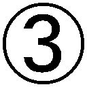
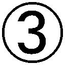
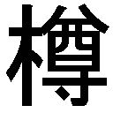

| なぜ＜ことば＞はウソをつくのか？ 理性と直観の哲学バトル！ (PHP新書) | |
| 新野哲也 | |
| PHP研究所 (2005) | |
なぜ〈ことば〉はウソをつくのか？
――理性と直観の哲学バトル！
新野哲也
できないと思っていたのに、思い切ってやってみたらできたという快い経験は、だれもがおもちだろう。気がすすまない仕事も、いったん手をつけると、案外おもしろく、すぐにかたづいてしまう。
そのとき周囲の景色がちょっとちがって見える。グズグズしているとき、重く灰色だった世界が明るく、軽やかになっている。といっても、世界が変化したのではない。何でもできる自由な地平へ、じぶんからとびだしていったのである。
とびだしていった先は、直観の広がりである。そこが明るく、軽やかにかんじられたのは、意識が消えていたからである。意識は言語的思考である。ひとはことばの文体を借りて何かを考える。このとき言語的思考をつうじて他人のことばがもちこまれる。「できない」と思ったのは「おまえはできない」というイジワルなことばが聞こえてきたからである。
無駄話やグチが有害なのは、そこで交わされることばが〈思考の原型〉となって自分自身にもちこまれるからである。つまらない感想や批判、揚げ足取りのことばばかり交わしていると、その文体を借りてモノを考えるようになる。「イヤになっちゃう」「わるいのはあいつ」ということばを頻繁に使っていると、何かをするとき、すぐにイヤになり、わるいのはあいつと責任転嫁したくなる。
そのうえ〈ふり返る〉という反省を契機として生じたことばは、元来、後ろむきにできている。反省は、粗探しや批判にとどまらず、自己憐憫や自己否定へむかう。喫茶店でお喋りに夢中なオバサンたち、ニュース・ショーのご高説、焼き鳥屋のグチや批判、ことばがとびかうところにあるのは、どれも、パターン化された形式言語のルーティン・ワークなのである。
できないと思うことも、思い悩むことも、ことばの世界の出来事だった。思うということ自体、ことばのはたらきだったからである。ことばに過剰適応すると、臆病に、凡庸になってゆく。できることができなくなり、新しいアイデアもでてこない。元気やつよさ、たのしさという人生にいちばん大事な素養も、ことばの世界にはみあたらない。
直観は、こんなことばが、すべてウソになってしまうような地平に広がっている。
ことばの脳と直観の脳は別物である。ふだんひとは、直観の脳を使っている。相手にしているのは、目の前の場面やいまやっていること、これからやることだけである。行動とむすびついている直観は余計なものがなく、単純明快だが、ひらめきやインスピレーションは、この単純な回路を経由してやってくる。
直観は、ひらめきや第六感だけをささない。生きている身体、生きるための行動、生をゆたかにする感覚は、この非言語の領域で息づいている。そこに多くの可能性がひらけ、何でもできそうな気がするのは「できっこない」「世間は甘くない」ということばがどこからも聞こえてこないからである。
「思い切ってやる」「堂々とふるまう」というのは、行動や身体問題ではなく、ことばの壁を跳躍することにほかならない。「思い切ってやってみたらできた！」のは、はじめからできていたのである。迷い、悩み多きひとは、たいてい、この跳躍がニガ手だ。同じ場所で、同じ考えや気分にしがみつき、どこかにひらけているはずの新しい風景へとびだそうとしない。
直観が、ことばの壁をとびこえ、縦横無尽にうごきまわることができるのは、行動とむすびついている心性だからである。もともと直観は、行動という、イキモノにとってもっとも大事な素因とペアを組んでいた。直観には、経験則や常識、技術などがふくまれている。かつてひとは、直観と行動だけで荒々しい自然世界を雄々しく生きていたのである。
一方、意識やことばは、気体のようなものだ。あるといえば、たしかにあるのだが、モノやコトのように地上の一角で物証的に存在しているわけではない。実体がないのは、感情も同様である。ひとは、よろこび嘆き、怒るが、感情それ自体は、どこにもみあたらない。
いまここにないものはどこにもないが、ことばの世界では、ないはずのものが、ことばをとおして出現してくる。心配や不安、疑いや誤った思いこみを解消できないのは、実体がないものは、手に負えないからである。
ひとは、日常、実体としてどこにもないものにつきうごかされて生きている。
相手にしているつもりのものが、どこにもなければ、空転するばかりである。
身体や五官、行動は地にしっかりと足をつけているのに、意識やことば、感情は、空にうかんでいる。ことばがウソをつくわけは、ことばは足を、しっかりと空につけているからだったのである。現実と空想の、この落差が、迷いや悩み、ストレスをうみだす。世間や他人、自分自身とうまく折り合えないのも、じぶんのちからを思う存分、発揮できないのも、そのせいである。
世界や人生、自画像は、理性というフィクションと直観というリアリティが対立する二重構造のうえにつくりあげられている。新しい知をつかみとるには、ことばの壁をこえて、前へ跳ばなければならない。後ろをふり返ると、感想や思い、反省や批判が渦巻いている。だが、前には何もない。何もないから何でもできる――それが、直観の輝きである。
本書が、ことばの世界から輝く直観の地平へとびだすためのスプリング・ボードたりえたらこれ以上のさいわいはない。
二〇〇五年四月
新野哲也
目次
第一章
ことばのセンスと直観を磨く
じぶんのことばで語ろう
借り物のことばは何も語らない
形容詞は「ダッセー」「サイコー」、副詞は「チョー」だけと使用言語を極端に節約しているひとがいる。一方、ネットの書き込みでは、匿名の誹謗中傷、酒場では、使用料がタダの大言壮語や言いたい放題がまかりとおっている。
両方ともゆたかとはいえないことば遣いだが、他人を傷つけ、ウソをつく後者のほうが罪深いのはいうまでもない。
身体運動には限界がある。一方、ひとの口から発せられることばには、際限がない。ことばはそれ自体、十分に罪深いものだが、悪意をもって使用しては、ほとんど犯罪であろう。
ことばには、どこにも「一回の適量」や「使用上の注意」が書かれていない。そこで身に余ることばを多量にもちいて他人や世間を一刀両断してみせるのだが、そんなことばからは何もつたわってこない。
かれらは、ことばそれ自体が何かを伝達すると思っている。ところがことばは、何も語らない。ことばがつたえられるのは、語られる中身である。中身がなければ、荷台が空の大型トラックのように、いくら威勢がよくてもだれもありがたがらない。
ことばは、何かをつたえるものでなければならないが、伝達できる中身は、ことばそのものではなく、そのことばを発する当事者の実力や品格に依って立っている。商売優先の商業紙が世界平和を、じぶんのこともよくわからない若者が人類のあるべき姿を語っても、うったえることができるのはわずかである。
某代議士が「わたしはよく若いひとにいってきかせるのだが......」とふんぞり返ったとたん数人の若者が会場から立ち去った。代議士が何をいうか、すっかりわかってしまった、というより、代議士がじぶんのことばをもっていないことが会場につたわってしまったのである。
それがことばのこわさである。聞き手は、ことばではなく、発言者のひととなりに耳を澄ませている。どんなつまらないことばも、そのひとらしいものなら熱心に聞き、どんなりっぱなことばも、借り物のことばならソッポをむく。
ことばを上手に使うには「ことばは何もつたえることができない」ということをわきまえることである。そのことがわかれば、ことばとつきあう態度も固まってくる。
「国境をなくして世界の人々が手を結べば平和になるのです」という講演を何十年もつづけている高額所得者のタレントがいるが、こんな講演で感涙にむせぶひとは、新興宗教やオレオレ詐欺に大金をまきあげられてよろこんでいるようなものである。ことばにたいする態度が甘いのである。
専門用語や新奇な外来語、神秘的な用語を耳にしてすぐに感心するひとがいる。「世界市民」と聞けば、「国民」はもう古い、「改革」と耳にすると「これからは改革の時代だ！」といともかんたんにことばの虚仮威しにひっかかる。じぶんのことばをもっていないからであろう。わからないときはそう白状しておくのが無難だ。意味がわからないことばを安易に請け売りすれば、こんどはダマす側にまわることになる。
わかったつもりだからアヤしい
「わからない」とかんじることも知恵である。否、わかることとわからないことを峻別するのが知恵である。
不可知論のソクラテスも、純粋理性批判のカントも「わかったつもりのこともアヤしい」といった。なにしろ井の中の蛙は、世界のことが全部わかったつもりなのである。
「わからない」ということを大事にすると、ことば遣いに奥行きがでてくる。わかってしまえばそれでお仕舞いだが、わからなければ、周辺をたどって新しい発見に胸をときめかすことができる。
それが会話のたのしさである。りっぱな文言でピシャリときめつけられたり、高邁な理想を聞かされると重苦しいが、身辺のさまざまなことを、そのひとなりのことばで聞き、語るときは夜が更けるのも忘れる。
じぶんと釣り合ったことばを使っているときは、じぶんも世界もあるがままの等身大に見えている。わからないこともあるが、わからないことが山ほどあるのが、世の中である。だから会話がはずみ、話の内容が面白くかんじられる。
こんなとき、新しい神の出現やご利益の壺、すぐにカネを振り込めという話をもちだしても、だれもがシラーっとするばかりである。じぶんのことばをもっているひとは、けっしてダマされないのである。
【Hint】
ことばは語るひとのキャラクターとむすびついて意味をもつ。
すぐに答えを見つけなくていい
「考える」ではなく「かんじる」のが賢明
「考える」と「かんじる」は、似て非なりどころか、まったくの別物である。
何かを考える前に何かをかんじている。そこでとまっているのが「無心」である。ぼんやり風景を見ているとき、何かを考えているのではないが、何かをかんじている。無心に風景に見入るということは、禅でいう「看経の眼」（＝非我見）であってそれだけでえがたい体験なのである（看経とは、声を出さずにお経を読むこと）。
ところがわれわれは、看経の眼どころか、あらゆるものを自我というフィルターをとおして凝視している。このとき、無心で見ていれば目にはいったであろうものを見逃す。何かを意識する、ということは、それ以外のすべてを、視野の外へ追いだしてしまうことなのである。
高度に科学化・情報化された現代社会では、生身の感覚よりことばが優位に立つ。
論理や物語化、コミュニケーションやマニュアルと、われわれの生活には、ことばが多彩な形でかかわっている。その一方、直観は要請されない。「かんじる」という感覚が「考える」という意識の陰に隠れて出る幕を失っているのが、情報化社会の落とし穴なのである。
何かを考える、ということはクモの巣に捕らえられた蝶のようなものである。ことばというねばねばするウエッブに羽の自由を奪われ、気がつくと、直観や感性という生き血がすっかり抜きとられている。
考える一歩手前のところでふみとどまる。すると、蝶がひらりとクモの巣をかわして自由な空間へ躍りでるように、目の前に新しい風景がひろがってくる。考えるのではなく、かんじるのである。世の中のことは、それでまにあう。世界は、考えるまでもない役立つことと、考えてもわからない、役に立たないことからできあがっているからである。
かんじることのメリットは、物事を広範囲にスピーディに俯瞰できることにある。
視点がかわると、頭のきりかえがきき、柔軟で幅の広い考え方もできるようになる。一つのことにこだわっていると気づかない思いがけないユニークな着想に出会うこともまれではない。
クモの巣のパラドクスから逃げろ！
思い煩うひとは〝何か〟について思い煩っている。だが、その何かが本人が思っている以上に重要だったためしはない。何かについて考えることによってその何かが、本人にとって実際以上に大きなものとなって襲いかかってきただけである。
壮大な景色の前に立って足元の石ころを凝視する「クモの巣のパラドクス」にはもう一つのパラドクスが重なる。つまらない、小さなものほど、目にとびこんできやすいのだ。ふっくらとかわいらしかったひとが、一念発起の絶食の果て、不健康になって内臓疾患に苦しみ、鬼の形相、などというのがその好例である。
世界には目をむけるべき多くのものがあるが、彼女は「じぶんは肥満で醜いのではないか」ということ以外に何も目にはいらず、しかも、その悩みが「いかにゆたかな人生を送るか」という切実で重大なテーマから遠いところにあったがゆえに、ちくちくと痛く胸に突き刺さってきたのである。
ことばで考えると、大抵、このパラドクスに捕まる。ことばで考えるということは、ことばに捕まることだからである。「ああでもないこうでもない」と考えるのは、ことば（＝意識）についてあれこれと案じているのであってモノの本質を吟味しているのではない。
何かを考えるときは、ただながめるだけで十分である。はじめはとりとめなく、心もとないが、やがてイメージがわいてくる。さらにながめつづけると、そのイメージがネットワークをつくり、じきにくっきりとした輪郭があらわれてくる。
芭蕉は「ただひたすら風景のなかに立て」と教えた。
「五、七、五」と指を折って考えると、ことばにすぎないものしかでてこないが、何かが思いうかぶのをじっと待っていると、やがてことばをこえたものが舞い降りてくる。古池やかわずとびこむ水の音......からは、ことばをこえた静かな午後の気配がつたわってくる。だが、同じ五、七、五も「浅草や神社でハトが遊んでた」では、ただのことばつなぎである。
寅さんは「それをいっちゃオシマイ」といった。ことばにするとオシマイなのは、ことばは終着駅だからである。意識も同様である。思っちゃオシマイなのである。そこから先へはどこへも行けない。
われわれは、非言語の物事、事象にとりまかれている。思ったり言ったりするのはこれらをことばにおきかえることだが、大抵は、急ぎすぎる。そのうえ、独断や偏見、思いこみをもちこみがちだ。話し合うほど、考えるほどに事態が悪化するのはそのせいである。
意識やことばにせず、対象のまわりをヒラヒラととんでいるのが賢明である。
そのうちに答えが見つかるであろうし、見つからなくとも問題のほうが自然消滅している。
いつも問題をかかえているひとは、ことばというクモの巣にみずからとびこみ、身動きできなくなっているというケースがじつに多いのである。
【Hint】
何かを考えるときは、ただながめるだけで十分である。
実体をイメージできることばをもちいよう
「赤い雪」はどこにある？
「海を見に行こう」というとき、話し手と聞き手は、まったくちがった海をイメージしている。
一方、海を見たことがないひとに、海といってもイメージがつたわらない。ことばは、体験的なイメージや想像力に助けられてはじめてコミュニケーションの道具となる。その意味でことばは話し手と聞き手、書き手と読み手の協働作業といってよい。
協働関係にあるのは、記号とイメージも同様である。実体をさししめす記号と、実体を想起させる直観が明瞭なイメージをつくりだしてはじめて記号は意味を孕む。
ことばと実体の関係は同一化である。ことばと、そのことばがさししめすモノやコトが釣り合ってワケ（意味）が生じる。この同一化は不完全であいまいだが、齟齬をうみながらそれでも一応、ことばは、イメージを介して実体とむすびついている。
ところがことばは、独立した存在でもある。本来、ありえないことだが、ことばが一人歩きするのである。「赤い雪」は存在しないが、「赤い雪」ということばがあれば、赤い雪がどこかにあるかのごとく、虚構がデッチあげられる。
このとき、日常のなかにありえないものが侵入してくる。イメージが虚構をつくりだすのである。現実世界にバーチャル・リアリティが割りこんでくるわけだが、このとき人々は〝架空の空間〟の住人になる。
「人権」ということばはあっても実体は存在しない。実在するのであれば、加害者だけに人権があって被害者にはないなどという錯綜はおこりえない。錯誤が生じるのは、実体のないものを相手にしているからなのである。
この世は、ことばと実体が釣り合っているリアリティ、 ことばだけがあって実体がない架空、実体はあるが語りえない直感が、三つ巴になって混交している。そうとわかれば、どんなことば遣いをすべきか、おのずと明らかであろう。
ことばだけがあって実体がない架空、実体はあるが語りえない直感が、三つ巴になって混交している。そうとわかれば、どんなことば遣いをすべきか、おのずと明らかであろう。
実体をはっきりとイメージできることばだけをもちいる。それだけでことば遣いがオシャレになる。ことばが、相手の想像力の助けを借りて意味をもつのであれば、実体をイメージできないことばをもちいるのは、ルール違反なばかりか、ヤボなのである。
「海を見に行かないか」と「江ノ島海岸を裸足で歩いてみようよ」では、大違いである。
江ノ島も海だが、東京湾も海である。海ということばが相手にどんなイメージをあたえるかをふまえ、どこでどんなふうに海を見るかを具体的に語る。イメージがゆたかになってくると二人の距離も詰まってくる。
ところが最近は、具体的にいわず、抽象的にボカすことがトレンドになっている。
スカッとしたい、癒されたい、元気をもらいたい、などという。だが、具体的なイメージをともなわないことばでは、相手に何もつたわらないばかりか、何かをつたえたことにさえならない。
その言語感覚で「地球環境をまもろう」「平和のために何をすべきか」などという気宇壮大なことを口にする。地球環境や世界平和のために何かをやろうとしているひとを、身近にかんじることはできない。
なぜなら、かれは現実ではなく、バーチャル・リアリティの住人だからである。
大事なのは「人権」ではなく「人格」
世の中には、実体が不明なことばが氾濫している。そんなことばにつきあっていると実体のない架空の世界へ迷いこみ、生きているという実感が失われる。生きているという実感はそれだけで十分に仕合せなものだが、バーチャルなことばは、その至福感や躍動感を台なしにしてしまう。
何かを思うとき、記述するときは、映像だけを思いうかべる。
だれかと食事をするときは相手の顔、行こうとしている店、財布の中身などの具体的なものだけを思いうかべ、思いや理屈、気分などの映像にならないものはすべて切り捨てる。映像となって目にうかびあがってこないものはこの世に存在しないか、バーチャル・リアリティのなかでゆらいでいる。
人権ということばからは何もうかびあがってこない。だが、人格といえば、やさしくて誠実なだれかの顔が脳裏をよぎる。この世に人格はあるが、人権は、バーチャル・リアリティのなかにしかない。そんなことばは、海を見たことがないひとが、「ウミ」という音や記号から江ノ島も東京湾もイメージできないように、実体を何もつたえることができない。
目に見え、ふれることができ、実体を明瞭にイメージできないことばをシャットアウトするだけで言語生活がゆたかになる。空想は失望や幻滅しかもたらさないが、実体は、手ごたえがあって躍動的だ。実体を語るとき、ひとはだれも、口数の少ない雄弁家になるのである。
【Hint】
「江ノ島海岸を裸足で歩かないか」とできるだけ具体的にいおう。
思考の深みにはまらないコツ
なぜ、一晩考えたあとから後悔するのか？
理路整然とした議論が、突如、罵りあいに変貌するシーンを目撃したことがないだろうか。
感情を原基とすることばは、話しぶりがどんなに冷静沈着でも、相手の感情を刺激せずにはいない。
じつはことばは「愛している」ということばが音楽のように聞こえるように、役割の半分以上が感情の伝達である。どんなことばも情感をひめているが、われわれは、案外、そのことに無頓着だ。テレビの討論番組やバラエティ、ドラマでひとが注意をむけているのは、意味ではなく、じつは感情の流れだが、そのことに気づいているひとは少ない。
直観でかんじとり、それをことばにおきかえるのが、思考のプロセスである。
直観に感情は介在しない。感情は、意識やことばがはたらきだすときに封入される。
だが、いったん感情がうごきだすと、直観はもうはたらかない。
感情の充電をうけて意識やことばが活発にはたらきだすが、このとき、モノの本質をつかみとっているかというと、はなはだ疑問だ。
感情によって逆に事態が見えなくなる。このとき意識やことばは、感情を増幅させるものでしかない。それがことばの陥穽である。売りことばに買いことば、言わずもがなや口が滑ったにいたっては完全に本論や本質から逸脱している。言語生活は、じつはそのような混乱のうえに成立している。
悩みや心の痛みもそうである。ひとは、心の苦しみのネタを感情抜きにすばやく、さらりと直観したあと、意識化してゆっくりと苦しむのである。思い悩み、ことばにしても事態がよくならない理由は、意識化するからである。ひとは考えても仕方がないことを考えて「どうしてよいかわからない」と悩むのである。
物事をサラリととらえる癖をつけるべきである。それで十分に考えたことになる。
よく考えることは、物事を感情でとらえなおしているにすぎない。それではかえって事態をややこしくしてしまうばかりか、判断を誤る。一晩考えたことは、大抵、すぐ下した判断より不純な要素が多く、あとで後悔するものである。
何かを考えるときは、深みにはまりこむ前にそこから離れることである。
離れてながめると俯瞰がきき、再アプローチがしやすくなる。拡散すると、周辺も見渡せるばかりか、別の見方もできるようになる。一目見てすぐわかるもの以上のものが、長く考えてでてくることはまれだ。
じっくり考えると、何を考えるべきだったか、わからなくなる。ひとは、問題それ自体ではなく、考えを考えるからである。
他人の意見をうけいれてこそ、じぶんの意見
考えが考え、悩みが悩み、おしゃべりがおしゃべりをしている。ことばはすべてトートロジー（同語反復）という堂々めぐり構造をもっている。
２＝１＋１を論理的というが、それが何かを考えたことといえるだろうか？
同じテーマを堂々めぐりした長舌合戦では、だれが何を話したのかも、結論が何だったかも思いだせず、怒ったり、居直ったり、スネたりという感情的なシーンしか記憶に残らない。それもどこかに後味のわるさをひきずっている。
〝ヒット・アンド・アウィ方式〟で考えると、多角的に、ソツなく考えることができる。しかも偏向がなく、他人の意見をうけいれる余裕もでてくる。
じぶんの意見をもつのもわるくないが、その意見をまもるために理論武装しては、考えるのではなく、たたかっていることになる。悩みにとりこまれるのは、解決するのではなく、格闘するからである。
かれらの悩みは「どうすべきか」や「どうあるべきか」ではなく「こうなってほしい」「どうしてそうならないのか」である。受動的に事態が好転するのを期待し、じぶんからは何もしようとしない。
しかも他人の意見や助言をうけいれる心のやわらかさにも欠ける。
あまり深く考えないほうがよいのは、考えるよりも、やるべきことや耳を傾けるべきことのほうに、ずっと大きな意味や価値があるからである。
【Hint】
よく考えるには、サラリととらえなければならない。
ことば遣いが人格や性格をつくる
性格はことばからつくられる
性格を変えたいというひとが、案外、少なくない。といっても、軽々しい変身願望ではなく苦労性や内気、短気など、じぶんの足をひっぱっている損な性格を改善してよりよい社会生活を営もうという前向きな姿勢である。
性格についてはギリシャ時代から多くの研究がある。
ヒポクラテスの体液説にはじまってクレッチマーのかの『気質と体型』、ユニークなところでは、フランシス・ボオの『容貌と性格』などがあるが、パーソナリティ論になると、資質ではなく、社会的な側面から性格が語られる。内から生じるものとしてではなく、性格が他者や世界にどのように映っているかが問われるのである。
積極的なひとはあつかましく、社交的なひとは軽薄だ。慎重なひとはしばしばグズにみえるし、粘り強いひとは執念深い。素直なひとには自主性がなく、さっぱりしているひとは単細胞と、好ましい性格も、外からみると好ましくないパーソナリティに映っているケースが少なくない。
その反対に、苦労性で内気、短気な性格も、紙一重の差で、緻密で控え目、情感がゆたか、という好ましいパーソナリティに変化するのである。
もっとも、性格という問題意識がすでに時代遅れで、現在はパーソナリティから、ことばをふくめたパフォーマンスへ目が移っている。パフォーマンスは一つの演劇的行動だが、これにはアクションのほか、言語運用がふくまれている。性格や個性、パーソナリティが、他者との演劇的関係において表出してくるのであれば、それこそが身振りのほかにことば遣いをふくみこんだパフォーマンスにほかならない。
生まれつき内気なひとが、じぶんの研究を理解してもらいたいと望んだとき、壇上で雄弁に自説をのべるだろう。一方、陽気で明るい環境で育ったひとが、失恋して失語症にかかるというケースも珍しくはない。
その契機となるのが、パフォーマンスの能力である。
といっても、むずかしい話ではない。舞台に立ったつもりで、思い切ってやってみることである。やってみると、生来説や環境説をこえた新しいじぶんが出現してくる。
性格を変えたいのは、じぶんを変えたいからだが、そんな無理をしなくとも、なりたいじぶんを現実に演じると、それがフィードバックされていつのまにか、パーソナリティが変わってしまうのである。
人生は壮大なるパフォーマンスである
ことば遣いも同様である。おだやかな性格になると、ことば遣いがおだやかになるのではなく、おだやかな物言いをすると、心根がおだやかになるのである。
ひとは、じぶんの口からこぼれることばの逆支配をうけている。帰国子女ふうな語尾上げ発音にはじまって「じゃないですかあ」「みたいな」まで女子高生から大学教授にいたるまで奇妙な言い方が日本中を席巻した。
だれもが同じ物言いをするようになったのは、心が似通っているからである。
ことば遣いで性格がわかるのは、心（＝意識）をつくりあげていたのがことばだったからである。
意識はけっしてことばの外にでられない。これを逆手にとると、りっぱなことば遣いをすれば、性格もりっぱになる。ことば遣いによって言語的世界観があらわれる。ことば遣いが人格や性格をつくりあげるわけは、人生もまたパフォーマンスの舞台だからである。
前世紀までは性格学がさかんだった。だが、それが〝血液型占い〟をこえるものではないとわかり、性格研究は、そこから横跳びにパフォーマンスの領域にふみいった（日本ではまだだが）。
人生が「じぶん」という配役をあたえられた劇なのであれば、ひとは世界という舞台で死ぬまでじぶんを演じつづけなければならない。そのときに舞台の真ん中で「生まれが」「育ちが」などとグズグズいっても仕方がない。
ことばは、演劇的効果として吐きだされる。そのときは......なりたいじぶんがきっというであろう台詞を、堂々とのべるべきである。
わたしの口からでたことばが世界のものとなる、というのは、そういう意味合いだが、そのときは、性格も人生も、じぶんがなりたかったものになっているのである。
【Hint】
ことばを慎重にもちいるだけで「なりたいじぶん」になれる。
アイデアは外からやってくる
強迫観念の虜になっていないか？
「カギをかけ忘れたのでは？」「ポストにいれたハガキが途中でひっかかっているような気がする」などの強迫観念にとらわれやすいひとには、アイデアマンや芸術家タイプが多い。
強迫観念は、考えたくもないのに考えてしまう奇妙な心理現象だが、強迫的にやってくるのは、心配事だけではない。よいアイデアや芸術的インスピレーション、一目惚れの恋も外から強迫的にやってくる。
ちなみに、本人の意志とはかかわりなくおきる睡眠中の夢も、強迫観念の一種である。
想起には、まえぶれも根拠もなく、外からとつぜんやってくる強迫型と、記憶や体験をもとにじぶんで思考を組み立てる自発型の二種類がある。前者は芸術家タイプだが、後者には官僚や学者が少なくない。実業家は両者の中庸が理想的という。カンがはたらかなければ目端が利かず、かといって思いつきだけでは、会社経営にソツやスキがうまれるということであろう。
ひとは、宇宙線のように空から降ってくる直観と、脳ミソから絞りだす思念を組み合わせて有益なことを考え、あるいは無益な考えに時間とエネルギーをついやす。有益なのは、考えやことばのうちの数％にすぎないが、その数％を拾い上げるのが、なかなかむずかしい。
強迫神経症では、無益で非現実的とわかっている考えを捨てられずに苦しむが、つまらない考えほど心に深く突きささってくる。よい考えや新しい発想がやってこないのは、この無益な考えがどっかりと心のなかに腰をすえ、外からインスピレーションがやってくるのを妨害しているからである。
信念があるのは結構だが、その頑固な考えのために頭をきりかえられないようではかえってマイナスである。元来、ケチん坊にできている人間は、じぶんの考えをなかなか捨てられないが、それが自我の領域にまで広がっていると、考え方を変えることによってその自我がゆらいでしまうようにかんじ、ますますじぶんの考えに執着するようになる。
頭が固いのも依怙地なのも大抵の場合、自我の問題なのである。「おれは何でも知っている」とうぬぼれているひとも、じつはその大半は、先入観や予断、偏見、思いこみ、はやとちりである。その考えも、自我と関連しているため客観性に乏しく、柔軟性に欠ける。
固定観念を捨てるということは、無益なことばを捨てることである。家族や夫婦、恋人から愛ということばをもぎとったら途方に暮れるだろうが、本当の愛は、そこからはじまる。
「愛してる」ということばにもたれかかった愛には、相手を大切に思う、よろこびやかなしみを分かちあう素朴な感情が、往々にして抜け落ちているものである。
内容がないほど、りっぱなことばになる
ことばは多分に、強迫的なかたちで人々にとりついている。「赤」ということばが赤い色をさししめすこと自体、十分に強迫的だが、言語世界はこの強迫的な構造を骨格にしている。
一方、われわれは、ことばではなく、目や耳などの五官や身体感覚、行動や経験をとおして現実世界とむきあっている。
ことばと身体感覚の落差から神経症が生じたという。直観がとらえた世界とことばの世界のくいちがいが、世界そのものへの不信感をかもしだし、不適応をまねき、世界を灰色に見せているというのである。
愛や幸せ、信頼や友情、平和や正義など、骨の髄まで沁みこんでいるりっぱなことばを取り外すと、裸のじぶんがむきだしの世界に放りだされたようにかんじる。インスピレーションが外からやってくるのはそんなときである。ふだんはかんじることがなかった愛や幸せ、信頼や友情の大切さ、平和や正義の意味が、ことばをこえて、ようやくわかってくるのである。
ことばは強迫的にとりつく。何もないのに、何かがあるように思える。反対に、そこにあるのに気づかない。ないのに、あるように思えるのはことばの強迫観念である。あるのにそれが見えないのは、直観は意識に転換されにくいからだ。チルチル・ミチルに青い鳥が見えなかったのは、かれらが探していた幸せが、直観でしかとらえられないものだったからである。
われわれが愛に気づかないのは、愛が、ことばにおきかえられているからである。強迫的にとりついている愛ということばをひきはがすと、ことばをこえた愛が、直観的にかんじられる。
名案はことばが掃きだされた庭に降りてくる。「直観瞑想」がそれである。論理や因果律、合理や整合性をスッとばして、次々とイメージの断片を思いうかべてゆく。鉛筆、夕焼け、たこ焼き、地図、広っぱ、ギター、菜の花、踏み切り、とイメージを広げてゆくと、そのうちに、使える素材に出くわす。
それが何であれ、論理的な思考ではけっしてでてこなかった何かが、もとめていたアイデアの原型としてうかびあがってくる。非論理へ跳躍したことによって知的宇宙がひろがったのである。そのなかの役立ちそうなものだけをピックアップしてあとは流れ去るままにしておく。
なぜいままで、こんなつまらないことにこだわっていたのだろう？
と気づいたら、それも、直観瞑想の望外の収穫なのである。
【Hint】
アイデアはそこにある――ことばが隠しているだけだ。
〝見ること〟が知と創造力の源泉
「見ればわかる」が知の出発点
英語より日本語のほうが語彙が多いのは、日本語がそれだけ多様だからであろう。
だが、例外もある。「注意」である。日本語では「まちがえないように注意する」「車のとびだしに注意する」というふうにしか使われないが、注意にあたる英語にはアテンション（attention＝注意）のほかにノティス（notice＝注目）、ヒード（heed＝留意）、リマーク（remark＝注目）、リガード（regard＝配慮）、ケア（care＝用心）、マインド（mind＝心する）、ワーニング（warning＝警戒）、インタレスト（interest＝関心）、コーション（caution＝警戒）と多くの言い方が用意されている。
じつは欧米人は、日本人よりよほど用心深い。われわれが心といえば「物思う器」だが、欧米人の場合は「気をつけろ」というニュアンスが色濃い。しかもその注意力を「車のとびだしに注意」というふうにばかりではなく、観察をとおした知や創造へと発展させる。
精神医学者の木村敏はこういう。「古来、西洋の科学はものを客観的に見ることを金科玉条としてきた。理論（セオリー）の語源はギリシャ語の『見ること』（テオリア）である。西洋では、見ることがそのままとらえることや理解することを意味する。そしてこれが、たんに客観的観察を本領とする自然科学だけではなく、哲学をふくめた学一般の基本姿勢なのである」。
西欧人は〝注意をむけること〟に知の原点をおく。一方、日本人には〝頭で考える〟ことが知である。かつて日本で教養といえば漢文だったが、現在では、英語が話せなければインテリとはよばれない。外国語をとおして新しい知識を吸収するのが文化だった日本では「じぶんの目で注意深く見る」という知的態度が要請されることはついぞなかった。
ことば（しかも外国語）をとおして世界をながめるとき、動員されるのは、観察眼ではなく語学力と思考力だけである。明治四年の岩倉使節団以来、日本の大学がいまなお、西洋思想のエージェント（代理店）と語学訓練所から一歩もでることができないのはそのせいだが、おかげで日本人は、じぶんの目で本質をとらえることにすっかり不注意になってしまった。
見ることが、そのままとらえることや理解することを意味する、というのは「直観的理解」のことである。どのようにわかったのか、口ではうまくいえないが、ともかくわかった、というかんじがある。それがいちばん大事なのだが、日本では、この知的態度が排斥される。観念の世界にもちこみ、言語化されなければ、日本では、わかったことにならないのである。
注意力も直観である
直観的理解が創造性にむすびつくのは、ことばや観念から自由だからである。ニュートンはりんごが落ちるのを見て万有引力を発見した。見るという行為はそれだけで十分に知的なふるまいなのだが、われわれは、驚くほど何も見ていない。一時間も話しこんだ相手のネクタイの柄さえ、見ていない。それではいったい何を見ていたのか？ 目で見ることができない数字や情報、観念や感情を見ていたのである。
そのことで頭が一杯になり、出口の段差でズッコケたのは、観念ばかり見てじぶんの足元という現実が目にはいらなかったからである。〝歩く百科事典〟のようなひとがいるが、調べるとわかるようなことをひきずるのは、むしろ有害である。頭のなかが知識や観念、情報で一杯なひとは、モノを素直に見ることができなくなってしまうからである。
見ることは、そのままの姿を捉えることだが、インテリは、評価や判定、批判などの観念をとおしてながめる。見るのではなく、見えるものを観念化している。見えるものが少ない上にせっかく見えたものを観念の暗闇に送りこんでは目をつむって生きているにひとしい。大陸や西欧から戴いた知識を翻訳して知的権威になりおおせ、官僚中心の学歴型社会をつくった日本が失敗をくり返すのはそのせいである。
識っていることは、本人が思っているほど役に立たない。ペーパー・テストのない実社会でもとめられるのはクリエイティビティだが、じつはどんな仕事も、多少の差はあれ、問われるのは、何かを創造する能力である。社会が「スクラップ・アンド・ビルド」の原則で動いている以上、創造力こそが社会発展の基礎資料として要請されているのである。
頭脳のＣＰＵ（知的容量）をメモリー（記憶力）にふりむけた人々が社会の中枢に陣取っているところに、現在の日本が非効率な理由がある。もっとも、最近の日本の「失敗の原因」はそこだけにあるわけではない。
現実機能の低下としての「不注意」が、社会的にも、個人的にも蔓延している。
失敗の九九％は不注意からやってくる。その不注意がそれまでの努力を台なしにしてしまうのは、国産Ｈ２ロケットだけではない。数百億円と科学の粋をつくしたロケットが外し忘れたネジ一本でオシャカになったように、日本中の組織、団体、公人、私人が不注意による失策をくり返し、泣きの涙にくれている。
現代人は、多くの知識や情報、観念や思想をひきずっているが、そんなものは、生きることと何の関係もない。生きることは「よく見る」ことであり、それが創造性や注意力とかかわっている。見るという行為は、直観を使うということである。注意力も直観である。生きることは直観的なふるまいだったわけだが、多くの人々は、いまなお、情報を漁り、観念をふり回して思想をのべたてる。
ことばは、じぶんではなく、世界に属している。そんなものに頼って、よい生き方ができるわけもないが、それ以上に、目に見えないものに気をとられると、段差に躓いて怪我をしないともかぎらない。
よく周囲を見ること、注意深くあることだけで人生がすっかり明るくなるのである。
【Hint】
目で見ることのできないものは人生にあまり役立たない。
〝できない〟という思いこみから脱皮する
ことばは直観を抑圧する
「じぶんにはできない」とかんたんにいってのけるひとがいる。
やれるかやれないかは、やってみなければわからない。できない、というひとは、やる気がないのである。エイッととびこえると何でもないのだが、その勇気がなければ、新しいことがきびしい障壁となって立ちはだかる。
「じぶんにはできない」というのは、大抵の場合、異物や未知のものからじぶんをまもろうとする悲鳴である。
新しいことに挑戦できないのは、新しいことにぶつかってゆく覇気がないのではなく、古いことを捨てる勇気がないからである。ぐずぐずと文句をいうこと自体、過去へしがみつくことだが、考えるほどに臆病になってしまうのは、そもそも考えることが、後ろむきにできているせいであろう。
過去を考えることはできるが、明日にむかって思考を練り上げることはできない。
いま思ったことが気づいた瞬間には過去になっているように、考えるということは、すでに過去の時制である。「わたしはつねに未来にむかって考えている」というひともいるが、考えること自体、過去の時制なのだから、たんに未来を過去に送りこんでいるにすぎない。
考えるという過去の時制をもって現在や未来にたちむかうことはできない。たちむかえるのは直観だけである。反省や批判、予断をもたず、注意深く見るだけの直観にそれができるわけは、直観は無意識という謎の領域に回路をもっているからである。動物に予知能力があるように、直観には思考をこえた、無意識から発信されるインスピレーションがある。
無意識は非言語の知的領域だが、高度な科学的・芸術的ひらめきから、習慣化された日常のふるまいまでを一手にひきうけている。言語中心主義では〝意識に追い出された謎の部位〟となり、マルクス主義では「ありうべからざる疎外物」とされたが、無意識は、言語領域をはるかにこえた知的容量をもっている。
その無意識をうまくあやつれないのは、意識が立ち上がってくるからである。
意識は、無意識を抑圧しつつ、出現する。自我の誕生以来、心の主人公は無意識から意識にとって代わられたが、意識はつねに自己制御的にはたらく。生きようとする直観の邪魔をするのが、後ろむきにできている意識の厄介なところなのである。
意識をとりこむことによって自我は、葦のように、ひ弱になった。
新しいことに臆病なのも、すぐ自信を失うのも、傷つきやすいのも、過去の失敗をひきずるのも、すべて意識のなせるわざである。意識が反省・批判・予断という契機を孕んでいるのもそのせいだが、なぜ、心の管制塔というべき意識が、かくも弱々しいのであろうか？
意識が、内省するファンタジー（幻想）だからである。
すべて幻想だからこそ、ひとは、飽きることなく考え、モノ思う。何かを思わずにはいられない強迫現象も、じぶんに不利益な考えにとりつかれるのも、気に病むのもノイローゼになるのもすべて、意識がじつは実体のないファンタジーだったこと、その一点に根ざしている。
意識に似て非なるものが、知性である。
意識が幻想として自我に貼りつくのにたいし、知性は、直観の延長線上にあらわれる。
知性の高いひとが意識的とはかぎらない。むしろ逆である。知的関心や研究、学習は沈黙を友としている。一方、噂話や悪口、愚痴、テレビに夢中なひと、喫茶店でおしゃべりに忙しいオバサンたち、焼きトリ屋で上司や同僚の批判に口角泡をとばすオジサンたちをあげるまでもなく、知性の面ではほとんどみるべきものがない。
生きているのはこの瞬間だけ
意識と知性の共通項はことばだが、これは、鳥類も哺乳類のコウモリも翼をもっているのと同じ収斂進化である。意識も直観も、ともにコミュニケーションや記録の道具を必要とした結果、両者とも、ことばという翼をもつことになった。
だが、その翼がまったく別の空を飛んでいるのは、日頃、よく見るところのものである。
ことばをもったヒトは、幻想をうみだし、その幻想の只中を生きている。国家や法、組織がフィクションなら、アイデンティティは思いこみである。ファンタジーをすべて引き剥がして人間や世界をながめたら、身の毛がよだつだろうが、ながめる前に崩壊している。
心が不安定で危ういのは、ことば（＝意識）の幻想と、直観の現実とに、引き裂かれているからである。ことばと直観の断層線は「時制観念」にも走っている。ことばは、過去や未来に目をむけるが、直観は現在、この瞬間しか相手にしない。直観は「いま何をするのか」という身体的衝動とむすびついており、過去や未来は、無意識の領域へと送りこまれている。
非言語の直観がとりあげるのは「瞬間」だけである。その瞬間性が過去を積み上げ、未来を切り拓く。直観だけでは国家や法ができず、ファンタジーだけでは知性や愛がうまれないように、この瞬間がなければ、過去も未来も、ありはしない。
やってみるという瞬間性がなければ、できるかできないか、という未来時制はうまれない。「できっこない」と思うことは、意識過剰だったのである。ひとは、過去と未来にたいするつきあい方を知らない。モノ思うのがすでに過去の出来事で、現在がすでに未来の一部にくみこまれていることに気がついていないため、現在（＝未来）に過去をもちこみ、やろうと思えば何でもできる未来（＝現在）を「できっこない」という経験的な思いこみで不毛なものにしているのである。
現在とのつきあい方は一つしかない。過去を一切もちこまないことである。それだけで何でもでき、できなければ努力したくなる。努力する価値があるのが未来なのである。一方、過去は、無意識化されて身体に仕舞いこまれている。そのうえ過去をひきずると、過去にたいする過剰適応となって現在と未来が損なわれる。
その過去も未来も、ことばの産物である。
幻想から自由なのは、直観がむきあっているこの瞬間だけである。
直観は〝持続する瞬間〟という非言語的な時空を自由に泳ぎまわっている。
それ以外の時制は、ことばにとりつかれて幻想化している。「できっこない」「甘くない」という弱音は、われわれには〝瞬間〟という時間しかあたえられていない、ということを忘れたもっとも愚かな幻想というべきであろう。
【Hint】
いまこの瞬間以外はすべてファンタジーである。
アイデアは一〇〇％のじぶんから
「自分探し」で見失う本当のじぶん
物事はさらりと見たほうがよくわかる。印象に刻まれるのも、最初の一見で目に焼きついた直観像である。日頃、われわれは、この直観にしたがって判断し、行動している。考えずともわかる直観がはたらかなければ、われわれの日常生活はずいぶんスローモーでギクシャクしたものになっていたろう。
理屈やことばで考える判断や反省、評価は、自我によってねじ曲げられている。対象を見たつもりでも、見えているのは、対象を見ているじぶんである。しかもそのじぶんは、ことばの影響をうけている別人のじぶんである。
われわれはいつも、別人のじぶんと対決している。レストランのメニューを見てなかなか決断できないのは、じぶんのなかの別人と折り合いがつかないからである。むろん「あれもこれも食べたい」という欲張りのケースもあるだろうが、精神病理学には、何事につけても決断ができない病的症例が数多く報告されている。
そのなかの一つに「いまここにいるじぶんは本当のじぶんではない」という妄想がある。
別人が出てくるのではなく、じぶんがいなくなってしまうのである。「自分探し」あるいは「じぶんを見つめる」ということばには、どこかに〝じぶんの知らないじぶん〟がいるという別人妄想がはたらいている。
世間の評価や地位、資質や能力、資格は仮の姿であって本当のじぶんは他所に存在する――と考えるのは、宗教や哲学の次元では正しい。ところが本当のじぶんは、幾何学の点や時間における現在のように見ることができない。点には面積がなく、現在は、気づいたときはすでに過去になっている。本当のじぶんも同じように、反省の次元でしかあらわれてこないが、それ以外に実体としてのじぶんが、どこかにいるわけではない。
さらりと見えたじぶんが、一〇〇％のじぶんなのである。
じぶんを根掘り葉掘りしても何の意味もないどころか、有害である。じぶんを掘り下げるとかえってじぶんが見えなくなってしまう。かれらが関心をむけるのは、他人の目（＝じぶんの目）から見える自我だからである。隠された才能がある、ちがった面をもっている、と幻想をもつのは自由だが、ことばがつくりあげたじぶんは何人もおり、しかも、つねに変化して掴みどころがない。
一〇〇％のじぶんは「じぶんが気にいっているじぶん」である。気にいらなければ気にいるようにふるまえばいい。六〇％が八〇％になればすこぶる気分がいい。見ることも、意識することもできない直観的自我とちがい、意識される自我は、適当なところで手を打っておかねば際限がない。
本来、主体者が、自分自身に関心をもつのは錯綜である。主体者は、世界にむかって展望をひらき、世界にむかって行動をおこす。このとき主体者は忘れられている。この忘れられているじぶんが「一〇〇％のじぶん」である。主体者が、世界ではなく、自分自身を見るのは、世界展望と行動力を失った、他人の目に映っているじぶんである。
じぶんは何者か、と問うのは観念論である。モノを考え、行動するときに、迷い、じぶんの力を発揮できないのは、じぶんに目をむけるからである。このとき、反省や批判、予断にさらされて一〇〇％のじぶんが失われる。ひとがりっぱな何かを為しえないのは、未熟だからではなく、じぶんでじぶんを見てしまうからである。
「それは何か」と「それをどうするか」
演劇や絵画で身を立てようというひとが、専門学校へいって才能を枯らす。勉強してじぶんを非力化するからである。知識や技術を仕入れたぶん、肝心のオリジナリティが消え、ただの凡庸な物識りになってしまうのは、学んだ以上に、失ったからである。
才能をのばそうと思ったら、学ぶ態度を捨てて数多くの作品にふれるべきである。学ぼうとしなくても、学ぶべきものは、勝手にむこうからとびこんでくる。それを、一方的に、貪欲にいただいておくのが勉強である。一〇〇％のじぶんを損なわないかぎり、どんな教材も血肉となる。
生きることも同様である。自己否定の必要などすこしもなかったにもかかわらず、ひとは、自己を否定するためにじぶんをふり返る、という不毛な観念論的錯誤をくり返してじぶんを非力化する。わからないことに出くわすと、外国人は「わかるように説明してくれ」というが、日本人は「どうしてこんなことがわからないのでしょう、わたしはバカですね」とうなだれる。
謙虚なのではない。非力化されたじぶんをひきずっているのである。
哲学の領域に、観念や原理をスッとばし、現象だけにむきあう態度がある。たしかに世界は現象からできている。われわれが生きているのも、その現象界である。
世界が現象だけなら「それは何か」という問いは不要だ。大事なのは「それをどうするか」である。科学者や芸術家は、現象をみて「それをどうするか」について心血を注ぎ、評論家や研究者は「それは何か」について考える。観念やことばからできている「それは何か」という問いが何かをうむだろうか？
ことばの世界に生きているわれわれは「それは何か」という問いから逃れられないが、それに応えることは、一〇〇％のじぶんを削りとっているにひとしい。一〇〇％のじぶんが「それをどうするか」と案じるのが考えることだが、このときに次々とアイデアがでてくる。
アイデアの女神は、じぶんを信じている者、じぶんを忘れている者へだけ微笑みかけるのである。
【Hint】
学ぶべきものはいつもむこうから勝手にやってくる。
「ワケ」を捨てて「コト」の経験の地平へ
行動によってひらかれる世界
われわれはモノに囲まれて生きている。空間を満たしているものがじぶんをふくめてすべてモノである以上、この世は、モノと、そのモノが反応しあう音、変化、生成の累積、あるいはその広がりである。
モノは感覚でとらえられて言語化される。このとき意味（ワケ）がうまれる。世界はワケを立てて再編成されるが、その世界は、死の世界である。たとえ春の花畑で蝶が舞い、恋人たちが海辺で青春を謳歌しても、モノとワケの世界には、生のエネルギーがほとばしらない。
われわれは、明るい太陽の下でも憂鬱をかんじ、恵まれた環境のなかでも不安をかんじる。
モノとワケだけでは、すべてが死に絶え、生きているものさえ影絵のようにしか見えない。「チョーシがわるい」「元気がでない」「何を見てもオモシロくない」のはモノとワケしか目にはいってこないからである。
モノは、行為（ヤル）と組み合わさってコトになる。
モノは、反省によってワケになるが、モノがワケをもっただけでは何もうまれない。意味や理由がわかっても、それだけのことだ。世界がひらかれるのは、モノにヤルが作用してコトへ変化したときである。
われわれが生きている場所は、見えるにすぎないモノ、意味を孕むワケがうずくまっている冷たい空間ではなく、ヤル、コトが躍動する空間である。行動によってコトがひらかれた局面だけがわれわれの生の舞台である。逆にいえば、いまやっているコト以外、何も存在しないのが、じぶんと世界の関係である。ヤル、コト以外に、モノ、ワケが存在すると十分にわかっているが、それは、思われている世界にすぎない。
われわれは、思われる世界を生きておらず、生きることもできない。
そこを生きるにしても、ヤルをとおしてモノ、ワケをコトへ変換させなければ、生きていることにはならない。われわれは何という小さな世界を生きているのだろう！ と思うのは思いちがいである。われわれが大きな世界を生きているように思うのは、ことばという〝思われる世界〟を生きてきたからである。
だが実際には、生きてきたのではなく、思ってきただけだった。
「思う世界」は、たとえ思ったとおりでも、それをじぶんでどうにかしたわけではない。
経験主義のヒュームは、ヤカンのお湯が沸騰するのにもワケはないといった。ヤカンを火にかけたら沸騰しただけである。いつもそういう現象がおこるのだとしても、それは「経験知」にすぎないというのである。
ヒュームは科学を無視したわけではない。「経験（ヤルとコト）しかない」といいたかったのである。
神学者のオッカムも「事象の背後には何もない」（「オッカムの剃刀」）といった。近代科学の祖、マッハは「感覚があるだけだ」（思惟経済説）ときっぱりといった。われわれは、水が百度で沸騰することを知っているが、そんなことは、生きることと何の関係もない。「あのひとはどう思うだろう」と気にすることも「水銀の沸点は何度か」と考えるほど益がない。
他人がどう思おうとかまうことはないが、集団を生きるヒトは、根本的なところでじぶんをささえている直観や身体、行動ではなくことばにとらわれる。われわれは、夢や希望、成功や失敗、愛や憎しみなどのことばがはねとぶ言語空間を生きているが、そこは、ワケのほかには何もない、のっぺらぼうの世界である。
ことばがつくりだす迷い
ことばの世界は、われわれがあると思っている世界である。一方の直観の世界は、あると思わなくても実在する世界である。ひとはそこを生きている。だが、多くのひとは、直観ではなく、ことばを生きようとする。ことばにすぎないもの（ワケ）を実体（ヤル・コト）よりも重くみてしまうのである。
スターリンやヒトラーら独裁者は恐怖政治を敷いた。恐怖政治が、希望の政治よりはるかにうまくゆくわけは、ひとは、希望にむかってゆっくり歩くが、恐怖には、背をむけて全速力で走りだすからである。
ことばにつきあうと、見えない恐怖に脅かされる。不安や心配、絶望や失望はすべてことばの産物である。愛を語りえないことばも、不安や心配、絶望や失望、恐怖だけなら雄弁に語るのである。
意識やことばに縛られると、何ごともうまくゆかず、気持ちが阻喪するのはそのせいである。
ひとが生きてゆくのに必要なのは、ことばではなく、ことばをこえたものである。
フランスの哲学者、メルロ＝ポンティはこう問うた。
「飢えた囚人が檻の外の食べ物に手をのばしている。かれが必死にもとめているものは何か？」飢えた囚人がもとめているものは、われわれがもとめているものである。それは思うことが何の役にもたたない、ヤル、コトだけがきりひらく、切実な局面である。
メルロ＝ポンティはこういった。
「それでもことばが身体をこえるといえるだろうか？」
生きる実体は、行動すること（ヤル）と作用（コト）である。
それを理屈抜きに了解する知が、直観である。
ヤル、コトだけの世界は、小さな局面にすぎないが、その局面から全宇宙がみえてくる。
それが、われわれにそなわっている、直観の広く遠い視野なのである。
【Hint】
必要なものはすべてことばをこえたところにある。
第二章
ことばを疑え！
努力や勤勉で感性は磨けない
努力してえたものはむなしい？
小泉首相は議論を好まないらしい。
盟友との会合で議論が白熱しても一人、黙して語らず。
議論にくわわらない理由は「議論をすると感性がにぶくなる」からだという。
これは正しい。感性はことばや理屈に先立ってあらわれる直接的な知である。
先にことばがでてくると、ことばをこえたものが見えなくなる。
ことばをこえているのは、直観力や芸術性、ひらめきや創造力だけではない。
生きるというふるまい自体、ことばの外側にある。身体や五官、感覚は、沈黙している。
われわれの生をささえているのは、この沈黙である。ことばや文字に右往左往しているのは言語中枢だけだが、そもそもことばや文字は、世界のものであってひとはそれを借用しているにすぎない。
ことばの外側というのは「よい考えが外からやってきた」とかんじるときの、外である。
ことばはことばの内陸を、直観は、ことばの外に広がっている地平をながめる。
ことばの外は、じつはじぶんの内である。じぶんの内部でうまれたアイデアが外からやってきたようにかんじるのはそのせいだ。ところが、ことばに慣れてしまったひとは「じぶんの外側にことばがある」のではなく「ことばの外側にじぶんがいる」とかんじてしまう。
〈知・情・意〉もことばの内（＝じぶんの外）にある。じぶんの内にあるのなら、夏目漱石は「知に働けば角が立つ。情に棹させば流される。意地を通せば窮屈だ。とかく人の世は住みにくい」と嘆くことはなかった。この世が住みにくいのは、この〈知・情・意〉がことばからとびだしてくるからである。
じぶんの内にあるのは、感覚と直観だけである。心的活動はこの二つがおこなうが、ひとはことばで考えようとする。ところが、ことばで考えることはできない。ことばで考えるのではなく、ことばが考えている。このとき、じぶんの感覚や直観が疎外される。ことばが考えるという、この非人間的な思考を論理的とよぶところに、小泉首相が議論をきらう理由がひそんでいる。
じぶんの外部にある、非自我のことばが、じぶんのために有益なことを考えてくれるだろうか？ 否である。そんなことは、悩みや心の苦しみがどこからやってくるのかを考えてみればすぐわかる。知・情・意という人間の本性とみえるものが、じつは、非自我にして非人間的なものだったことは、これをいくら強調しても強調しすぎることはないだろう。
感性には、美的感覚にすぐれた「五官型」のほかに本質をズバリと見抜く「直覚型」などがあるが、いずれも、受容能力が高い。じつは感性はすぐれて受身的にできている。小泉首相の音楽好きはよく知られているが、音楽にうっとりするのは、受身的受容性の反映である。能動的でおしつけがましいひとなら、コンサートホールではなく、スポーツジムか競馬場のほうへ足がむくだろう。
感性にすぐれたひとは、センシティブにしかも受身的に世界をうけいれる。
そこから、独創的・創造的なものがほとばしりでてくる。創造力は、表現技術の高さよりもむしろ、感性をとおして世界からとりいれた、材料のゆたかさからうみだされる。つくろうとしてもつくれない。だが、材料をたっぷり仕込むと、しぜんにできあがってくる。
努力研鑽、刻苦勉励も結構だが、よい音楽を聴き、美しい風景をながめ、お洒落をたのしむことのほうがもっと大事だ。受身的受容性を大きくしておかなければ、人生そのものが灰色になってクリエイティブ・マインドが失われてしまうのである。
「運・鈍・根」という処世訓がある。人生をうまくやるには鈍感たれというのだ。
運を語っても仕方がない。あとは根気があれば何とかなる。
根気は、世間的に、努力とよばれる。受動的に世界をうけいれる受容性より能動的に世界へむかってゆく努力の評価が高いのは、じつは〝根〟にたいする過大評価である。
努力すればだれでも一流になれる、という思想はわるくないが、そのために受身的受容性が軽視されては身も蓋もない。努力でえられるのはことばや知識だけである。受身的受容性は、鍛えようとするとかえって傷つく。ことばや知識、論理などの間接知はトレーニングできるが、感性やひらめき、インスピレーションなどの直接知は、鍛えようとするとかえって腰砕けになってしまうのである。
勉強するのは無害だが、勉強すれば何でもできる、何にでもなれる、と思うのは有害である。
それでは、何をたよりに生きてゆけばよいのか。
じぶんの素質を発見し、その資質をのばすことだけに心を砕くべきである。
じぶんが好きなことに一所懸命になること、それが金鉱脈を発見する手がかりである。
世界はかんたんにできている
ひとは、たいてい怠け者だが、気にすることはない。ボンヤリ空を見ていても、感性という直接知は、そのあいだ注意深く世界に目をむけている。ニュートンは木からリンゴが落ちるのを見て万有引力と出遭ったし、ベートーベンは散歩しながら名曲をつくった。
日夜、研鑽に励む努力家には、こんな幸運はなかなかめぐってこない。
「疑問は知の源泉」といわれる。だが疑問は、論理や合理など、間接知の領域にひそんでいるにすぎない。世界が不確実で疑問だらけに見えるのは、ことばや理屈でわかろうとするからである。ひとは不確かなことに耐えられない。ところがひとは、ことばや理屈で、世界を疑問と混乱だらけにしているのである。
世界はあたりまえからできている。そのあたりまえを、そのままとらえるのが直観である。
ことばの世界から、直観の領域へ足をふみいれると、疑問の余地がないあたりまえの世界が広がっている。ニュートンやベートーベンは、そのあたりまえから、インスピレーションをえた。疑問をもつのではない。かえって捨てるのである。すると直観が世界を丸ごと受容して芸術や科学のインスピレーションがうまれる。
直観には理屈がない。矛盾も不条理も、丸ごとのみこんで平然としている。
あたりまえというのは理屈抜きの了解である。この了解には、わからないこともふくまれている。わかろうとするのは、世界のどこかに正解があると思うからだが、どこにも正解がないと直覚すると、このあたりまえが、五感をつうじてわかってくる。
人生をうまくやるには、あたりまえだけを相手にすることである。疑わしいものを追放すると、心は「注意・識別・決断」という本来の機能を回復する。
心はほんらい、あたりまえに対応する現実機能なのである。
不確かなことは頭の外へ追い払う。そのうち、確かなこと以外、頭に浮かばなくなる。
迷いのないひと、さっぱりとしたひとは、心に葛藤がないのではなく、確実であたりまえのことだけを相手にしているからである。もっとも、あたりまえのことは考える必要もない。
だからかれらは「世界はかんたんにできている」と考えるのである。
ことばが優先される現代社会では、このあたりまえが軽視される。
「論拠があいまい」「裏付けがない」というのだが、理屈をとびこえなければわからない境地もある。理屈がかえって理解の妨げになるのである。そんなときは、思い切って理屈を抜き去ると、ものごとがあるがままにみえ、ややこしいことも、案外すんなりと了解できる。
習慣や常識も直観の一つである。理屈の部分を一足跳びにして行動へゆきつく。理屈部分がショートカットされている。そうでなければ、歯を磨くのにも、いちいち理由を考えなくてはならなくなる。
ひとは生活の大部分をこの直観に負っている。行動や知も、直観からうみだされる。ことばという障害物がない直観世界は、やりたいことが何でもできる、できないことはしない、じつにスッキリとした世界なのである。
【Hint】
考えなくてはわからないことに、大きな価値があったためしがない。
勉強するほど頭がわるくなる？
直観として残された野性
かつて文科省の「ゆとり教育」が大きな社会問題になった。
円周率の３・１４１５９を３と教え、教科書から重要な課題をバッサリ切り捨てて識者の不評を買ったわけだが、じつはゆとり教育に〝三分の理〟がなくもない。
文科省の見解とはちがうが、学ばないことにも、メリットがあるからである。
脳ミソのＣＰＵ（データ処理装置）を学ぶことだけに使ってしまうと、創造したり、独創的なことを考えるのをやめてしまうのである。記憶や知識の引き出しをたくさんもっているのは望ましいが、メモリーだけでは、じぶんでは何も考えないパソコンとかわらない。
人類は野性から遠く隔たった文明の地平に立っている。だがひとは、かならずしも文明人として産まれてくるのではない。野性の姿でこの世に産まれ落ち、短期間で文明を吸収したあとようやく人類の仲間入りをはたす。
そのため、ヒトは、一年余の生理的早産を宿命づけられた。
羊水のなかでは社会学習ができないからである。第二の胎内＝ゼロ歳時をすぎてやっとかれらはヨチヨチ歩きをはじめる。本来、その時期まで羊水のなかでまどろんでいてもよかったのだが、ひとが文明人になるには、何より教育が必要である。文明は、残酷にも、かれらに一年余も早く産まれてくることをもとめ、まだヨチヨチ歩きの小さな野生児に、長い時間をかけて社会適応の訓練を施すのである。ここに「ゆとり教育」のジレンマがある。
社会適応のための教育には「詰め込み式」の文明化が必要だが、生きる力を養う野性を摘みとってしまっては、文明社会そのものが崩壊してしまいかねない。
文明は教育にささえられている。人類の知は文明として保存され、ひとは、教育をとおしてそこから必要な情報や知識を学びとり、一握りの天才が文明という図書館に新たな知の功績をお返しする。
世界が文明化したのは、人間が進化したのではなく、教育が、知を蓄積したからである。
インド人がゼロを発見してからコンピュータができるまで一七〇〇～一八〇〇年ほどかかっているが、ひとは百年をまたず死んでしまう。知的な活動ができるのはわずか数十年である。教育がなかったら、いまなお人類は、じぶんの年齢を指で数えていなければならなかっただろう。
たしかに文明の恩恵は筆舌に尽くし難い。だが、子どもが学ぶべきは、文明だけではない。
ライオンの仔が親から狩りを学習するように、ひとも野性を学びとらねばならない。野性を失うと文明は成立しない。文明が飢えた虎のように残酷なのは、現代社会が野性の延長線上にあるからである。
偏差値教育だけが学習ではない。ひとは、文明といっしょに野性を身につけることによってヒトになる。「ゼロ歳児教育」が流行っているが、ゼロ歳児が学ぶべきは、英会話やピアノではなく、多少のことではメゲない胆力や元気、素直さ、柔軟さなどたくましく生きてゆくために必要な野性だった。
野性がなければ、社会の土台となる生の情熱がそなわらない。たとえ詰め込み教育で社会に適応できても、野性味のない弱々しい個性では、文明社会を生きぬいていけない。ゼロ歳時に野性を学ばなかった子は、英語をしゃべることができても、生きることに自信がない、ひ弱な人間になってしまうかもしれない。
ゆとり教育の誤りは「文明の教育」と「野性の奔放」の二者択一を迫ったことだった。
本来、文明と野性は、ことばと直観が背中合わせになっているように二者両立だからである。
現代社会が、高度な文化・文明をうちたてながら、一方で弱肉強食の原則から自由ではないように、複雑なことばをあやつる現代人は、生きるという次元において、ライオンや虎と同じように、荒々しい野性をひきずっている。
学校から教わるのは野性ではなく文明
野性と野蛮は区別されなければならない。野性はひかえめで事を荒立てず、わずかなもので満足する。野性のシンボルは飢えた虎ではなく、草を食む草食獣のたおやかさにある。人間が野性の鹿の心をもっていたら、さぞかし世の中はしずかであったろう！
草食動物が温厚で平和なのは、ことばをもたないからである。かれらは産まれ落ちるとすぐ立ち上がり、母親のあとを追う。野性の世界では、子どもは産まれたときから一人前なのである。
生きるための野性を教えることができるのは、父親と母親だけである。
このとき子どもは、父親からつよさを、母親からやさしさをうけつぐ。「学ぶ」のではなく「うけつぐ」のは、つよさややさしさは直観だからである。精神科医、Ｍ・デュセーのエゴグラムによると、心は社会適応力（Ａ）と父親的気質（ＣＰ）、母親的気質（ＮＰ）のほか、元気（ＦＣ）と素直（ＡＣ）の五つの要素からできている。個人の性格やキャラクターはその組み合わせの妙だが、この五つのうち、社会適応力以外は、すべて直観の領域にある。
元気（ＦＣ）が野性なら、素直（ＡＣ）は文明にたいする謙虚さというべきだろう。
学校で教えることができるのは、ことばだけである。ことばをとおして文明を教えこむのが学校教育である。直観をとおして父親から信念やきびしさ、母親から受容性や思いやりをうけついだ子どもは、こんどは学校で、ことばをとおして文明や文化（＝社会適応力）を学ぶ。
ことば（主知主義）や意識（主意主義）で野性をつたえることも学ぶこともできない。
ショーペンハウエルの意志やニーチェの権力、ベルクソンのエラン＝ヴィータル（生の跳躍力）は「生の哲学」とよばれる。この生の哲学こそ、野性にほかならない。文明社会に生きる子どもにもとめられていたのは、社会適応力だけではなく、生にむかって理屈抜きにうごきだす、この直観的なバイタリティだったのである。
学校がことばの教育を捨てて直観の領域にはいりこもうとしたのが「ゆとり教育」の誤りといえよう。だが、それ以前に家庭教育が崩壊していては、話がちがってくる。直観をとおして生きる情熱を学ばなかった子どもは、競争社会についてゆけない。じつはいま、生きる情熱を失った子どもが町じゅうにあふれている。
生きようとするバイタリティは、文明のゆたかさではなく、野性のきびしさが育てる。
商品を買う（＝文明）のはかんたんだが、おカネを稼ぐ（＝野性）のは骨が折れる。
生きる情熱というのは、モノを欲しがるのではなく、じつは「おカネを稼ぐ」ことである。
ひとは、つねに何かをしようとする。何かをつくろうとする。無意味さに耐えられないヒトは、じぶんを社会にさらけだし、傷つくのをおそれず、ひたむきに頭脳や手足、時間を使って外部へはたらきかける。
これには理由がない。レヴィ＝ストロースが『野生の思考』で観察した未開人の思考方法に器用仕事（プリコラージュ）がある。かれらは、目的や戦略がないまま、ありあわせの材料で何かをつくるのだが、現代人も、事情はあまりかわらない。
材料が枝や貝殻、石器や土塊よりもまし、というだけである。材料はかわっても「つくる」という動作はすこしもかわらない。それが野性である。ひとが、おカネを稼ぐために懸命にはたらくのは、そうせずにはいられない本能のようなものだったのである。
その野性が衰えたのは、生理的早産のせいである。
この世に必要以上に早く産まれてきたヒトは、胎内という完全な環境のもとで育ったはずの信頼や安心の代わりに文明への適応をしいられた。
愛や安心という盤石なものを手にいれたあとは、いくら社会適応やことばのトレーニングに駆り立てられても平気だが、幼児期に詰めこみをおこなうと、生きようという野性的な情熱が消えてしまう。
生きる情熱を勉強することはできない。生きるためのプリコラージュ（勤務・仕事）が生をささえている。仕事に熱心なひとは、じつは、野性的なひとなのである。
【Hint】
正しい答えは、文明のなかではなく、野性のなかにみつかるものである。
ことばはすべて罪のないウソである
悲しいから泣くのではなく、泣くから悲しい
「あのひとはウソつき！」という女性の嘆きにはどこか艶がある。ウソつき男が、彼女の機嫌をとりなすべくどこかで思案に暮れている。彼女のケータイの着メロが鳴る。
カレが新しいウソを思いついたようだ。
「わたし、あなたの着メロ変えたのよ」「何て曲？」
「イッツ・ア・シン（嘘は罪）というの。で、用件はナーニ」
罪のないウソなら実害も小さい。嘘も方便という。ちなみに方便は梵語である。仏も衆生を救済するためにウソをついたのである。ウソには罪がない。罪が深いのは、ウソを使って他人を騙し、傷つけ、陥れることのほうである。ウソつきなのは彼女を怒らせたカレだけではない。
日常、われわれは、大小のウソにとりまかれて生きている。家族から共同体、国家にいたるまでフィクションだが、われわれは、アイデンティティというもう一つのフィクションを心のささえにしている。
フィクションはウソだが、仏性的方便でもある。このウソがなければ、ひとは、ひととして生きてゆくことができない。リアリズムや自然主義はこのウソを暴こうとする。だが、ウソを暴けば、ひ弱で礼儀知らず、程度の低いもう一つのウソが顔をだすだけである。
ことばはすべて罪のないウソである。われわれは、それを承知でことばをもちいている。
「真実を語れ」というが、もともと真実はどこにもない。死以外はすべてフィクションだからである。ひとが死を恐れるのは、死によってそのフィクションが終焉するからである。
秀吉はこの世を「難波の夢のまた夢」と詠んだ。生きているときは死が、死が間近になれば生が、フィクションのように思えるのである。
デカルトは「われ思うゆえにわれあり」といったが、思うのも、フィクションである。
リアリズムなら、心は、化学反応のように一律なものになるはずである。
「思う」が恣意的だからこそ、デカルトは「われ思う」という多様性に人間の本性をみたのであろうが「思っている」のは、本物のじぶんではない。うれしい、かなしいとかんじる感情も心に思いうかべる想念も、外にある何かのリフレクション（反映）にすぎない。
心のはたらきやことばは、対象と組み合わさっている。対象が鏡のように映っているだけである。心もことばも、何かのリフレクションにすぎないが、この仮像がシャットアウトされると、パニックになって自己崩壊をひきおこす。
心もことばも、拠って立つところはウソだったのだが、それが、生の真実である。
対象と自己は意識をとおしてむきあう。美しい花を見て何も思わなければ、花は何ものでもないが、美しいと思えば花は美しい。花が美しいのは、美しいと思ったからか、それとも花が美しさをさしだしているのか、じつはだれもわからない。
意識は、じぶんのなかでみずから生じるのではなく、対象のほうからやってくる。
心理学者、Ｗ・ジェームズは、これを「流れる意識」とよんだ。あるのは、両者のあいだに生じる流転や変化、関係にすぎない。「悲しいから泣くのではない、泣くから悲しいのだ」というのである。
だれもが、じぶんの意識やことばはじぶんのものと思っている。ところが「わたしの心」や「おれのことば」はじぶんだけのものとはいえない。対象との共有物である。愛は、相手からうけとめてもらって本当の愛になる。一方的な愛は、ストーカー心理とほとんどかわらない。
ことばは、ウソの皮をはがすと最後は、無へゆきつく。ひとが沈黙や孤独に耐えられないのは、そこに無がみえるからだった。ことばは、じぶんと世界が、無へ転落するのをくいとめている。それをハイデガーは頽落といった。「人々は死や絶望から目をそらすためにおしゃべりに夢中になる」というのだが、それがことばの一面のすがたであろう。
それでは「わたしの心」「おれのことば」の真実はどこにあるのだろう？
ジェームズは「じぶんに役立つモノだけが真実だ」といった。意識やことばがいかに真実のようにみせかけても、それがじぶんの利益にならないかぎり「一セントの価値もありはしない！」と。そしてこういった。不利益な真実ではなく、役に立つウソに目をむけよ、と。
じぶんに都合のいいことだけが真実？
「役に立つものだけが真実」というプラグマティズムは、直観である。
ことばはじぶんと対象のあいだを流れゆく川のようなものである。刻々と変化するこの川の流れを黙って見つめているのは直観である。心は、プラグマティックな直観と対象を映しだす意識が、五分にシェアを分けあっている。心が、おしゃべりなことばと無言の直観に分かたれているからこそ、われわれは、ことばに一方的にとりこまれることも、エゴイズムに偏向することもなく、バランスのよい人格を保つことができるのである。
美しい景色を見るとことばを失う。あるのは直観だけだ。その直観がことばをおしもどして自己と対象が非言語の空間でむきあう。『おくの細道』の芭蕉はこれを蕉風といった。ことばをおしもどすと、ことばといっしょにじぶんも消える。
それが芭蕉のいう「私意私情を去って自然と一体になる」である。
華厳経の「事事無碍法界」はことばを離れた悟りの世界である。そこへ理屈が入りこむと「理事無碍法界」になる。それが、ことばが介入しているわれわれの世界である。〝理事〟ならまだしも、ひとは、往々にしてことばだけがある〝理理〟無碍法界へと足をふみいれる。
おしゃべりに夢中になると、じぶんを見失う。ことばの世界は、虚栄や嫉妬、不信からできあがっているからである。それが迷いである。身体とつながっている直観とはちがい、自己の外にあることばは、心を惑わす。それどころか、冷酷でよそよそしい。
他人の悪口ばかりいうひと、悪意のウソをつくひと、真実のないひと、ことばの冷たい風にあたると、じぶんが価値のない人間のように思え、いまにも消え入りそうにかんじる。孤独でつらい。ひとが、群衆のなかで孤独や人生の悲哀を味わうのは、ことばがつくりだした世界がウソにみちているからである。
なぜ、じぶんの意識やことばがじぶんを否定するのであろうか。
意識やことばは、もともと、ウソつきだからである。
ジェームズは「じぶんの役に立つことばだけが真実だ！」と喝破した。真実はそこにしかないといったのではない。ことばは真実を語らない。だが、もしそれがじぶんの役に立つものであれば、そのときことばは、真実を語ったのである。
「あなたを愛している」とささやいた恋人のことばによって世界がバラ色に見えたとき、ようやくことばは、ことばとしての生命をえたのである。
じぶんに利益があることばだけが真実......というのはプラグマティズムの便法ではない。
直観は、徹頭徹尾、自己利益に貢献している。その直観に拠って立つと、自己否定や他人の心ないことばがまやかしだと、すぐわかる。口でいうだけなら「赤い雪」とも「犬は猫である」ともいえる。それをウソと判断するのが直観である。「白い雪」ということばを聞くと目の前に冬の北国の風景が思いうかぶのは、直観が了解しているからである。
ことばは、それだけでは記号や音にすぎない。直観と合体して意味がうまれる。大事なのは記号や音ではなく、意味を誕生させた直観である。直観は、自己利益の忠実な代弁者であってしかもウソをつかない。
「じぶんに役立つことばだけが真実」というプラグマティズムは、真実を語っていたのである。
したがってことばは、愛しかつたえることができない。どんな下手なウソも、動機が愛ならゆるされる。否、ことばはすべてウソだが、愛のことばだけは真実なのである。
都合のわるいウソには目をむけず、やさしいウソにダマされるのが仕合わせなのである。
ケータイを耳にしていた彼女の顔がみるみる和んでくる。
「じゃあ、ゆるしてあげる。そのかわりこんどの週末はきっちり空けておくのよ。バイバイ」
【Hint】
快いことばだけに耳を傾けなさい。それが真実なのだから。
理屈っぽいひとはなぜしくじるのか
経験をとおして知ったことだけが有益
世間には理屈っぽいひとが多い。
「なぜなら」「そのわけは」「何をいいたいかというと」と接続詞をいっぱいくっつけて延々とのべるのだが、弁解を聞かされているようでじれったい。話が理屈っぽくなってゆくほど現実感覚が薄くなり、残るのは、本人の「思い」や情念、こだわりやイデオロギーなど、どろどろとしたものだけになる。
二〇〇四年に成立した「改正児童虐待防止法」では、民主党の反対で警察官の立ち入り捜査ができなくなった。新聞記事を読んだが、わかったのは「おれたちはケーカンがきらいなのだ」ということだけである。いくら理想論を並べ立てても、ことばからつたわるのは、言外の本音だけである。あとの山ほどの主張は、読み終えたあとで頭に何も残らない、ただの理屈でしかない。理屈っぽいひとは、理屈抜きでわからなくてはならない事象を理屈におきかえる。
理屈抜きを短絡、短慮、非論理的とはねつけるのは、けっして思慮深いのではない。理屈をとおしてモノをみる癖がついているため、じぶんの目を信じられないのだ。日本の政治がよくならないのは、高学歴の官僚や若手政治家が直観に乏しい「理屈人間」だからであろう。
理屈で物事を理解しようとしても、頭で考えた事物や世界はどこにもない。
われわれが出会う世界は、理屈ではなく、感覚や経験をとおしてあらわれてくるからである。ことばや理屈でわかっているつもりのことも、結局、感覚や直観でたしかめるしかない。
目や耳、行動をとおしてあらわれてくるのは、説明を要しない現象だけである。
懐疑主義のヒュームは「われわれは、熱せられた水が沸騰する原理を知ることはできない......経験的に知っているのは、火にかけたヤカンの水が沸騰するという現象だけである」といって合理主義者にショックをあたえた。そのショックのため、カントは『純粋理性批判』を書いたほどだった。ヒュームが、自然科学の因果性まで否定してしまったからである。
これも理屈に聞こえるが、ヒュームは、じつは重大なことをいっている。
「事物を認識できるのは経験だけ」とヒュームがいったのは、自然科学や合理主義を否定するためではなく、経験をとおして知りえたことだけが有益であり、理屈でわかったことは、たとえ理論的に正しくとも、益はないという意味なのである。
現象を見ずに理屈に走るイデオロギー人間とのちがいはいかばかりか。
理屈が無益というのは、ひとは理屈ではなく、感覚や行動を生きているからである。
われわれが相手にしているのは現象である。「現象は横へ疾駆する」とのべた現象学の権威がいたが、われわれが生きているのは、その現象世界である。
「そのわけは」などと悠長に理屈をのべているヒマなどない。
子どもが災難に遭っているとみるや、大人が能うるかぎりの手をつくして危機介入するのが社会現象にたいする直観的対応である。それを「警官の立ち入りという公的手段に頼るのではなく、個人がそれぞれ自覚をもち、コミュニティが十分な目配りをおこない、話し合いをおこなうなかで主体的な対応策がおのずとうまれてくる」などと理屈をのべていると、暴力常習者や性格破綻者、サディスト、覚醒剤やアルコール中毒者らの手にかかって次々と子どもたちが被害に遭うことになる。
現象のほかに、何かがあるわけではない。科学の原理に合理性があろうと、どこかに正しい理屈があろうと、それは「神の存在証明」のように、われわれの生活空間からは遠く隔たっている。理屈の世界はひとが生きてゆくには残酷すぎる。
共産主義が正しいかどうか、聖戦が正義かどうかなどどうでもよろしい。ひとは、血の匂いより花の香を好む。そのためにたたかう戦争もある。それだけの話である。ところが、ことばや理屈に呑まれると、それがわからなくなる。そこに、空語やイデオロギーのこわさがある。
理屈がひっこむと身体がうごきだす
自然科学や合理主義は、もともと身体感覚とソリが合わない。人類がもし、合理や科学からではなく、経験から近代をつくりあげたら、人類は、もっと幸せだったであろう。
経験は、有害なものを排除し、有益なものだけをつみあげるからである。
理屈の世界が存在しないのなら、われわれが考えたり迷ったりするのはすべて茶番劇だったことになる。あるのが現象や身体、現在性だけなら、どうして日々、思いわずらうことがあるだろう！
思いわずらうことがなくなると、理屈に代わって直観と行動力がはたらきだす。
身体と直観は一心同体である。理屈がはたらくと身体は休むが、理屈がひっこむと、直観と身体がはたらきだすのである。
何かをしようとするとき、直前に頭のなかで「！」印のようなものが点灯する。
その瞬間、パッと光を放つ何か。それが直観である。この直観は大脳をふくめた身体行動に密着している。というより、ほとんど行動の一部といってよい。ひとは、感情や意識が命じるままに行動しているのではなく、直観というこの「原初エネルギー」を軸に生を営んでいる。
よく考えてから行動するように、ということがよくいわれる。慎重にふるまえという意味だが、あまり考えると行動が阻害される。行動するときは頭は空っぽでなければならない。考えながら行動すると破綻が生じる。歩くときに、手や足を意識するとかえってうごきがばらばらになってしまうように、である。
最初にあったのは行動である。ことばは、発生史上、ごく最近のものである。
生物は細胞レベルからうごきまわっていた。意識やことばは行動の原因であろうはずはない。
精神病理学者の島崎敏樹は「行動の阻害がなかったら意識はうまれなかった」といった。
ある行動がうまく運ぶとよろこび、失敗すると落胆する。
その感情が、記号化されて意識となり、ことばがうみだされた。
理屈やイデオロギーにいたっては、つい最近うまれたばかりの新種のようなものである。
意識や感情が行動の原動力でないのなら、人間を行動へ駆り立てるのは何であろうか？
本能的欲求である。この欲求を行動へ駆り立てるのが直観である。野球選手のホームランは無心・無欲からとびだすというが、直観にしたがっているから、感情や意識から自由になって集中力がうまれる。
集中しているときは、ことばが消え、無言の「！」印が点滅するだけになる。
口達者や自意識が過剰なひとは、案外、行動や着想にみるべきものがない。
そのわけは「！」印の点灯回数がすくないからである。ことばはまどろっこしい。「ホームランを打とう」と思ったときはボールがもうキャッチャー・ミットにおさまっている。
直観には、フロッピィ・ディスクに本一冊分の文字が詰めこまれているように、おびただしい情報が凝縮されている。その情報が一瞬のうちに輝くとき「！」印の火花が散る。理屈をいじくりまわしていてはとうていまにあわないスピードである。
本能情報を凝縮している直観をないがしろにすると、生きる基本的なベースがゆらぎはじめる。そんなときは、理屈をいっさい捨てることである。それでも何も不都合がないのは、理屈の世界などはじめからどこにもなかったからである。
直観を磨くには、ことばや意識をつうじて深入りしている世界（世間や情報）との関係を薄めることである。テレビやケータイ、ネットとのつきあいもほどほどにし、外にでてスポーツでもはじめるのが望ましい。身体をつかって何かに没頭しているとき、頭のなかで「！」印が点灯しはじめる。そのときことばにならない至福感をえたら、それが、生きるエネルギーをかきたてる直観である。
「！」印を体験するたび、ひとは、たくましい〈直観のひと〉になっていくのである。
【Hint】
行動と現象だけに目をむけたまえ。カンが冴えてくる。
なぜ反省すると絶望するのか？
反省ほど有害なものはない
葛飾柴又の「とらや」に一通のハガキが舞いこむ。「しずかな田舎の町で反省の日々を過ごしております」とあるが、本人は新しく知り合った女性と日々、たのしく過ごしている。ちっとも反省などしていないようだが、じつはそれが正しい反省である。
「反省しなさい」と叱られたことがないひとはいない。「反省会」などという重苦しい集会でうなだれた経験をもっているひとも少なくないと思うが、反省が〝自己否定〟であるかぎり、これほど無益なふるまいはほかにみあたらない。
昔、女教師に「反省文」を書かされた小学生が、その作文を仕上げた直後、学校の屋上からとびおりて自殺した事件があった。当時、ずいぶん話題になったが、かれを死に追いこんだのが〝反省〟だったと気づいたひとはいなかったようだ。
けっして反省してはならない、というのは、ただのアフォリズムではない。
きびしい警句（！）である。反省という自己否定は、人々から生きる気力を根こそぎ奪ってしまうからである。自分自身に絶望してひとはしばしば死をえらぶ。かれらは反省をとおして絶望を発見する。人生がいかにつまらないものか、じぶんがいかに生きる価値に値しないものかを、かれらは、反省をとおしてほじくりだすのである。
ひとが成長するのは、反省ではなく、功利主義によってじぶんを改善するからである。
逆にいうと、ひとは、反省しないかぎり、元気にたくましく生きてゆける。
パスカルは「人間は考える葦」といったが、考えるから、ひ弱な葦になってしまう。
反省にいたっては生の放棄である。考える、ということは反省である。このふり返るという心的活動は、知性とはまったく関係がない。知性は、じぶんをのりこえて四方八方へむかってゆくが、反省は、自己関与しながら絶望のなかへ沈殿する。
人間は自己関与するドーブツである。事物や他者、世間が、じぶんに関与している世界観を生きている。世界と肩を組んでいるわけだが、反省という自己否定は、その仕組みを根底から覆してしまう。世界とじぶんの関係を断ち切り、かれを宇宙の彼方へ放りだしてしまうのだ。
自信を失うと世界が遠ざかってゆく。その一方、自信満々のときは世界が拍手喝采で迎えてくれる。自己関与のドーブツであるヒトは、こういう世界観を生きている。山奥で一人暮らす仙人ならべつだが、世界とともにあろうとするのが、ひとの逃れられない本性なのである。
そのとき要請されるのが、じぶんの存在にたいする、理屈抜きの自信である。
自信を失うと世界が遠ざかってゆくようにかんじるのは、自己破壊のシグナルである。
じぶんは他人より劣っているとかんじても自己破壊の信号は発信されない。「なにくそ！」と思うだけである。ところが「じぶんは存在しないほうがよい」と思ったときはこのかぎりではなくなる。
死の誘惑である。むろん死ぬのはこわいが、かれは、そのときひっそりと生へ背をむける。
この死の本能をだれも上手に説明することができない。一応、フロイトはこれをタナトスと命名した。「エロスは結合体をつくりだし、タナトスはその結合を解消しようとする。その最終目的は、非生物状態への還元つまり死である」。
死の衝動の正体は、生が何ものにもささえられていないとかんじる「存在不安」である。
性欲が、個体のためか、種のためかの議論は、いまもなお決着がついていない。個のためという見解が優勢だが、種のためという意見も依然として根強い。種のためならちょっとこわいことになる。集団のためなら個を犠牲にしてもよいという情報が、われわれの遺伝子のなかに組みこまれている可能性があるからである。
自己破壊本能は、種の安全のための尊い自己犠牲かもしれないが、個にとっては、絶望的に不都合である。そのスイッチをいれるのが反省という名の自己否定である。
「じぶんは存在する価値がない」と思った瞬間、死の誘惑がうごきだす。個が滅んでも種が生き残ればよいという暗黒のメッセージが、遺伝子から送られてくるのである。
といっても、死の衝動がすべて自殺にむすびつくわけではない。
世の中には、意味もなくウソをつき、約束を破り、サボり、努力を怠るひとが少なくない。
これを、フロイト派の精神科医、メニンガーは「慢性自殺」、劇作家のマーローは「隠された自殺」といった。本人は気づいていなくとも、エロスの陰に隠れたタナトスの命じるところによって自己を毀損しているのである。
そんなひとは「わたしは八百万の神々に祝福されてこの世に生まれてきた」とじぶんに呪文をかけると、やる気満々のまっすぐ人間に変身することができる。
反省と逆のことをやるのである。失敗やヘマをけっしてふり返らず、わたしには背中で七福神の背後霊がまもってくれていると安心すると、身も心も軽くなって怠けグセやヤル気のなさなどすぐにふっとんでしまう。もともと、存在不安は、気の迷いだからである。
直観的自我と言語的自我
ひとは、自己否定の矢弾をかいくぐって生きてき、これからも生きてゆかなければならないが、神の祝福のもとに生まれたという宗教感覚が乏しい日本人は、すぐに傷つき、生きる情熱を萎えさせてしまう。とくにマルキストの日教組教育をうけた戦後生まれの多くは、何からもささえられていない天涯孤独な、無神論的な人権主義者である。
本来、ひとは、主体であるじぶんを客体として見たり、意識することができない。見えるのは、他人の目から見た〝見られているじぶん〟である。それだけでもう十分に、他人の批判にさらされ、あるいは反省の材料になっている。
本当のじぶんは意識できない。そのじぶんは、けっしてじぶんを粗末にあつかわず、いつも元気いっぱいである。意識しないからこそひとは、受動的な客体ではなく、能動的主体としてたくましく生きてゆける。それが直観的自我である。
意識は相対化の作業だが、非言語的な直観的自我は、ことばで相対化することができない。
相対化できないじぶんを意識すると、じぶんを根元でささえている、自己の存在にたいする自信が音を立てて崩れ去ってゆく。
直観的自我は、自我関与を離れてまっすぐ対象へむかう。知性、興味、関心、好奇心、遊び心、愛などがそれである。これは、いわばエロスである。
この直観的自我が消えると、理屈や感情、観念からできあがっている言語的自我が出現してくる。タナトスの登場である。
直観的自我をじぶんで見ることはできないが、言語的自我は〝鏡に映ったじぶん〟である。自我鏡像は「じぶんは何者か」を問う。〝自分探し〟のじぶんがこれにあたるが、本当のじぶんは、見えず、意識されず、相対化できない。
鏡像をささえるのが自意識である。この自意識は相対性のなかでゆれうごく。三原色の絵の具が無限の色をつくりだしてゆくように、無限の運動をくり返しながら、世界そのものを〝相対化ゲーム〟へまきこみ、人々をぐったりさせる。
ことばがうまれる以前、世界はカオスだったという。
ことばが世界を合理の座標軸に貼りつけた。たしかに、科学はすべてを明らかにしたようにみえる。物質の正体は明らかになったが、なぜ物質や天体が存在するのか、という第一原因については、何もわからない。わかったのは、はじめからわかっていたことだけである。世界が合理だったのではない。合理からなることばの体系にそって並びかえされたがゆえに、世界が理に適った形にみえているだけである。
合理とは相対化である。合理主義とは、絶対だった自己をことばで相対化してカオスだった世界を合理で絶対化する、人類の「反省文」のようなものである。
けっして「反省文」を書いてはならない。
反省文を書くと、生きるという非合理の情熱が、合理の法則に打ちのめされるからである。
【Hint】
強くなるのはかんたんだ。「反省文」を書くのをやめればよい。
なぜ「オレオレ詐欺」にひっかかるのか
沈黙というコミュニケーションがある
自己宣伝は聞いていてどうにも聞き苦しい。
本人は「いわなければわかってもらえない」と思っているが、相手は、ことばの裏に隠れている魂胆を読みとる。ことばは、真実よりも真実らしくウソを語り、事実をねじまげ、肝心なことを隠蔽する。ことばでじぶんをわかってもらおうとすることは、大抵、骨折り損のくたびれ儲けなのである。
一方、あまりしゃべらなくとも、ビンビンと存在感がつたわってくるひとがいる。
ことばが少なくとも、人柄がよくわかるのは、ことばをこえて何かがつたわってくるからである。ひとはことばのほかに、直観というコミュニケーション・ツールをもっている。直観がはたらかなければ、お茶のみ友だちを一人つくるのさえ、十年もかかってしまうだろう。
直観で年齢や人柄がだいたいわかる。「三十歳のビジネスマンで独身」「気は強いが甘えん坊」とわかるのは直観である。これが、当らずといえども遠からずの一方、ことばをもとに推理をすすめると高い確率でまちがえる。思いこみや先入観などの言語的作用が、直観のはたらきを鈍らせるからである。
くたびれ儲け、というだけではとてもすまない。人生の失敗の多くは、この見込みちがいからうまれる。直観がはたらかない人生は、羅針盤のない船のように、見当ちがいの目標にむかって漂流し、幾多の災難や障害に遭遇することになる。
ニセ電話をかけ、銀行に大金を振り込ませる「オレオレ詐欺」の被害者には、直観が欠けていたように思われる。カンがはたらけばかんたんに騙されるわけはない。だが、ことばにとらわれると、頭や心が金縛りになって相手のいうがままになる。
ことばは、本質を見抜く直観をおしのけて、登場してくるからである。
ことばは、尊大で支配的だが、ことば自体は、何の裏付けももってはいない。
科学は自然、社会は歴史、規則は集団性、貨幣は経済、直観は身体、宗教は死という背景をもっているが、ことばは何の背景ももたぬまま、伝達・記録というあたえられた役割をこえて全世界をとびまわる。
そこに失敗の原因がある。「こんなはずじゃなかった」とホゾを噛むのは、ことばを過信したからである。ひとは、合理のことばをふりまわして矛盾だ、不条理だといって嘆くが、運命も世界も、みずからを合理と宣言したことはいちどもない。
ことばは、偶然性や非合理、複雑性にたいして驚くほど無力なのである。
ヒトが、ことばをこえた直観をもっていなかったら、とっくに滅びていたろう。
世界が、合理や法則、予定調和だけでできあがっているのなら、ことばが万能になったかもしれないが、人生は予期せぬことの連続であり、世界を支配しているのは偶然性である。弱肉強食、運命の不公平、生命のはかなさ、そのどれも、ことばをこえた宇宙的謎ではあるまいか。
論理的なほど破綻する
太古以来、直観は、ヒトと自然、生命と運命を見えない糸でつないできた。
その一部が、社会的・生活的習慣、民族的叡智、あるいは格言として残っているが、多くは迷信として捨てられた。ことばは、非合理にたいして不寛容なのである。その結果、ことばをあやつるヒトは、自然や運命、生命に背をむけるようになった。
直観とは「考えずともわかること」である。
善意や友情、愛は、合理で説明がつかないが、その不合理をなくしてひとは、合理の世界を生きられない。女権主義者がテレビで対談者に「もっと論理的にいってよ」と叫んでいた。愚かというしかない。論理的に語れるのは、世界のほんの一部か、唯物論の一角だけである。
かれらは、合理では不合理な世界と渡り合えない、ということがわからない。
近代化以降、直観は、ことばに放逐された。
格言を三つほど胸に刻みこみ、伝統や習慣、公序良俗をまもっていれば、だれでもまともな人生を送れるが、現代は、人格よりも人権が大事だという。格言を口にすると、古い、反動と罵られて散々である。
現代は、子どもまでが「もっと論理的にいって」と叫ぶ、直観が不毛の時代なのである。
「世界はことばからできている」という。カオスがことばによってコスモスへ再構築されたというわけだが、ことばは外世界だけではなく、ヒトの内面にも、コスモス（＝秩序）をつくりあげた。意識の誕生である。
本来、心は、直観からできあがっている。ところが、その心がことばに占領された。
心にことばがはいりこんで自意識がうまれる。表現手段やコミュニケーションの道具だったことばは、外に世界を構築したように、内にも心（＝意識）をつくりあげ、自我を世界へひっぱりだした。世界とヒトは、こうしてことばでつながれた。
豊かな社会や文化や文明はことばの恩恵である。
だが心は、ことばの付属物ではない。まして世界につらなるものでもない。じぶんは断じてじぶんであり、ことばを介した世界との関係性は、あくまでも便宜上のものである。あるいは部分的にとどまる。自我は直観をとおして世界とむきあっている。あたりまえのことのようだが、そのあたりまえが、現代では、根本的に疑われている。
「生きているという実感がない」「何をしたいのかわからない」というひとが少なくない。
直観が衰えてくると、じぶんはじぶんである、という自明のことが疑わしくなる。ことばに拠って立っているため、血肉をもった直観的自我が見失われたのだ。そこでますますことばにしがみつく。
じつは、切れば血がでる直観的自我より、ことばに拠って立つ自我のほうが気楽なのである。直観が青い空を自由にはばたく野鳥なら、ことばは、籠の鳥のようなものである。野鳥は高い視点と広い視野をもつが、飼われている小鳥は、籠からの風景しか知らない。青い空を見上げながら、その一方、飼われている不自由な籠の境遇にしがみつく。
われわれは、ことばをあやつっているつもりだが、じつはことばに飼育されているのである。
ことばはひとをあやつる
生きてゆくためには、世界と共にあらねばならない。世界の実体はことばである。
そこで人々は、生きてゆくためにひっきりなしに考え、しゃべり、情報を漁る。それが空しいのは、ことばで「考える」ことは、ことばに「考えさせられる」ことだからである。
ことばはしばしば、目的格から主格へ転位する。ことばをあやつっているのなら、ことばを捨てられるが、ことばにあやつられると、四六時中ことばにふりまわされることになる。仕事やつきあい、家ではテレビと一日中、ことばのシャワーを浴びていると、じぶんがじぶんではなくなったような気がしてくる。
ことばからつくられたじぶんは、本当のじぶんではないからだ。
何かを考え、何かの感情にとらわれているとき、じぶんはその何かに隷属している。
島崎敏樹は「本当のじぶんは意識しえない」といい、鈴木大拙は「自我とは無心である」とのべた。親鸞の「浄土」、本居宣長の「もののあわれ」、芭蕉の「わび」や「さび」も、根本に「無」がみすえられている。
無という圧倒的な存在がある。その前ではことばは空しい。ロゴス哲学はことばをとおして世界と関係しあうが、西田幾多郎の「純粋経験」や大拙の「無心」は、無をとおして心や身体、行動や自然など、ことばをこえたものとむきあった。
無とは、畢竟、直観の世界である。
毎朝、そこから一日をはじめるべきであろう。「じぶんが何者であるかわかってもらおう」という自己ＰＲは、じぶんをことばでがんじがらめにする愚かなふるまいなのである。
【Hint】
じぶんにたいする関心がつよいひとほど、世界に無関心なものである。
ことばは〝身勝手な遺伝子〟である
ことばは「神の遺伝子」をもっている？
リチャード・ドーキンスの『ザ・セルフィッシュ・ジーン』（＝身勝手な遺伝子）が発表されたとき、人々は、かつて古人がダーウィンの『進化論』に腰を抜かしたように、驚いた。
なにしろ、生きている主体は、生物個体ではなく、遺伝子だというのだから。
個体は遺伝子にとってヴィークル（乗り物）にすぎない......ということは、遺伝子をまもるためなら、個体（身体・肉体）は、捨てられてしまいかねない、ということである。そこから「保存本能」は、個ではなく種のためらしい、ということになった。
といっても、個も種も、一体化されているのでそのあたりの区分けは判然としない。
わかったことは「われわれの生は遺伝子の支配下にある」ということだけである。ところがヒトは、かならずしも遺伝子に屈服しているわけではない。生きのびるという遺伝子の究極の戦略は、文化や芸術、宗教から切り離されているからである。
ヒトは、肉体を生きるように、心を生きる。芸術を愛で神に祈るのも遺伝子の仕業、というひともいるが、文化も芸術も、神も仏も遺伝子をもっていない。ヒトは、肉体という遺伝子の系列と、心という非遺伝子の系列の両方をたずさえ、他の動物とはちがう文化的存在となったのである。
ドーキンスは「文化も遺伝子的な構造をもっている」ともいう。そしてこれを「ミーム」と名づけた。たしかに文化や芸術は、人知を介して発展をとげてゆき、ひとの生死をこえて時代を生きのびてゆく。けれども、それをささえているのは、遺伝子や模倣（ミームの語源）では説明することができない、心という摩訶不思議なものであり、これまで遺伝子のせいにするのは、いかがか。
とはいえ、ことばは、遺伝子によく似ている。世界が、ことばという遺伝子をもち、ひとがその遺伝子をうけついでホモ・ロクエンス（話すヒト）になったと、いえないこともない。
そうなら、われわれは、ことば遺伝子から自由ということはいえそうにない。
ヒトが、遺伝子のヴィークルだったように、われわれがことば遺伝子のヴィークルだったとしたら、厄介なばかりか悲劇的だ。ことば遺伝子は自己複製化のためにヴィークル（ヒト）を切り捨ててしまいかねないからだ。
ドーキンスによれば、種が生きのびるため、個がすすんで犠牲になるケースもあるという。
遺伝子が書くドラマには、愛するひとのために生命を投げだすというシナリオもある。
それなら、ことばのためにひとがみずからを傷つけ、生命を捨てるという筋書きも用意されているのであろうか？ 残念ながら、用意されているのである。
ことばは平気でウソをつき、裏切る。心ない中傷や誤解、売りことばに買いことば、グサリと突き刺さる毒言、痛烈な皮肉と、ひとは、これまでことばに、ずいぶん痛い目にあわされてきた。ことばは、われわれの便利な道具ではなく、ひょっとすると、ヴィークルに自己犠牲をもとめるキャプテン（船長）だったかもしれない。
ことばは、どんな遺伝子をもっているのであろうか？
神の遺伝子だという。ことばが尊大なのはそのせいである。
ことばは情緒的なパトス（情念）でもあるが、一方、神のことばという意味のロゴス（言葉・理性）でもある。
ロゴス中心主義は、神のことばである論理や尺度、理法や合理をもとに近代合理主義をうちたて世界を制圧した。地球の覇者になったのは、ヒトではなく、神のことば、ロゴスだった。
ひとが神のことばをもちいることがゆるされるわけは、理性をもっているからだという。
ヒトは、かつて神のみにゆるされたロゴスを、理性の名においてもちいる。
ヒトが理性的なのではない。ことばという理性のシンボルを弄ぶ人類がみずから理性の申し子と騙っているだけである。
ことば遺伝子をうけついだヒトは、信念や知識、見聞、イデオロギーと多くのことばをかかえこんでいるが、ヒトがことばをあやつっているのではない。ことばがわれわれを追いたて自由を奪い、支配しようとしている。神の遺伝子をもつ尊大なことばに、自己保存の遺伝子しかもたないヒトが、小突き回されているのである。
「神が死んだ」とき何が生き返ったのか？
そのロゴス主義を徹底的に破壊したのがニーチェだった。
ニーチェが「神は死んだ」といったのは、神のことばを借りて語ったロゴス主義のインチキ性をひっくり返した際の〝捨てゼリフ〟である。モダニズムも、神を合理や科学におきかえたロゴス主義である。「ニーチェは近代主義を根こそぎぶち壊した」というのは、神という理性の台座まで叩き割ってしまったからだった。
ところが、神が死に真理が息をひきとったあと、神のことばを人間がちゃっかりと相続する。
ここからことばの堕落がはじまる。かつて神のものだったことばを、人々は、まるで小銭をあつかうようにもちいるのである。人々は、自由や平等、人権や生命の尊厳など、神のことばを安易に口にして平和の使徒にでもなったつもりだが、神の台座をもたないことばは、ロゴスではなく、パトスというおしゃべりのネタにすぎない。
有識者は、子どものいたましい事件があるたび「いのちのたいせつさを教えよう」と血相をかえるが、だれも聞く耳をもたない。理性主義とはしょせん神が不在のご神託である。「いのちのたいせつさ」ということばから、ひしひしとつたわってくるものは何もない。
フランス革命では、神の代わりに理性が祭壇に祭られた。神が死んだあと、ことばは大衆のものとなった。ところが大衆は、神のことばを自在にあつかえるほど賢くはなかった。やがてことばは、人権や平等、自由などの神なきご神託と、意味のない、はてしないおしゃべりの道具へ二極化してゆく。
権利も平等も、ボケもツッコミも、ともに、ことばにすぎないものである。
おしゃべりは耳障りだが、大層なことばは、もっとうっとうしい。「差別」とすぐに騒ぎだすひとがいる。この差別ということばこそ神なき神のことばである。
生身の人間が神のお告げをふりまわすところに乱れた日本語以上のことばの堕落がある。
人権や平等、自由などのことばに血相をかえ、テレビの討論番組で口角泡をとばすひとたちも、漫才番組に登場してくる若者も、ひとしくロゴスの残骸をひきずっている。神が不在なのに、神のようにりっぱなことばをふりまわすのは、狂言である。そのことに気がついていない狂言は漫才にほかならない。
考えなくてもわかることしかわからない
ことばを介さずにわかること、そしてそれがじぶんに役立つ理解......それが直観である。
ドーキンスがミームとよんだ衣服や食物の様式、儀式、習慣、常識、芸術、建築、技術、工芸など、歴史をつうじてヒトがうけとる有益なものは、直観の産物である。ひとは、ことばがうまれる前から、直観をとおして生の情報をつたえあってきた。
社会的遺伝子が存在するなら、それは、直観の別名にほかならない。
ひとは生まれながらにセルフィッシュだが、わがままや自己主張をひっこめると、驚くほど心がしずかになり、生き方がラクになる。心がしずかになったのは、ことばが退却したせいである。生き方がラクになったのは、直観がはたらきだしたためである。
予定調和のなかにあるセルフィッシュ・ジーンもミームも、ひとを不幸にすることはないが、自己尊大や虚栄や嫉妬など、ことばに増幅された欲望は、しばしば身の破滅をまねく。
じぶんを侵食していることばを追いだすと、案外、ささやかなもので満足できる。
セルフィッシュ・ジーンもミームも、それほど欲張りにはできていないからである。
【Hint】
本当に欲しいのではない。ことばが欲しがっているだけである。
他者の目に映るじぶんは存在しない
他人の悪口はじぶんの悪口
話題は、頭数がふえるほどに低次元になる。二人や三人の場合、文学や芸術、趣味あるいは時事問題など高尚なテーマがとりあげられるが、頭数が四人、五人とふえると、共通の関心がそれぞれにあわせて小さくなって話題が狭まり、三流週刊誌的なゴシップやグチ、他人の悪口のほかに話すことがなくなってしまう。
他人の批判や悪口で座がもりあがるのは、防衛機制がはたらくからである。他人を批判しているときは安全である。防衛機制には、言いつくろいやじぶんに都合よく考える「合理化」のほかに、じぶんの失敗や不遇を他人のせいにする「投射」があるが、いずれも、自己中心的にできている。
本来、投射は、自己を他人のなかにみいだすことである。ドロボーは他人がみなドロボーにみえる。他人のことなどわかるはずもないが、わかったつもりで批判におよび、悪口をいうのは、自己投射をとおして他人をながめているからである。
悪人には周囲の人間がすべて悪人に、善人にはまわりのひとがすべて善人に見えている。
一時間かけて他人の悪口をいったひとは、一時間もかけてじぶんの欠点を暴露していたことになる。結婚するなら、男は、他人の悪口をいわない女を、女は、愚痴をいわない男をえらぶべきだろう。だれにも欠点はあるが、悪口と愚痴は、じぶんが、じぶんの人生を台無しにしていることに気づかない、もっともあつかいにくい欠点なのである。
他人の悪口をいうひとは、他人の目を気にするものだが「あのひとはこう見るであろう」という〝他人の目〟はじつはどこにもない。他人や世間の目があるとしても、その目が何を見ているか思いおよばないところが、他人の他人たる所以なのである。
社会学者、ミードの「一般化された他者」はじぶんのなかにはいりこんでいる母親や教師、理想者などじぶんを監視する者の視線だが、フロイトの「超自我」はいじわるな〝検閲者〟である。これが権力になると、フーコーの「パノプティコン（一望監視施設）」になる。
検閲をおこなう〝幻の看守〟はじぶんである。
この他者の目がこなれてじぶんにしっくり馴染むと、コモン・センス（常識・共通感覚）へ昇華する。常識は「知」の領分だが、共通感覚は「感覚」である。ひとは、一般常識から赤い色を赤と認識する感覚まで他者から学びとる。
その仲介をするのは、ことばではなく、考えなくともわかる直観である。
しずかな中心我とうるさい周辺我
自我にあわせて世界観を構築するのが同化――世界にあわせて自我を形成するのが、異化である。フォイエルバッハの「疎外」では、内なるものが外へもちだされて逆に外からじぶんを支配する。心のなかの神へのおそれが、外にもちだされて絶対神や原罪となったキリスト教がそれである。キリスト教的な愛や、啓蒙主義的な自由や平等、博愛も、もともとじぶんの心のなかにあったものが外にもちだされて絶対化した疎外物である。
他者の目や一般的他者、神や愛すらも自己投射だったのなら、じぶんはじぶんという世界でじぶんにとりまかれながら生きてきたことになる。心のもち方ひとつで人生がバラ色になったり灰色になったりするのも、おそれていたことや望んでいたことが、現実にはなかなかやってこないのも、そのせいである。
われわれは、じぶんでつくりだしたものをおそれたり、望んだりしている。
生きる悩みや苦しみ、将来の夢や希望が実在するなら、解決策や実現方法が、どこかにあるはずだが、心のなかのものが外部へ異化された幻影をどうにかするわけにはゆかない。ひとはじぶんの心からでてきたマボロシを相手に、日々、むなしくたたかっているのである。
それでは、他者や世界は存在しないのか？
否である。すぐ目の前にある。だが、ことば（意識）でとらえることはできない。ことばでとらえようとすると、投射によってすべて自我へ反転してしまうからである。
直観だけが対象をあるがままにとらえる。
他者や世界を直観するには、意識をひっこめなければならない。意識を封じると防衛機制がはたらかず、対象がそのまま目に映じる。それをフォイエルバッハは「愛（意識ではなく）をとおしてでなければ何も見えない」といった。愛が、好奇心や遊び心でも同じことである。
身体感覚や五官などの直観をむけると、対象が、鮮明にその姿をうかびあがらせる。
われわれが快い音楽や美しい風景、あるいは感動的な映画にふれるとき、意識はひっこんでいる。投射というフィルターをとおさずに対象を相手にしているわけだが、そんなじぶんは、あくせく生きているのとはちがうもう一人の新しいじぶんである。
精神病理学者の島崎敏樹はそれを〈中心我〉といった。
「本当のじぶんは意識することも、語ることもできない」
それでは、あくせく世間を生きているのはどんな自我なのか。
島崎はそれを〈周辺我〉とよんだ。中心我は直観、周辺我はことばからできている。島崎はこう警告している。「周辺我が肥大すると本当のじぶんが失われる」。
周辺我は、世界とかかわる関係的自我である。社会的地位や名誉心、あるいは虚栄や嫉妬をひきずる世俗的な自我だが、この周辺我は、社会や他者の目をとおしてじぶんをながめ、自己満足にふけったり失望したりする。
このとき「他者に見られているじぶん」という自画像がうまれる。けれども、だれも見てはいない。見ているのは、他人の目を借りた自分自身である。ひとは、自分自身を意地悪な目で見る内なる他者、検閲者、看守に悩まされるが、それは、すべてじぶんが勝手につくりだした幻なのである。
「周辺我が肥大すると中心我が衰える」と島崎はいった。中心我が衰えると何がおきるのか？
独力で生きてゆこうとする情熱が弱まる。他者や世間の目に駆り立てられて生きてきたひとは、他者や世間というモチベーションがなければ、風のない日のヨットのように、立ち往生になってしまうのである。
ひきこもりや登校拒否はことばの弊害
生きる情熱は外からやってこない。ひたすら生きろという直観が内なる魂である。ひとは、夢や希望があるから生きるのではない。生きるから、夢と希望がついてくる。生きるのに目的などない。「何のために生きるのか」という言辞的頽廃がでてくるのは「他人から見られているじぶん」という周辺我が登場してきたからだったのである。
ことばのバーチャル・リアリティにとりこまれると、生きるというもっとも根源的な感覚が失われる。ひきこもりや登校拒否などは「退却神経症」とよばれる。外へ出ない、学校や職場に行かないかれらの多くは家でテレビゲームに熱中している。ことばや理屈も達者、世間知もすぐれているが、生きている現実だけには立ち向かえない。
現実と対応するのは、ことばではなく、直観である。いくらことばに長けていても、直観がはたらかなければ、現実を生きてゆけない。世界や人生、じぶんを理屈抜きにとらえる直観が乏しいため、かれらは家から一歩もでられない。
われわれは、ことばのほかに、ゆたかな才能や感性、至福感にみちた直観をもっている。
心で思うことは、じぶんがつくりだした幻にすぎず、ことばをもちいて他者や外部と交渉するのは、人生のほんのわずかである。一日中テレビをながめ、ケータイでおしゃべりをしていても、われわれは、人生の大部分を、非言語領域にある身体や五官、イメージにゆだねている。
この直観を見失わないかぎり、ことばの世界の重圧がいかほどあっても、われわれは、胸をはってじぶんの世界を堂々と、そしてしずかに生きてゆけるのである。
【Hint】
元気がないのは、見栄や嫉妬、欲深な〈周辺我〉が暴れているからである。
安心感がつくりだす快い孤独
群れをもとめるからさびしい
カヌーイストの野田知佑は「日本人は孤独に弱い」といった。
欧米人は、何ヵ月もかけて一人、カヌーでカナダの長流を下ってきて平気な顔をしているのに日本人はかんたんに「さびしい」「孤独だ」ということばを口にする。
さびしさの正体は「分離不安」である。孤独は「一人でいる」ということにすぎない。それに不安をかんじるのは、群れから離れることが危機として出現してくるからである。〝群れをもとめる欲求〟によって集団が形成されてついに国家までつくった。
さびしさからの逃避、それが群れ本能だが、この考え方を根こそぎひっくり返したのが、リースマンの『孤独な群衆』だった。
一人だから孤独をかんじるのではない。群れるからさびしいのだ。
ひとは、群れに適応することによって自分自身を失い、一人、途方に暮れる。だれもいない夜の田舎の一本道はさびしいが、黄昏の都会で味わう群衆のなかの孤独も、たしかに身に迫るものがある。だが、それで孤独についてすっかりわかったかというと、そういうわけでもない。
精神分析学のアンソニー・ストーは『孤独』のなかで「だれかに深く愛されているひとは安心して孤独になれる。創造的な仕事はかれらによってなされる」と書いた。それでは、孤独をかんじるのは、だれかに愛されているという実感がないからなのだろうか？
子どもがグズるのは〝愛情不足〟からだという。大人ではそれが「グズグズ思う屈託」（思い煩い）で「グズグズとしがみつく未練」（思い切りのわるさ）となる。愛されている実感のないひとは、終生、グズグズ感と孤独感に苛まれる。
スパッと思い切れず、思い煩い、文句ばかりいうのは、愛を確信できなかった失望感からだったのだが、だれもそのことに気づかず、何か理由があってグズグズし、文句をいっているのだと思う。子どもがグズったときは、母親がやさしく抱きしめてやると、ケロリとなおってしまうものだが、オヤジが焼鳥屋でグズってもだれも抱きしめてくれない。
ことばがつくりだす孤独感
トラウマから抜けだすには、じぶんから離脱することである。
孤独をかんじるのは、一人だからでも、群衆に紛れたからでもなく、自分自身と〝一人きり〟になるからである。フランクルは「自分自身と独りでいることは、自分自身の〝無〟と独りでいることにほかならない」（実存神経症）と書いた。ひとは、自分自身といっしょにいるときにつよく孤独をかんじる。一人旅がさびしいのは、単独だからではなく、始終、自分自身と顔をつきあわせていなければならないからである。
それでは、欧米のカヌーイストは、なぜ数カ月の孤独に耐えられるのであろうか。
顔をつきあわせるべきじぶんがいなかったからである。じぶんが意識の外側にこぼれおちて自然と一体化している。じぶんとむきあう〝自分探し〟ではなく、かれらは、じぶんが自然にとけこんでみえなくなった時空を旅しているのである。鈴木大拙はこの直観的時空を「分別なしに感ぜられる、どうしても打ち消されぬ世界」といった。
孤独につよいひとは、ロビンソン・クルーソーの体質をもっているわけではない。
じぶんをふり返らない。目で見え、耳で聞こえ、肌でかんじられることのほかは、注意力や知識、知恵を動員しているにすぎない。それで不都合がないのは、生きていくのにそれ以上のものはいらないからである。
快い孤独にあるときは「じぶん」という意識がはたらかず、孤独が快い。
はたからみたら一人ぽっちに見えても、本人は、すこしもさびしくない。むしろ、目で見え、耳で聞こえ、肌でかんじられる直観世界とともにあることに心から満足している。
一泊二日の釣行を終え、一人、道具を仕舞うときの気持ちはことばにしにくい。上着のポケットから帰りの切符をとりだした瞬間、出会うのは、じぶんである。そのじぶんは、世間のしがらみに縛られているさびしいじぶんである。
このとき、一人無言だった二日間にかんじなかった孤独感がひしひしと押し寄せてくる。
孤独ではなかった？ ロビンソン・クルーソー
孤独は、克服すると、創造性や心の自由などの心的エネルギーをえることができる。
ところが現代人は、孤独であることにすら気づいていない。マスメディアやインターネット、ケータイなどのＩＴ利器をつうじてことばにとり囲まれている現代人は、一人、合理のなかに閉塞している。かれらが一人でも平気なのは、欲しいものが、愛ではなく、モノだからである。
バーチャルな言語空間のなかでは「消費者は王様」「ネット独裁者」「ゲーム王者」「ケータイ主権者」と幻の自己中心世界がうちたてられ、だれもが贅沢なロビンソン・クルーソーとなる。
だが、このＩＴ合理主義は、みずからの合理性ゆえに崩壊する。
数十万人にのぼるひきこもり、数百万人といわれる「退却神経症」である。孤独を克服することによってえられたはずの創造性や柔軟性、行動力などの心的エネルギーが、孤独をかんじなくなってしまったことによって失われてしまったのである。
合理の行き着く先は、自己崩壊である。数学者、ゲーデルは『不完全性定理』のなかで「自己矛盾のない完全なものは系のなかに矛盾因をもっていないにすぎない」といった。「バカはじぶんのバカに永遠に気づかない」というのである。その前年に書いた『完全性定理』では「不完全なものも矛盾因を除くと完全になる」（バカはじぶんのバカに気づけば一人前）という高度な数学理論をうちたてた。これは、合理の壁をつき破る重大なヒントである。
どんなに完全なものも不完全、どんなに不完全なものも完全、というのであれば、不完全なじぶんをそのまま生きるしかない。それが合理の壁を破る〝元気の素〟である。
「世の中は甘くない」というのは合理である。ところが実際にやってみるとできる。できなくても、挑戦したことが糧となって技量も人格もふくらんでいる。人生は、その積み重ねが大事だが、親は「世の中は甘くない」と、教師は「人格よりも人権がたいせつ」という。これではひきこもりや退却神経症にならないわけはない。
大事なのは「できない」という合理の判断をふみこえることである。合理のことばが正しいからといってそれが何になるだろう。「キミはできない」という合理のことばがたとえ正しいとしても、その合理をのりこえなければ、どっちみち、成功への道はひらかれない。
ひとはだれもが、心のなかに合理をこえた秘境をもっている。そこは本当のじぶんが羽根が生えたように自由に考え、自在にふるまえる空間である。天才は秘境につうじる秘密の通路をもっている。直観への信頼である。これは不合理だが、これまでことばは、合理の斧で自己への信頼を断ち切ってきた。だから失敗し、なかなかヤル気になれなかった。
直観こそが正しい。万が一、まちがっていても有益である。
なぜなら直観は「じぶんの最大限を生きていこう」とする生の情熱だからである。
これをヒステリーの研究で有名なジャネは心的エネルギーとよんだ。このエネルギーは枯れやすい。使わなければ腐るし、まちがった方向へむけると消耗する。精神医学者の平井富雄はこう警告している。
「心的エネルギーを失うと、行動のブレーキとなり、さらにすすむと心の死が訪れる」
心的エネルギーを補充するのが一人の時間である。しずかに一人で過ごしたあと心が元気になっている。孤独が心的エネルギーを補充してくれたのだ。ひとは孤独について多くを知っているわけではない。孤独から逃げだすのは得意だが、孤独と深くつきあったことがないからである。つよく生きたければ、もっと孤独になるべきであろう。
劇作家のイプセンはこういった。「この世でもっとも強いのは孤独な人間だ」。
【Hint】
まず孤独になるべきである。孤独を克服するのはそれからでも遅くない。
第三章
ことばを引きずるひと、直観を追うひと
信じる「直観」と疑う「ことば」
前頭葉は「攻撃の脳」だった！
「あいつにダマされた」「あのひとに裏切られた」という善人の嘆きを一度や二度、聞かされたことがあるはずである。そこでその悪人の顔を思いうかべてみるが、そうわるいやつにも思えない。たしかに抜け目はなさそうだが、それを補って余りある愛嬌があったりする。
一方、悲憤慷慨する善人は、いつも不満タラタラだ。見方によってはこっちのほうがワルに見える。『体格と性格』のクレッチマーがいう粘着質（筋骨型）である。もともと疑り深いタチなのである。ちなみに躁鬱質（肥満型）は愚痴っぽく、分裂型（細身型）は心配性だ。
クレッチマーの『体格と性格』の冒頭にはシーザーのこんなセリフが掲げられている。
「おれはな、肥った人間に左右してもらいたい、頭髪などを綺麗になでつけ、夜もよく眠れるような男にな。あのキアシアスなどは痩せていてなにかひもじげな顔だ、あの男はとかくものを考えすぎる、ああいう男が危険なのだ」
シーザーは暗殺団に襲撃されたとき、そのなかに盟友がいるのを見て「ブルータス、おまえもか」と叫んだ。疑り深かったシーザーは盟友の心変わりに気がつかなかった。疑り深いひとは、案外、ヌケたところがあるのである。
疑うのは「人間脳」といわれる前頭葉である。前頭葉は、コミュニケーションからメモリー、イメージング、注意・集中など、人間的知能の全領域をつかさどる全能のコンダクターといわれる。学生時代は秀才、社会にでてからも順調に出世コースを歩むエリートは、たいていこの前頭葉がすぐれている。
だが、かれらは疑り深く、なかなかの策略家でもある。とかくものを考えすぎるキアシアスなのである。しかも嫉妬や虚栄にとらわれやすい。前頭葉が発達したエリートのなかにはつきあいにくいひともいるのである。
人格や個性をつくりあげる前頭葉は「個性の座」ともよばれる。
ところが、実際は「集団の座」としてはたらいている。集団あっての個性なのである。神が人間に異様に大きい発達した脳をプレゼントしたわけは、個性と集団性という、相反する二つの性向をアレンジするためだったのである。前頭葉が発達しているひとが言語能力にすぐれている理由も、ことばは、集団のためのものだからである。
疑り深かったシーザーは、能弁家で『ガリア戦記』を著すなど文人としてもすぐれていた。歴史上、屈指の英雄シーザーは典型的な「前頭葉型人間」だったようだ。
前頭葉白質の一部を切断破壊（ロボトミー）しても、知能に際立った変化はあらわれない。
ところが、攻撃性や他人にたいする関心が消えてしまう。前頭葉は人間性をゆたかにするといわれるが、実際は、闘争心や嫉妬、虚栄や猜疑心をふくらませ、不安や迷い、悩みをつくりだすエゴイズムの宮だったのである。人間性をつかさどる前頭葉が愛ではなく闘争、信頼ではなく猜疑心へ傾くところが、前頭葉の厄介なところなのである。
日本ではエリートの社会的犯罪が多い。ストレスに苦しむエリートも少なくない。社会ではなく、じぶんのためだけに前頭葉をつかうと、せっかくの高い知能がワル智恵になってしまうばかりか、さまざまな心的葛藤がひきおこされる。
相田みつをの「人間だもの」という毛筆文字が人々に好まれているのも、そのことと関係があるだろう。「だれもが悩んだり苦しんだりしている――人間だもの」というが、本気で他人を思いやると、悩みや苦しみは半減する。「人間だもの」はエゴイズムの身勝手な自己弁明だったかもしれない。
前頭葉をエゴイスティックに使うと失敗する
日本人は「和」をおもんじる。スポーツでも、その特質がいかんなく発揮される。個人種目より、集団競技が得意なのである。長野オリンピックのジャンプ、アテネオリンピックの体操では、全員が力を合わせて団体で劇的な逆転勝利をおさめたが、孤独な個人競技ではなかなか勝てない。
もてる力を十分に発揮できないのは、前頭葉をエゴイスティックに使うからである。
本来、前頭葉は、個と集団を調整する脳である。その脳をエゴイスティックな目的で使うと自意識が過剰になって手足の動きがこわばり、他人とのコミュニケーションが阻害され、疑い深くなり、もっとわるいことに敵をつくりたがる。直観がはたらかない前頭葉はエゴイズムの牙城と化し、しばしばトラブルメーカーとなるのである。
前頭葉は、モノ思う言語域と、感覚でとらえられる非言語域が版図をわけあっている。
前者が意味（ワケ）なら後者は事象（モノ・コト）の領域である。
言語領域が広いひとは頑固で理屈っぽいが、直観域が広いひとは心がやわらかだ。お人よしで同情心にも富んでいる。愛やけなげさも、非言語領域のうけもちである。こういうタイプはエリートに少ないが、職人や芸術家、スポーツマンに多くみられる。
個と全体の矛盾は解消できない、という。それをやってのけようというのが直観である。
ことばで解消できない絶対矛盾も、非言語の直観ならなんとかなる。
愛や利己心は直観の領域にあるが、そのやわらかな心が矛盾や対立を解消させるのである。
考えれば考えるほど矛盾は深まるが、それをあたりまえと直観すると何でもなくなる。
丸ごとのみこんでしまうか、打棄っておく。直観でとらえられた世界に悩みはない。悩みはワケを問うところからでてくるが、疑わなければ、世界は千変万化する事象（コト・モノ）の連続にすぎない。
ワケを問わなければ、世界はあるがままの姿で沈黙する。
このとき前頭葉がいきいきとはたらきだす。
直観をはたらかせるには、ワケではなく、モノ・コトに目をむけなければならない。意味を排除して事象だけを相手にするのである。不信や不平、不満、他人の粗探しに益はない。不当や不遇、運命の荒々しさに疑問符をなげつけたところで、埒はあかない。疑いや批判、予断をはさみこまなければ、心も世の中も、ずいぶんスッキリするのである。
個人史的にも時代史的にも、ワケという暗く長いトンネルを抜けると、モノ・コトの明澄な地平があらわれる。思春期や青年時代は意味をもとめて悪戦苦闘するが、やがてだれもがそのトンネルを抜け、理屈抜きの明るい、大人の世界に足をふみだす。
パラダイムが変わったのである。時代史的にも、日本は、人権や平等をふりまわす子どもの時代から、ようやく、現実をしっかりとみすえる大人の時代にはいりつつある。
古いパラダイムに居残る大人は、ゆとり教育や男女共同参加、過去の謝罪など、ぶつぶつと理屈を並べる。考えすぎなのである。
一方、若者は、スポーツや文化、科学の分野でニコニコしながら世界一流の仕事をこなしている。国際化などと力むまでもなく、平気で国境を行ったりきたりしている。直観にすぐれた若者たちの出現は、日本が時代史的に新しいパラダイムにはいったことをしめしている。
迷うくらいならまちがえたほうがマシである。迷っていると前へすすめないが、まちがえたら修正することができるからだ。過去の反省に益はない。そんなことにエネルギーを費やすのは、前世紀的な自然主義やヒューマニズムをひきずった古いパラダイムのふるまいなのである。
ゲルマンの先天的優位性を否定して著作をすべてナチスに焼かれてしまったクレッチマーのもう一つの名著に『天才人』がある。クレッチマーが天才の資質とみたのは、民族的優位性でも体格でもなく、芸術的直観だった。ひとはだれもが、猜疑心や弱気、不安の対岸に、芸術的直観をひめているという。クレッチマーはそれを「両極性の原理」といった。
疑い、グチり、心配ばかりしていると、対岸に用意されている芸術的直観へたどりつくことができない。アテネオリンピックで次々とメダルをとった若者たちは「じぶんを信じる」「仲間を信じる」と口を揃えた。かれらは、信じたから対岸へ跳ぶことができたのである。
【Hint】
迷うくらいなら、まちがえたほうがマシである。
大事なことはことばをこえてやってくる
即決したことはなぜまちがいないのか？
子どものころ親から「よく考えてきめなさい」と諭されなかったひとはいない。
だが、だれもよく考えない。大事なことはすべて考える前にきめてしまったからである。
「一晩よく考えてきめました」というのは、真実ではない。きめてしまったことを合理化するために一晩中、考えたのである。何かをきめるときは電光石火である。よく考えているようにみえるのは、たいてい、迷っているのである。
即決したことはたいていまちがいない。ところが一晩、考えてきめたことは、あとになって後悔する。時間をかけて考えるとまちがえるのは、あれこれ迷いながら、ことばで考えるからである。ことばで考えると文章を読むのと同じくらいまだるっこい。時間をかけてじっくりと考えたつもりでも、スピードがのろい分、時間がかかっているだけなのである。
即決の場合は、ことばではなく、直観が動員される。
青い空を見上げてラーメンを思いうかべたひとは「空→海→釣り→横浜→中華街」と直観を一瞬のうちにリンクさせたのである。この〝脳内ＷＷＷ〟が、よい考えを予想外なところから拾ってくる。即決したことにまちがいがすくないのは、スピーディな分、答の検索範囲が広くなったからである。
空を見て「天気図」を思いうかべるのが言語的思考である。ことばは思考を深めるが、横へリンクする距離が短い。思考のエリアが限定される分、意外性に乏しい。アナロジー（類推）へ陥る「水平思考」は〝異物融合〟に歯が立たず「逆転の発想」は、もういちど逆転させるともとへもどってしまう。ことばは、あくまでもことばである。ことばは、ことばの外にでると意味を失ってしまうのである。
ひとはことばで考える、というのは誤りである。考えるときは直観をもちいる。記録したり、他人に考えをつたえるときに、それをことばへおきかえる。「きれいな花」と思うのではない。きれいな花を見ている直観が、あとでことばに翻訳されてそうなるのである。
ところが「きれいな花だ」ということばは、チューリップを見たときとタンポポを見つけた場合の区別がない。形も色も、時間も状況もちがうのに、ひとは判でついたように「きれいな花」とつぶやく。ことばが事実を語っているのではなく、特殊な事実が一般化されてことばに収斂されているのである。
Ｂ男君にとって恋人のＡ子さんは、直観でとらえられた特殊な存在である。
だが、それをことばであらわすことはできない。千人のひとに、千のことばを用意しなければならなくなるからである。五官や記憶、身体感覚などをとおしてあらわれる直観像なら、この特殊性を一瞬のヒラメキのなかにとじこめることができる。直観には、人間や大衆、男や女という一般語のカテゴリーはない。すべてを一つひとつ、特殊な存在として具体的に描きだすのである。
恋人同士や親しい間柄は、直観像で相手を認識しあう。このとき、個性や魅力、人格などが丸ごとつかみとられる。動物はパートナーをリリーサー（触発因）で見つける。それも直観である。すべてを一般化してしまうことばでは、個別性のうえになりたつ愛という直観を丸ごと相手につたえることができないのである。
百科事典が一枚のフロッピィに封入されているように、直観には、ことばが情報圧縮されている。脳のインパルス（電気信号）を駆けめぐる思考因子がことばなら、情報処理にてまどっていつまでも結論がでない。
集中すると、問題がスラスラ解けてゆき、イメージが次々にわいてくる。ふいによい考えがうかび、名案が空から降ってくる。直観は、それ自体で考える。ねじりハチマキでウンウンと唸らずとも、直観がじぶんで考え、答をさしだしてくれるのである。
一方、ことばで考えるときは、本人が考えなければならない。理屈や筋道を立てて推論するのだが、でてくるのは合理化や理由付けばかりである。会議できまったすばらしい案が失敗におわるのは、正しくて完璧なプランは、不合理でまちがっている世の中と合致しないからなのである。
古代の中国人は、知のランクを「篆（刻）・書・画・文」の順に考えた。ことばから遠ざかるほどに、知的宇宙が広がってゆくというのである。意外というしかない。たしかに、ことばのなかに迷いこむと思考範囲が狭まる。アイデアは〝異物融合〟からもたらされるが、ことばのなかにたてこもると、それも困難になる。
ヴィトゲンシュタインによると、ことばは、トートロジー（同語反復）でなければ〝同義不延長〟である。
同じ意味をくり返すかコロラリー（体系）のなかにとじこもって外にでられない。ところが直観は、青い空から横浜中華街のラーメンまで飛躍する。
直観に根ざしている生の知恵
ことばはコミュニケーションの手段にすぎない。といっても、ことばは、分をこえてひとを支配する。ことばがひとをあやつる。自由や平等、人権や平和は、それが何かだれも知らないが、人々は、天から舞い下りてきたもののように、それをありがたがる。
ことばは、身体と同位でなければ意味をはらまない。身体は直観と交流している。ことばは直観という土台をえてはじめてコミュニケーションの道具となるのである。
直観という台座は〝共通感覚〟である。ことばを介さずともわかりあえるこの無言の了解によって常識がかたちづくられる。
直観は「考えなくともわかる」ということだった。考えずともわかるからことばがわかるのである。ことばは、共通感覚や常識の枠から外へでることはできない。
ところがひとは、しばしば虚仮威しのことばへとびつく。人権主義やフェミニズムのことばは「愛は地球を救う」と同様、共通感覚を逸脱している。ひとは、夢や希望、理想を熱っぽく語るが、それは、地上に土台をもたない空中の楼閣なのである。
ひとはことばを過剰に評価したがる。だがことばは、身体感覚や共通感覚をとびこえることはできない。それ以上に、ことばは実体をもたない。ことばより大事なのは、心のはたらきやふるまいだが、それは、直観に根ざしている。
世界はことばからできている、といっても、われわれが生を営んでいるのは、非言語の身体と無意識の直観である。ことばと直観は、交感神経と副交感神経のように、互いに補いあって生をささえている。
世界がことばからできているとしても、それは、無機的な世界である。人生や社会がきびしいのは、われわれが生きていることばの世界が、血のかよわない合理の城だからである。だが嘆いても仕方がない。その代償として愛がある。愛のない人生は、ことばと合理という冷たい風にさらされた絶望の日々となろう。
愛が直観ということは、これをいくら強調してもしすぎることはないだろう。
元気や信頼、情熱など、人生に大事なことも、すべてことばをこえたところにある。それがわかったら、ことばに惑わされることなく落ち着いて仕事や人生にとりくめる。
ことばと上手につきあうというのは、ことばと直観のバランスをとることである。というのも、われわれのいのちは大半が直観に拠っているが、社会生活は、その大半をことばと合理に負っている。ことばと適当な距離をおくと、ことばはけっして厄介なものではなく、ちょっと危ないところもあるが、終生つきあうに足る、人生のパートナーとわかるのである。
【Hint】
ひとも世界もやさしい直観でつながっている。
世界観が一八〇度ちがう直観とことば
見晴らしがよいのが直観
旅先の風物が網膜にはっきりとよみがえってくる。きまって一人旅のときのものだ。大勢の旅行では団体行動やおしゃべりに気をとられ、風景があまり目にはいらない。
ところが一人旅のときは、風景がくっきりと目に焼きつけられる。感覚がちょっと野性的になっているせいである。初日はまだ変化があらわれないが、二日目には徐々にことばが希薄になり、三日目になると意識のかわりに直観がはたらきはじめる。
ひとは、ことばで考えているわけではない。直観でとらえたイメージをことばに変換させているのだが、ことばが希薄になると直観がそのまま外にむかい、ことばに邪魔されない透明な世界が広がってくる。
一人旅は沈黙の旅でもある。話し相手がいないと口がおとなしくなるだけではない。ことばが消えると心も閉じられる。一人旅では、だれもが、モノ思わぬひとになる。
ことばが消えると、感情も波立たず、日々がただしずかに過ぎ去ってゆく。
一人旅にかぎらず「沈黙の壁」で外世界を遮断すると、ふだんとちがった感覚があらわれる。孤独が快い、ロンリネス・ハイというべきふしぎな心地になるのである。
現実が忘れられているわけではない。逆である。失念していた大事なことや重要なデータの在り処、失敗の理由などがポツリポツリと思いうかび、やるべきことにハタと気づく。孤独になると余計なことがこそげ落ち、それまで見えていなかったことがはっきりと見えてくる。
直観がはたらくというのは、心の見晴らしがよくなることなのである。
日頃、ひとは、いつも何かをしようとしている。外世界にはたらきかけ、適応しようとしているのだが、しばしばこれが過剰適応になる。くたくたに疲れてしまうだけではない。適応に忙しいと、見えるはずのものが見えなくなる。失策やストレスは、疲労や過酷な環境からではなく、何かを為そうとする能動的な態度からうまれるのである。
考えるべきこと、為すべきことは、能動的にそうしようと思わなくとも、むこうからやってくる。それを十分にやりこなすこともむずかしいのに、そのうえ、みずから何かを為すことが可能だろうか？
みずから何かを為そうと思うとき、意識がはたらく。その意識は、はたして主体的なものであろうか。外世界からあたえられた条件ではなかったろうか。なぜなら、ひとが主体的に何かを考え、為すのは、かならず、外世界からの刺激をうけてのことだからである。
かつて〈非日常的リアリティ〉を唱えて一世を風靡したカストロ・カスタネダはそれを「管理された愚かさ」といった。思うべき、やるべきことはおのずからそこにある。それをカスタネダは「受身的能動性」ともいった。受身的であることはかならずしもネガティヴではない。受身的であることが、かえって多くを考え、為すこともある。
一人旅のとき、頭は空っぽなのに、一日中、忙しく動きまわっている。ふと気づくと、町のビジネスホテルではなく、ひなびた温泉町で宿をとっている。一人旅のとき、じぶんがしたいようにするのは、ことばから離れて直観的にふるまっているからである。温泉旅館にむかったのも、考えてそうしたのではない。気づいたら、裸電球がぶらさがった素朴な温泉につかっていたのである。
なぜ希望ということばが必要なのか
意識的な生き方と直観的な生き方では、人生観がまるっきりちがう。同じ世界が別の原理でうごいている。直観的な生き方は流れにのっているが、意識的な生き方では、流れに逆らっている。意識が先立っている世界では、じぶんが世界から切り離され、孤立している。何者かでありたい、何かを為そうという意識が、じぶんをごわごわとした存在にしているのである。
意識的な生き方では、じぶんがじぶんの主人公になれない。生きているのはたしかにじぶんだが、本当に生きている、という気がしない。世界にしっくり馴染んでいないのは、ことばに縛られているからである。
世界がことばからつくりあげられているように、ひとも、ことばからできている。ことばがなければ自己確認ができず、他人と交流することもできない。だがそれは、ことばにたいする過剰適応にすぎない。「希望がないから生きられない」のではない。希望という〝ことば〟がなければ生きられないのである。
明日の希望も死の恐怖も、ことばであって生の実体ではない。生は、それ自体、自然の一部としてある。「人間は壊れた自然」といったのは言語哲学者の丸山圭三郎だが、ことばをもつことによって自然の外へでてしまったヒトは、生きる原因や動機から生き方までを人工のことばにゆだねている。
一人旅ではことばが退却し、物事があるがままに見えていた。何かに真剣に取り組んでいるとき、集中しているときも、同じことがおこる。ことばのかわりに直観がはたらいている。
そのとき、本来のじぶんがでてくる。ようやくじぶんの主人公になれたのである。
直観的なひとは何ものにも縛られない。じぶんのなかの羅針盤にそってつきすすむ。ひとはことばや心（＝意識）ではなく、非言語の直観にささえられている。才能や正しい認識、適切な言動も直観からでてくる。直観が命じるままふるまえばすべてうまくゆく。万が一、うまくゆかなかったとしても気にならない。
意識的なひとはじぶんの主人になれない。かれらは、じぶんではなく、ことばを生きようとするからである。生きることは野性的なふるまいだが、それを人工のことばに託すと、先入観や思いこみという色眼鏡で世界をながめ、イデオロギーや固定観念にとらわれる。しかもひとは、わからないことに耐えられない。そこで知識を動員し、理屈をもちだすが、ことばをこえている世界をことばで理解することはできない。
世界やじぶんを認識するのは理屈抜きの直観である。これを意識化したり、ことばにすると直観がとらえていた無色透明のじぶんが崩壊してゆく。そこでアイデンティティということがいわれるようになったが、じぶんが何者であるかを意識しなければならないところにことばの脆さがある。
真実は沈黙のなかにある
直観とは「ことばにならないもの」である。
ことばがうごきだす前のイマージュだが、ベルクソンによると、このイマージュは「観念と現象が渾然とした状態」である。アヴェナリウスは「ことばがモノ・コトとワケを引き離して直観を崩壊させた」といった。ことばがイマージュを主観と客観、内界と外界、現象と本質を二元論的に分裂させたというのである。
ことばがウソをいうのではない。現象から切り離されていることばは、真実とは無縁なのである。ことばはウソをつくためのものである。「真実は沈黙のなかにしかない」と喝破した哲人ピカートはやはり正しかった。
西田幾多郎はこの沈黙を「純粋経験」といった。西田によると、「音を、音と判断する考えがおきる以前に聞こえてくる音」が〝真実在〟である。意識やことばに侵食されていない、この純粋経験は、ことばが消えたあの沈黙の一人旅でかいまみたふしぎな心地とつうじあう。
ことばは真実を語らない。ことばはそれ自体、フィクションとしてあるからだ。
われわれがイマージュを失ってしまったのは、ことばをアテにしているからである。災いはすべてウソからやってくる。ウソと肩を組んで現実を生きることはできない。現実と対応するのは、ウソを孕む意識ではなく、行動とむすびついている直観である。身構えなくともやってくる現実にたいして、はからうことは、結局、ことばに流されているのである。
管理された愚かさ、というのは、そう仕向けられているにもかかわらず、主体的に為したと思う独善のことなのである。
【Hint】
流されて生きるべきである。ことばの流れではなく、現実の流れに。
平和な直観と闘争的なことば
論理をこえた余計な考えがアイデア
よいアイデアがうかばないときは、だれもが腕を組み「イメージがわかない」と嘆く。
音楽家なら五線紙、画家ならキャンバス、作家なら原稿用紙の前で髪の毛をかきむしるかもしれない。だが、アイデアがうかばないときは、いくら脳みそを絞っても、どんなに身悶えても、何も頭にうかんでこない。
こんなとき、窓の外に小鳥がやってくると「おや、かわいいなあ」と見とれる。
たいていはすぐに飛び去ってしまうが、しばらく残像をたのしむ。何かがひらめくのはその瞬間である。頭の片隅にもやもやとした白いものがうかびあがり、それがみるみる一つの形になってゆく。
「これだ！」というアイデアがうかぶのは、たいてい、そんな瞬間である。
それまでの悪戦苦闘がうそのように目の前がひらけ、音楽家なら妙なるメロディ、小説家なら奇抜なプロットが思いうかぶ。それまでまったくでてこなかった名案が、なぜ、小鳥が飛び去ったあと、ふいに思いうかんだのであろうか。
使われた脳の部位がちがったからである。
モノを考えるとき、われわれは、論理矛盾に陥らないように注意深く一本道を行く。前後の辻褄が合わなかったり、整合性が欠けると考えがまとまらず、事実や意味、論理を正確に他人につたえることができないからである。
このとき、余計な考えが排除される。ところがアイデアは、もともと余計な考えである。
論理を外れた余計な考えのなかから、きらりと光るものが見つかる。筋道をたてて考えるほどアイデアがでてこなかったのは、論理的な思考が、アイデアが隠れていたはずの余計なものをはねつけてしまったからだったのである。
海馬はイメージの宝庫
論理的な思考をうけもつのは新皮質だが、「小鳥がきた！」と知覚するのは旧皮質である。
このとき刺激をうける脳は、論理的な記憶をとどめおく側頭葉ではなく〝記憶の海〟といわれる海馬である。旧皮質の海馬には、忘れられた記憶をふくめ、脈絡を欠いた記憶が無尽蔵にランダムにちりばめられている。この記憶をさぐると、論理的にはメチャクチャだが、次から次へと思いがけないものがとびだしてくる。
「創造は宇宙の模倣」といわれる。アイデアも、内なる宇宙、海馬の記憶からコピーされる。『模倣の法則』の社会学者、タルドによると「社会は暗示と模倣の網の目」である。
そうなら、一本道にそって論理をすすめてゆく新皮質より、無尽蔵に記憶が詰まっている旧皮質をさまよっていたほうがおもしろそうだ。
われわれは、新皮質はよい頭、旧皮質はわるい頭と思いこみ、言語能力を最高の知と考えてきた。はたしてそうだろうか。新皮質のなかでもっとも先鋭的な前頭葉をカットしても知能の低下はみられず、言語活動をつかさどるウエルニッケ中枢を損傷しても、知的生活は可能だという。
われわれは、ことばでモノを考えたり、判断しているわけではない。ことばは、意識されたものを記号化して他人につたえ、記録するための媒体にすぎず、知的活動は、すべてイメージ（＝直観）によっておこなわれる。
アイデアがうかぶとき、まず先にかんじるのは、目にみえないエネルギーである。
それがどこかに衝突して想起がうまれる。われわれは、その想起をことばに転換し、絵筆にのせ、あるいはくちずさむ。
イメージをことばやビジュアルへ転換するのは新皮質だが、そのイメージの源泉は旧皮質である。アイデアは、旧皮質の点的な記憶が、新皮質の線的な表象力へ収斂されたものといってよいが、これはそれほど複雑なプロセスではなく、原理的には〝パブロフの犬〟の条件反射と大差がない。
行動主義のワトソンは、意識や意志、自由などの契機を除外した条件反射が高度な行動様式をもつと主張した。高次の思考も条件反射の集積にすぎないというのだが、これは、二進法の単純なデジタル信号がスーパー・コンピュータになるのと同じ理屈である。
条件反射が高度な思考をうけもっているのなら、新皮質は何のためにあるのか？
考えるためではなく、自己保存のためである。とくに前頭葉は〝闘争の宮〟とよばれるほど好戦的だ。批判や反発、抗議は、すべて前頭葉からくりだされる。言い訳や合理化、責任転嫁などことば巧みな自己防衛もむろん前頭葉の守備範囲である。
相手の言い分を聞かずに言いたい放題、ことばを攻撃と防衛の武器にもちいるテレビの討論番組をみてわかるとおり、前頭葉や新皮質が発達した知識人や評論家たちの多くは、議論ではなくむしろことばのバトルのほうに情熱を傾ける。かれらは、自己保存本能のためにことばでたたかっているのである。
知性は高度な条件反射
このたたかう意志が、脳全体を指揮して臨戦態勢を敷く。その布陣のもとで知的活動がおこなわれるわけだが、これは、受験生が「必勝」のねじり鉢巻きをして机にむかうのとよく似ている。だがこれは、暗記などのそれほどレベルの高くない受験勉強には効果があるが、創造や構想などの高度な知的活動にはむしろ有害である。
意志（意識）と知性（直観）は別物だからである。
ショーペンハウエルは「知性は星をながめながら歩いて井戸に落っこち、意識という女中はそれをみてわらう」といった。受験勉強は「生きんとする意志」で本物の知性は、平和に星をながめている。文化史家、ホイジンガの『ホモ・ルーデンス』（＝遊ぶひと）も同様である。生きるための労働は苦役にすぎず、生活行動の土台は「遊び本能」だというのだが、知も遊びも、直観からうみだされる。
知への冒険と遊び心が〝火の利用〟を思いついた。人類がはじめて火を道具としてもちいたときひらめいたもの、その「！」印を言語化することはできないが、いまなおひとは「！」の恩恵にあずかって生きている。科学や芸術のみならず、恋も友情も「！」印の点灯がなかったらなりたたない。苦役や闘争だけだったら、人生はずいぶん悲惨なものだったろう。
ところが歴史をふり返ってみると「知への冒険と遊び心」どころか、人々は、武器をもってたたかってばかりいた。人文科学より自然科学が先行したのは「共存の発見」ではなく「武器の発明」に人類が情熱を傾けてきたからだった。人類の前頭葉が異常に発達したのは、知性が高まったからではなく、闘争心が旺盛だったからである。
異常に発達した大きい脳は、必要以上の闘争心をかりたてる一方、必要以上に物思うという精神分野を開墾した。すぐに腹をたて、他人を批判し、悪口をいいたがるのも、思い悩み、不安や焦燥に身を焦がすのも、虚栄も嫉妬すらも、すべて大きすぎる前頭葉の後遺症なのである。
知の正体を条件反射とみたワトソンは、意識も、無意識すらもみとめなかった。ひとは意識やことばではなく、行動をとおして生きるからである。その行動をささえるのは、条件反射である。条件反射は高度な知的活動をうけもつ一方、余計なことは考えず、おこなわない。
行動の原因を条件反射と考えたワトソンは、ヒトの祖先をサルといったダーウィンと同様に散々、批判を浴びたが、ワトソンの行動心理学を軌道修正して新行動主義を唱えたスキナーは「反射行動は直観に裏付けられた人格の所産である」とした。
条件反射と直観はこうして人格にくみいれられた。
人間の本性は、闘争的な前頭葉ではなく、平和な条件反射と直観だった。
他人と争わぬこと。そしてよく遊ぶことである。じぶんの才能をのばし、仕合わせを運んでくる小鳥は、闘争の場ではなく、平和の窓辺に訪れるのである。
【Hint】
闘争的な心をおさえると、平和な直観がゆたかになる。
〝毒消し〟されている関西のことば
〝おかん〟はあたたかい直観のことば
テレビのお笑いタレントや漫才コンビ、芸人は、関西系のほうがおもしろい。
「のとちがいまっか？」「よういいまんがな」というまろやかな言い回しが、トボけたキャラにしっくりと馴染んでいる。関東ではこうはいかない。「のではないでしょうか」「そんなことをよくいえますね」では、どこかトゲトゲしい。
若者が酒場で女の子の前で関西芸人風なノリでウケを狙っている。だが関東人は軽やかさに欠ける。〝言霊〟の関東では、ゼニ儲けの関西のように、ことばをテキトーにあしらえないようだ。オチにも理屈のようなものがまぎれこんでいる。
関西漫才のおかしさは、ことばに毒抜きをほどこし、十分にこなしてもちいるところにある。母でもおカーちゃんでもない「おかん」ということばには、こなれてあたたかい肉声の味わいがある。
文学や哲学のことばにはコケがはえている。日常会話も同じカードの切りあいである。昔の男は「フロ」「メシ」「ネル」しかいわなかったというが、いまでも「スゲー」と「ダセー」のほかにじぶんをつたえることばをもたない男がいる。
テレビドラマで登場人物が「愛している」や「もう愛していない」と言い募っている。
だがそれは、ラブロマンスではなく「言語ゲーム」である。ことばをこえた愛を知っているひとは、安易に愛ということばを口にしない。だれかを本気で愛したとき、心を占領するのは地上をこえた灼熱の炎である。言語ゲームでは、モノ、カネ、お気軽なセックスと同様、愛がことばにすぎない地上の出来事となる。
関西で〝話しことば〟が発達した理由は、ことばが、権力や公用ではなく、商いと密着していたからであろう。ことばはもともと尊大にできている。しゃちこばった物言いでは、商いがやりにくい。そこで関西人は、ことばからアク抜きをしてやわらかなことば遣いに変えた。
それがはからずも、エンターテーメントのことばとしていま全国的にウケているのである。
関西人は、ことばを骨抜きにして戯れ語にしたが、ことばはもともとエンターテーメントの要素をもっている。ことばの戯れは「をかし」である。古来〈やまとことば〉は「をかし」という客観と「あはれ」という主観を組み合わせて「いみじうあはれにをかしけれ」（枕草子）というふうにもちいてきた。
「あはれ」も「をかし」も直観にうったえてくる。関西弁の「おかん」もまた直観のことばである。日本人は、漢文や横文字をやたらとありがたがるが、外国のことばは、観念が先行し、やまとことばから関西弁、あるいは俳句につうじる直観の、このおもしろみがない。
ことばはエンターテーメント
ことばがエンターテーメントであるかぎり、あまり罪はない。人権や平等、愛や自由などの神託語をおしつけられると息苦しいが、わらってすませられるエンターテーメントなら争いもおきず、せいぜい脳細胞が弛緩する程度ですむ。
ことばが堕落しても、あまり心配ないのは、われわれはことばの外で生を営んでいるからである。あたかも世界は、饒舌の波にのまれかかっているようにみえる。とくにテレビやケータイ、噂話に夢中なヒトは、耳のなかで四六時中、ことばがこだましているかもしれない。
といっても、ひとは、身体や本能、習慣や反射という直観世界に身をおいている。テレビのバラエティ番組を見てわらってばかりのひとはおめでたいが、かれらもまた、この世を単独で生きなければならない身体的存在であり、たった一人でこの世を去ってゆく孤独な旅人なのである。
そのきびしい運命から目をそらすため、人々は、瑣末な日常性に過剰にのめりこんでゆく。
これをハイデガーは「頽落」と、キルケゴールは「騙取」とよんだ。ことばが人々に過剰に消費されるわけは、しゃべっているあいだは、死ぬべき運命を忘れられる、しゃべってウサを晴らせというわけである。
ことばはエンターテーメントにすぎない、というのは、かならずしも否定的な意味ではない。
かつて神託語だったことばをそのままひきずる頑迷なロゴス主義者より、機知やウイットにとんだことばを自在にあやつる話し上手のほうが、よほどつきあいやすい。ことばはことばにすぎない、という関西人のおちゃらけが、死の恐怖と、ことばの荒々しさを、巧みにさばいてくれるのである。
ことばの呪術性と演劇性
ことばの乱れや退廃はたしかに嘆かわしい。だが、もともとことばは、おもしろさと眩惑の系譜を背負ってきた。ことばにおもしろさや暗示性、眩惑性がそなわっているのは、古今東西、ことばは、古代から呪術の一つとして発達してきたからである。
その名残りが催眠術やマインドコントロールである。日本では、古くからこのあやしい力を言霊とよんできた。「言霊の幸ふ国」というのはよい意味だが、わるい意味では祟りである。不吉なことばをきらうのは迷信ではない。ハルマゲドンや人権などの言霊に憑依されずにすんだひとたちはやはり〝幸ふ人々〟だったのである。
西洋にも、よい白呪術とわるい黒呪術があり、そこにことばが深くかかわってきた。
ヨハネ福音書の「はじめにことば（ロゴス）ありき」から言語中心主義（ロゴス主義）がでてきたことからわかるように、ヨーロッパでもことばは、記号としてよりも宗教や演劇におけるお告げ、極り文句の要素が大きかった。
ことばで失敗するのは、呪術性や演劇性に気づかず、神のものだったことばを不注意に扱うからである。触らぬ神に祟りなし、というが、うかつなことばは、祟りの言霊だったかもしれない。そのこわさをよく知っていた関西人は、長い時間をかけてことばから毒を消し去ったのである。
人々は「愛している」という。一方、ヴィトゲンシュタインは「愛は語りえない」といった。
それではかれらは何を語ったのであろうか？ ことばを語ったのである。人々は、ことばを語り、語られた愛については一言も語っていない。人々は易々とことばを信じるが、信じたのはことばだけであり、その背後にある、事象そのものへは目をむけていない。
ＮＨＫの深夜放送で若者の討論番組をやっている。そこでは茶髪、ピアスの若者がありったけの借用語をもちいてお告げや極り文句を吐いている。人権や平等、自由や平和などの神格語から、呪いのことばまでが次々にとびだしてくるのは、かれらのディスカッションが、現代の黒呪術、白呪術だからであろう。
ことばは呪術性をもっている。軽々しく口にする愛が、愛たりえたのは、ことばが呪術性をもっているからである。催眠術にかかると「犬になる」という暗示で「ワン」と吠える。この呪術性を侮ると酷い目にあう。ひとは「できない」「とてもムリだ」と自己催眠をかけ、本気でやればできることをはじめから諦める。できないと思えば、コップに水を注ぐのにも失敗するが、本気でやれば、大抵、どんなことでもできるものである。
ことばにすぎないもの、という卑下はときには適切である。ことばに過剰適応してことばにふり回されるよりは、ことばを弄ぶほうが、よほど賢明な生き方である。それが、ことばとの上手なつきあい方である。
ことばはロゴスでもあるが、パトスでは、言霊でありエンターテーメントである。生き方がギクシャクしてくるのは、ロゴスの暴風圏に巻きこまれてしまったせいかもしれない。そんなときはことばをエンターテーメントとしてとらえ直すと、ことばのむこうに、ことばをこえたものがかいまみえてくる。
「ねばならぬ」「べきである」を関西人的な「のとちがいまっか」「考えといてや」におきかえると肩の荷が下りる。ことばの敷居を低くしなければ見えないものもあるのである。
【Hint】
心が硬いのではない。つかっていることばが硬いのである。
直観は森の元気、ことばは草原の憂鬱
ヒトはなぜ森から草原にでてきたのか
ヒトの祖先はなぜ森から草原へでてきたのか、というのが文化人類学の最大の謎である。
樹上生活では、敵に遭遇することもなく、木の実など食べ物も豊富だった。採集生活をしていたヒトにとって森は快適な生活空間だったはずなのだ。
その証拠に、ヒトは、獲物を捕るためのするどい爪や牙、感度の高い嗅覚や聴覚、天敵から逃れるための俊敏な逃げ足をもっていない。木の実を拾い樹上で果実を食べながら、森で長いあいだノンキに生きてきたせいである。
その結果、子を少なく産み、時間をかけてゆっくり育てることができるようになった。
それが人類の知能を驚異的に発達させた。〈生理的早産〉を宿命づけられているヒトの子は羊水のなかではなく、平和な森と親子という社会関係のなかで脳を発育させてきたのである。
森は居心地のよい人類のゆりかごだった。ところが、あるときヒトは、その森を捨てて食べ物が乏しく、肉食獣が徘徊する草原へ、不自由な身体をひきずりながらやってくるのである。
不自由な身体......というのは、人間の身体はいまなお、四つん這いで歩くようにできているからである。直立すると、心臓は、血液を頭部へおしあげ、脚部からひきあげねばならない。
そのために心臓病や高血圧症などの〝人類病〟が生じた。骨格的には、腰痛や肩凝り、膝の関節痛がある。ヒトの骨格構造は直立歩行むきにはなっていない。ヒトは、立って歩くようになって以来、多くの身体的苦痛に悩まされるようになったのである。
理由はわからないが、ヒトは、快適な森林から苦難の草原へでてきた。そして多くの障害をのりこえてついに万物の霊長になった。まことに壮大な人類史ロマンだが、ヒトはなぜ、森を捨てて草原にでてきたのか？ という肝心なことについては何もわかっていない。
好奇心や遊び心から、というのが有力な説である。ベルクソンの「エラン・ヴィータル」（生の跳躍力）やホイジンガの「ホモ・ルーデンス」（遊ぶヒト）が、おそらくそのあたりの機微に肉薄していよう。
ヒトはやむにやまれぬ衝動にかられて草原へととびだしてきた。「やむにやまれぬ」というエネルギーの渦のようなものが、ついにヒトを月面に立たせ、科学万能のコンピュータ社会をつくりあげたわけだが、その一方、人類はいまなお飢えや戦争、病や死に脅かされている。
そこに、人類が草原へでてきた理由がありそうである。
ヒトを草原にむかわせたプラス要因が好奇心だったのなら、マイナス要因は、死の発見ではなかったろうか。かれらは〈死ぬべき運命〉を背負っていたことに気がついた。死を発見したヒトは、もはやのんきな森の住人ではいられなくなった。
無意識の森から意識の草原へ
いつかは死ぬ、という自覚は、ヒトの心に意識を刻みつける。始まりも終わりもない時間に身をまかせていたときは、森のオランウータンのように無意識だったのに、かぎられた時間のなかでは意識がうまれる。その意識がかれらを、草原という「未知への遭遇」へ誘い出したのである。
ヒトは、意識にめざめて森から草原へ、三次元の空間から二次元の地平へ歩みだした。
するとふしぎなことがおきた。森のなかで発達した脳も、枝をつかむための手も、直立することによって他の目的に使えるようになったのである。三次元から二次元へ相転位したことによって身体機能が一次元、余ってしまった。器用な手や大きな大脳も、森林がはぐくんだものだが、その使い道が草原でみつかったというわけである。
ことばや火、生活の道具、武器、衣服や住居をもった人類が、樹上でのんきに暮らしていたころより恵まれていたかどうかわからないが、ヒトは、いつの時代も、生きたいように生きるのである。
かくして人類は、地球上に文明文化の壮大な巨城を築きあげた。その一方、何百万年たっても片付かないのが、死という問題だった。死は宗教をうみだした。だが、宗教は死そのものを救済するわけではない。キルケゴールは「真の信仰だけが絶望（死に至る病）を救済する」といったが、真の信仰をみつけることは、死の恐怖をのりこえるのと同じくらいむずかしい。
「かぎりある時間＝死」が意識をうみだし、その意識が時間をふり返るという〝合わせ鏡〟のなかでヒトは、現代科学がつくりあげた利便性このうえない都会の片隅で一抹のむなしさから逃れられずにいる。
樹上生活をしていたころ、ヒトが、死をおそれなかったのは、永遠の時間を生きていたからだった。時間には始まりも終わりもない。無限の時間相のなかでは意識は誕生しない。意識がうまれたのは、死の発見によってだが、意識が芽生えたから死がみつかったともいえよう。
死は、意識をつくりだし、意識はことばをつくった。
無意識の森から意識の草原へむかったとき、直観がそのことばにおきかえられた。
われわれが死をおそれるわけは、森の生活をささえてきた直観を捨ててことばにとびついたからである。狩りや農耕、手作業をしいられる地上の生活では、ことばが中心になる。ことば（意識）はつねに死を射程におく。草原の人々は、文化や都市もつくったが、墓もこしらえたのである。
夜空の星もめぐってくる四季も永遠である。ひとは、永遠の時間とともにあるとき、直観的に生きることができる。直観には死の影が落ちていない。森の思考というべき直観は、死ではなく、生にかかわるイマージュだったからである。「森の人」は直観人だった。生きてゆくのに理由はない。この理由の乏しさが、人間本来の〝元気の素〟ということができよう。
ところが現代では、子どもまでが「なぜ生きるのか」「なぜひとを殺してはいけないのか」と問い、大のおとなが返答に困っている。
なぜひとは死ぬのか、という太古からの問いが形を変えてくり返し、よみがえってくる。
それが、死の影が落ちている意識（ことば）のうるさいところである。
有限の時間や、閉塞した生命観のなかでは、思考も行動も、閉ざされる。ユーウツも不安も元気がないのも、退屈も倦怠も、心の奥底を訪ねると絶望（死に至る病＝キルケゴール）へとゆきつく。「死は忘れるためのものである」とハイデガーがいったのは、森から草原にでてきた人類は、宿命的に死を克服できないからである。
なぜ元気が失われたのか？
太古の昔、ヒトは、死を罰とうけとめた。ヒトは死から、恐怖という感情のほかに〝罰〟という意識を会得した。感情や意識、ことばがうまれる前に神（＝死の合理化）が誕生していたのである。
感情にも死の影が落ちている。恐怖から「喜怒哀楽」の生活感情が派生した。恐怖を忘れたつかのまの平安が喜・楽であり、恐怖が変形すると、怒・哀になる。ヒトは「感情の動物」といわれるが、いいかえるとそれは、恐怖に支配されやすいということにほかならない。
そこから贖罪意識がでてきた。人々は罪なく死ぬのではない、われわれは「死すべき」罪を犯したのだと考えるのがキリスト教だが、ニーチェはそんなふがいない人々をルサンチマンとよんだ。ニーチェがはげしくキリスト教を憎悪したわけは、原罪意識が人々を、びくびくした意気地のない、弱々しい存在にしてしまったからだった。
じぶんに落ち度がある、そのためにわるいことがおきるのではないかと案じる「罪と罰」の意識は、内向して過剰反応や神経症をまねき寄せ、いまなお、生活の場面のそこかしこで顔をのぞかせている。
もともと人類は、のんきな顔して森に住んでいた。遠い祖先が、木の枝から小手をかざして草原をながめていた元気をなくしてこの世知辛い世界を生きぬくことはできないのである。
【Hint】
理由なく生き、何も心配しないことほどりっぱな態度はない。
知も愛も「無心の世界」にひそんでいる
名なしネコは無心の境地？
わが家のネコは名をよんでもふりむかない。
じぶんの名を知らないというより、名前が何かを知らないようなのだ。だが、ゼスチャーや鳴き声、表情による表現はゆたかだ。「遊ぼう」と手をかけてくるのを放っておくと鳴き、怒り、さらに無視すると諦めて意気消沈する。顔の表情でそれがすっかりわかってしまう。
ときどき彼女の目に世界がどう映っているのかと考える。
名前も知らないのだから、ことばの存在にも気がついていないのではないか。ことばのない世界は無である。ヨーロッパの哲学は無を虚無（＝非存在）とみてきた。うちの名なしネコ（本当はあるが）の無は、その無ではない。存在はあるのだが、ことばがないだけである。
ことばがない世界は無心である。鈴木大拙によれば無心は「分別なしにかんじとる心、妄想なき真心」である。「有心と無心と交錯したところに展じる無心」ともいっている。意識過剰な欧米人にはこの無心がわからない。合理や尺度、利害を基準に、ことばでモノを考えるかれらにとって無は〝否定〟以外の何ものでもないのである。
サルトルも〝無化〟をそんな文脈でもちいている。意識の哲学者だったサルトルは、意識が無（否定）を契機として有（肯定）をつかみとると考え、そんな契機をもたない絶対的存在に吐き気（『嘔吐』）をもよおした。前者が「対自」で後者が「即自」というが、サルトルのこの「自」を「無」におきかえると、大拙の無心になる。
意識ではなく、無を契機に、有をかんじとるのである。
このときの無は、否定ではない。色即是空の空、もしくはゼロである。
インド哲学（ウパニシャッド）では、何もはいっていない空の壺が無である。数学のゼロを発見したインド人は、無を、否定ではなく、有の未然形とした。ウパニシャッド哲学を学んだショーペンハウエルやニーチェが形而上学を捨てて「生の哲学」へふみこんでいった背景には無にたいするコペルニクス的転回があったのである。
無心でなければ有の世界が見えてこない。有は、無という空間にぽっかりとうかんだ浮島のようなものである。それは、ただあるとしかいえない、遠くの風景である。じぶんに関与しているのではなく、無にかかわっている。華やかに存在するが、やがて消えてゆくもの。そこに本居宣長は「もののあわれ」をみた。滅びてゆくからあわれなのではない、華やかに存在するから、あわれなのである。
それが、無（無心）をとおしてながめた世界である。
一方、意識をとおしてながめると、世界がするどく自己に関与してくる。じじつサルトルのテーマは「他者のまなざし」だった。人々は、他者のまなざしに怯えながら、そのまなざしにささえられて生きていく。その世界観からはみだした、勝手にそこに在る、としかいいようのないもの（マロニエの根）は、サルトルにとってめまいをもよおさせる（嘔吐しそうな）以外の何ものでもなかった。
それが、ことば（意識）をとおしてながめた世界である。
スージー・ベッカーの『大事なことはみーんな猫に教わった』に「世界はおまえの遊び場」というフレーズがある。無心の猫にとって世界は新鮮で物珍しい遊び場だが、意識（ことば）をひきずっているヒトにとって世界は、遊び場ではなく「他者のまなざし」が突き刺さってくる修羅場である。
世界を自己関与のもとでながめると、事物を、あるがままに見ることができない。
心配なのは、心配をとおして事物をとらえるからである。腹が立つのは怒りを、悲しいのは悲哀をとおして見るからだが、意識をとおしてながめると「他者のまなざし」がふりかかってくる。
意識（ことば）をとおして見るというのは、自己関与のもとでながめることである。
そこに迷いの原因がある。自己関与のもとで世界をとらえるから、じぶんが脅かされているようにかんじる。その自己関与は意識から生じた。ことばをあやつるヒトは、意味をもとめて世界に関与する。するとことばは、みずから増殖してますます痛く突き刺さってくる。
バタイユはそれを「蕩尽」といった。「呪われた部分」ともよんだ。
ヒトは、ことばではなくことばの過剰を生きるからである。だが、呪われたことばは次々と死んでゆく。ことばの死をドゥルーズは「消尽」といった。ことばは消尽（＝死）して粉々のイマージュへ分解されてゆき、やがて、語りえない、無へ還元される。
残ったのは、イマージュという直観だけとなる。
じぶんをこえて直接、対象にむかうことばは、砕け散ってイマージュとなる。
これも、否定の無ではなく、存在としての無である。
ことばが消えたこのイマージュの地平こそ、じぶんの世界である。
世界はじぶんの感覚をとおしてあらわれる。その無心の世界ではすべてが遠い浮島のように見えている。逆にいうと、世界を遠景としてみることによってことばが消えてゆく。
無心とは、自己関与を控え、過剰なことばから遠ざかることなのである。
ことばがもちこまれる前まで、モノやコトは、ただそこにころがっていたにすぎない。
世界は、猫の目に映ったように、無として存在していた。だから人生はおもしろく、世界は謎にみちていた。ことばですべてが説明できたら、世界は、直観の遊び場ではなく、ことばの牢獄となっていただろう。
悟れなくても愛することはできる
大拙の無心を、フォイエルバッハは愛といった。他者を愛しつつ、自我を沈静させよ、と。
この愛は他者への愛と自制心である。西田幾多郎も「知は愛なり」といった。シャルドンヌもこういう。「愛は他者へのかぎりない寛容と完全なる自己忘却からできている」と。
怒りっぽい厭世主義者だったショーペンハウエルも『幸福について』（処世術箴言）のなかで「ひとは生きんとする貪欲な意志につきうごかされるが、自制によって、知と愛が生じる」といっている。意識はくたびれるが、知性は疲れず、愛はことばをのりこえる。
意識は生をむさぼるだけだが、みずからは何ももとめない愛は、知をうむというのである。「諸君！」と厭世主義者は朗らかにいった。「脳は創造のため、心は愛のために使いなさい」と。
われわれは、自己関与的に世界をながめている。そのため、物事をあるがままに見ることができない。気に病み、心配し、焦燥するのは、世界に原因があるのではなく、じぶんのなかの恐怖や弱気、不安が、そうみせかけているだけだった。
もともと世界は、非関与的に、ただそこにあるにすぎない。だが、自己関与的にかかわると底意のある「まなざし」をむけてくる。意識をもって世界にたちむかったサルトルが世界からうけた報復が、他者のまなざしであり、このとき、予測不能のものとして目の前にあらわれたのが、一切のまなざしから自由な、在るとしかいいようのないマロニエの根だった。
たしかに近代的自我の誕生以降、世界は、自己関与のもとで存在しつづけている。
だが、自己関与する世界は、ことばからできあがっている虚構にすぎない。感覚をとおしてあらわれる世界は、人々の心のなかでそれぞれ間主観的（インター・サブジェクト）なものとして息づいている。ことばは、間主観性をつなぐ架け橋として機能しているだけである。
ことばではなく、直観で物事をとらえるのは、無心で世界をながめるということである。
だがそれは、それほど容易なことではない。われわれは、感情の虜であり、意識やことばの従僕でもある。無の世界に一人、たたずめるほど、内面につよさやゆたかさをそなえていないかもしれない。だが、愛することならだれでもできる。愛されるのはむずかしいが、愛するのはじつにかんたんなのだ。シャルドンヌがいったように、愛は、寛容と自己忘却だからである。
愛と寛容もまた、自己忘却という、ゆたかなる無である。
自己関与が解かれた世界は、猫の遊び場のように、自由で居心地のよい空間なのである。
【Hint】
人生を悟ることはむずかしいが、愛することなら、いますぐできる。
第四章
跳べ！ 直観の地平へ
テレビの人気者は直観のひと!?
実体験が養った直観力
元巨人軍の中畑清や長嶋一茂、バレーボールの川合俊一、テニスの松岡修三など、スポーツ界でスターだったひとたちがタレントとして八面六臂の活躍をしている。かつての名声だけで人気者になったわけではなさそうだ。頭の回転のよさ、おしだし、如才ないふるまいあるいは個性的なキャラクターは、どこからみても一流である。
一方、学者や官僚、サラリーマンの局アナは、いくら顔が売れていても、どこか垢抜けない。知性派にはちがいないが、そのインテリ臭さがかえってかれらをヤボ臭くみせている。
若いころから運動競技に熱中してきた体育会系がスマートで、勉学一筋のエリート文科系の印象がぱっとしないのはなぜであろうか。
人生の体験の仕方に大きな隔たりがあるからである。ショーペンハウエルは『みずから考えること』のなかで「本を読むことはみずから考えることの代わりにならない」と語っている。
「じぶんの頭で考え、みずから行動した体験だけが心を養う」というのである。
若いころ、猛練習に明け暮れていたかれらは、書物をひもとく余裕はなかったかもしれないが、身体や運動をとおして現実を十分に直観していた。その体験が、溌剌とした精神や感性となっていま役立っているのである。
一方、インテリは、身体や運動ではなく、観念や知識をとおして世界をながめる。このとき現実は、理屈やことば、情緒をとおしてあらわれる。体力や球技はだめでも、スポーツと国民性についての理屈なら一言も二言もあるというわけである。
身体感覚がとらえる現実
意識が経験するのは仮想現実である。いわば、思っているにすぎない世界である。
一方、身体は、ことばをこえて直接ざらざらした世界をつかみとる。言語学者ソシュールの「ことばがつくりあげた世界」がこれなら、後者は「世界は身体をとおしてあらわれる」とのべた実存主義者メルロ＝ポンティのそれである。
ことばの世界は、内に生じた感情や意識が外化したものである。
かつてカオスだった世界は、ことばというノモス（掟）によってコスモスへ昇華した。
これが主観世界なら、直観というフィシス（天然）がつかみとるのが客観世界である。
かつてこの両者は分かちがたく一体化していた。いわば、自己と世界が溶け合っていたのだが、ことばが、自と他、主観と客観、内世界と外世界を切り裂いた。
そのギャップは、日頃、われわれがよく味わうところのものではないだろうか。頭で考える世界と、身体がとらえる世界の落差は、容易には埋めがたいのだ。身体をとおしてあらわれる世界のほうが難渋だ。山の山頂から雲海をながめようと思っても、実際に高い山へ登るとなると、想像を絶する苦難がまっている。
この二者の調整がうまくゆかないと不適応に陥る。現実に適応できないのがノイローゼなら頭のなかのものに適応するのが過適応である。かつてノイローゼは不適応症をさしたが、いまは、過適応によるストレス症が多いという。非現実への適応に忙しく、現実を粗末にしているのである。
ひとが迷い、悩み、不安をかんじるのは、仮想現実に身をおいているからである。近代科学の祖・マッハは空想を排除する態度を「思考経済説」と呼んだものだが、空想と現実の区別がつけば、人生は、ずいぶん生きやすいものになる。
ひとは、外世界が心のなかに投射された内世界を生きている。行動がこの両者をむすびつける。直観を仲立ちとする行動が、ことばに引き裂かれた自己と世界をふたたび融合させるのである。
ざらざらした現実を体験するのは科学者もまた同様である。科学者の現実は、ことばや身体ではなく、知性をとおしてあらわれる。かれらも、勝負に生きるスポーツマンと同様、書斎や実験室やフィールドで現実のきびしさ（愉悦）をイヤというほど（心ゆくまで）味わう。
いちばん呑気なのは、試合や実験と縁がない、仮想現実を生きている知識人であろう。
全国の大学には、役立たずのマルクス学者や何十年も同じ講義をくり返して高給をとっている教授が大勢いる。役立たずは、テレビ評論家や経済学者、高級官僚や下らない判決を連発している判事らも同じようなものである。
仮想現実はテレビゲームだけの世界ではない。ことばをとおしてあらわれる世界そのものが十分にバーチャルであり、過剰にフィクショナルなのである。
あいまいな世界にあるのは幻想や甘え、ことばにたいする思いこみだけである。
真剣なひとはクヨクヨしない
人々は、自由や平等、権利を叫ぶ。自由に空を飛ぶ翼が欲しい、みな同じようにつくられているべきだ、君主のようにふるまいたい、と願うのは空想だが、自由で平等、主権者たるべきその身体は、生と死がせめぎあう、ぬきさしならない現実に投げだされている。
ひとは、ことばや観念を生きているのではなく、現実におかれた身体を生きている。自由も平等も、畢竟、身体問題である。ところが人々は、身体をとびこえて空想のことばを生きようとする。迷いや悩み、不安はそのギャップから滲みだしてくる。
スポーツマンは明るい。悩み、不安などないかのように見える。かれらが楽天家だからではない。真剣だからである。真剣という境地に心の苦しみは存在しない。真剣なときは、だれもささいなことにクヨクヨしない。
真剣なひとは悩まない――のではなく、空想を生きるひとが悩むのである。思ったとおりにならないのは、思うからであり、不安に怯えるのは、得体の知れない何かが現実をあやつっていると空想するからである。だれもが苦しみを背負っているわけではない。真剣に現実とむきあおうとしないモラトリアムが悩みをよびよせるのである。
ヤクザ映画を観たひとが肩を怒らせて劇場からでてくる。
われわれも、日常、多かれ少なかれ、意識や気分を仮想現実に染色されている。その迷妄を断ち切るのは知識や見聞による経験ではない。行動と体験である。体験とは、真剣さの体験にほかならない。仮想現実はマジメなふりをしていれば何とかなる。だが行動や体験は、つねに現実によって真価を問われる、それじたい真剣勝負なのである。
真剣といっても、マナジリをさくことではない。ことばに惑わされることなく、直観に耳を傾けることである。知性や行動も、この直観をとおしてひきだされる。ピンとくるものがあるからわかる。それが知である。知識や理屈はあとからついてくる。
身体をうごかすときも同様だ。行動をおこす直前、頭のなかが一瞬、空白になる。
直観がはたらいているのである。直観がはたらきだすと、頭や手足のはたらきにムダがなくなる。こんなときは、思考によどみがない。行動に迷いがなく、能率よく仕事がすすむ。
直観的に生きるということは、思いきり脳みそや身体をつかうことだったのである。
「ムシが好かない」「この話、アヤしいぞ」「ピンときた」と、われわれは、理屈抜きの判断をくりだすが、案外、これがあたっている。先入観や思いこみという色眼鏡が外れているからである。科学者や技術者、スポーツマン、行動家も、基本的には直観のひとなのである。
考えない以上にりっぱな考えはどこにもない。
考えなければ、直観という無言のコンピュータがはたらきだすからである。
ところが、ひとは「わからない」ことには耐えられない。そこで考えるが、考えると直観がにぶる。直観の領域にことばを挟みこむとわかっていたことまでがわからなくなる。わかっていたはずなのに詐欺師に騙されるのはことばが直観を封じこめるからである。
スポーツ選手は、身体や知力をとおして現実にとりくんでいる。
かれらの言動に人々が好意をもつのは、じつはその真剣さにたいしてなのである。
【Hint】
わからないから考えるのではない。考えるからわからなくなる。
じぶんと仲良くなると倍増する直観力
じぶんとの折り合いがわるいひと
横浜の沖堤に立って竿をふりだすと、みるみる頭のなかが空っぽになってゆく。釣れなくてもかまわない。釣れるかもしれないと思っただけで他のことが何も頭にうかんでこない。竿先がぴくりともしない潮止まりでも、考えたくもないのに考えてしまう世事の事々が、何も思いうかんでこない。
意識は「受動的自我」と「能動的自我」の対話だという。
外から感覚をうけとる受動性と、それを内なる生命の自発性へ転換させる能動性の自己葛藤が「物思う」という心性をつくりだすというのである。精神主義的哲学者、メーヌ・ド・ビランはこの〝二重化〟を「かんじているとかんじる」と表現した。
その一方に「直観的自我」と「言語的自我」の対立もある。
直観的自我は、鈴木大拙の「無我の我」や島崎敏樹の「中心我」に近い。ないがある、あるがないという幾何学の点のようなものである。一方、言語的自我は、自己同一性としての自我である。身体や意識、行動がここにふくまれる。ふつう、自我といえばこれである。ビランの自我もこれである。ビランは、この言語的自我が二重化するというのである。
〝二重化〟というのは、じぶんのなかにもう一人のじぶんがいるということである。
この両者が肩を組んでいるとき、ごわごわとした意識はうまれてこない。意識がうまれるのは、じぶんと、じぶんのなかのもう一人のじぶんの折り合いがわるいときだ。両者が並走するときはしずかに物思い、自己葛藤が生じると、不安や焦燥に襲われる。自意識のつよいひとや感情や思考がゆれうごくひとは、じぶんとじぶんの折り合いがよくないのである。
心身が一致しているときは、気分が軽く、爽快だ。
楽しいときや夢中なときに「物思わぬ境地」があらわれるのは、二重になっているじぶんが同じ方向をむいているからである。たのしいことがストレスの解消になるのは、鬱憤が晴れるからではなく、自己葛藤が回避されているからなのである。
島崎敏樹は、この機微を四人掛けの座席にたとえた。むきあって座るときは、対話の必要があるからだが、心がつうじあうと、横に並んで同じ方向をむく。語りあわなくてもわかりあえるのである。一方、断絶している場合は、斜向かいに座ってソッポをむきあう。
わたしの場合、釣りをしているときは、もう一人のじぶんと肩を組むように同じ方向をむいている。無心なのである。ところが、原稿を書くときはもう一人のじぶんとむきあわねばならない。自問自答がはじまるわけだが、別に悩んでいるわけではない。このときはたらいているのは、意識ではなく、中学生が数学の方程式を解くときのような、直観である。
知的関心や注意力、集中力は、意識ではなく、直観である。
頭がはたらかなくなったり、怠けたくなるのは、透明な直観のなかに不透明な意識がはいりこんでくるからである。頑張ろうと思うと頑張れないのも、同じ理由である。意識過剰になると、直観がひっこんでしまう。意識は、自我の中心ではなく、周縁である。意識が意識されるのは、意識が異物だったからなのである。
直観はじぶんを信じる力
もう一人のじぶんがいなければ、意識がうまれず、十全にじぶんをコントロールすることができない。だが、四六時中、もう一人のじぶんとむきあっているとかえって注意力や集中力が途切れる。意識過剰になると自己崩壊が生じ、アガったり、プレッシャーに負けてしまうのである。
もう一人のじぶんと肩を組んで仲良く力を合わせてゆけば、こわいものなしだが、じぶんを疑い、卑下し、意地悪な目をむけると、孤独になり、不安になり、自信を失って精神的に追い詰められる。このときの〝もう一人のじぶん〟は、フロイトのいう「超自我」である。自己検閲をおこなうスーパー・エゴは、往々にして自己不信や自己否定に傾くのである。
幼年時代のきびしい叱責や青年時代の手痛い失敗、他人の心ないことばからうけた「精神的外傷（トラウマ）」は、自己否定という傷痕を残す。この傷痕が、スーパー・エゴへ形をかえてつきまとい、耳元で「おまえはできない」「おまえはダメなやつだ」とささやきつづけるのである。
自信のないひとは何をやってもうまくやれない。「できるわけはない」と思いこんでいるのだから処置なしである。だが、本当に自信のないひとなど一人もいない。スーパー・エゴがささやく「おまえはできない」という声に首をうなだれ、本気でそう思いこんでいるだけである。
反省や計画、理性や分別なども、土台となっているのは、自己否定である。このとき内なる道連れと、横並びではなく、むかいあっている。一方、スーパー・エゴは、斜向かいでソッポをむいているはずだが、よくみると、向かいの席にはだれもいなかったかもしれない。
自我の哲学者フィヒテは「Ａ＝Ａ」を〈世界公式〉といった。あたりまえのことのようだがじぶんがじぶんであることは、意外にむずかしい。ひとは前へすすむとき、よりよくあろうとするとき、自己否定をもちださずにはいないからである。サルトルが「無化」といった、この頑固な自己否定によって、自明だったはずの〈世界公式〉がもろくも破綻するのである。
だれもが、反省だ、出直しだと安易に口にする。ところが自己否定は「Ａ＝Ａ」の世界公式をつき崩さずにはいない。世間知らずの青年が「世間は甘くない」という。自己否定から出発しているのである。「Ａ＝Ａ」でなければ何もはじまらない。甘いかどうかなど、知ったこっちゃない、という気概なくしてどうして一人前になれるだろう！
じぶんがじぶんに命じるままに、思ったとおりに生きてゆく。それが「Ａ＝Ａ」である。自暴自棄になるのは「世間は甘くない」と思っているからである。不注意で失敗するのは、はじめから諦めているからである。「じぶんはできる」と思っているひとがけっして不注意にはならないのは「Ａ＝Ａ」にはスキがないからである。
じぶんを否定すると、不安や焦燥のために感情が波立ち、心配事が刺のように突き刺さってくる。夢や希望、未来ということばがなければ生きてゆけないのは、四人掛けの椅子にたった一人で心細く座っているからである。
自己否定をのりこえて進歩するというのは、古いパラダイムの発想である。たとえ非力でもいまもっている資質を大切に育み、磨き上げていく。いまのじぶんにプラスαを加算してゆくことが努力である。欠点や短所は、反省するまでもなく、上達する過程でしぜんにこそげおちてゆく。
自己否定をしなければ、内なる道連れと肩を組んで順調につきすすんでゆける。失敗してもすぐ立ち直れる。スポーツも研究も、仕事も人間関係も、おもしろいと思わなければ一流にはなれない。歯を食いしばって頑張るのはおもしろいからだ。努力を楽しまなければ、じぶんの持ち味がでてこない。
反省や目標設定、努力や勉強も大事だが、もっと大事なのはじぶんを、才能や可能性を信じることである。大人は「考えが甘い」や「世間のきびしさを知らない」というが、これほど役に立たない助言はない。そうしたいと思ったひとがそうしなかったら、文化も産業もスポーツも芸術も、とっくに滅びていただろう。
自己否定をするのは意識である。否、自己否定をとおして自己を分裂させずにおかないのが意識であり、ことばである。だが、じぶんのよきパートナーは、文句屋の意識やおしゃべりなことばではなく、無言の直観である。
直観的なひとは、もう一人のじぶんと仲がよい。素直で元気で、孤独につよい。素直という受動的自我と元気という能動的自我が手をむすんでいる。孤独につよいのは、じぶんのなかに肩を組んだり、対話を交わせるもう一人のじぶんをもっているからである。
心が疲れたら意識から離れることである。意識は勝手に意識している。その意識に冷ややかな目をむけると、直観がよみがえってくる。冷ややかな目、それが直観的自我なのである。
【Hint】
じぶんを一〇〇％信じきる。すると余計な意識が消え、才能だけが輝きだす。
人々から「恋と冒険」を奪いとったことば
語りえないものに拠って立つ
テレビも小説も「恋愛物」がヒット中である。もっともこれは、いまにはじまったことではない。『源氏物語』の平安時代から〝冬ソナ〟の現代にいたるまで、歴史は、その一方で絢爛たる恋愛至上主義に彩られてきた。
英雄の活躍や偉大な発見や発明の裏側で、人々は、じつは色恋ごとに夢中だったのである。
恋愛には特有の情感がはたらく。恋愛物語が飽きることなく小説や映画、芝居にとりあげられてきたのは、この恋愛感情がことばをこえているからである。哲人ピカートは「愛のなかにはことばより多くの沈黙がある」といった。そしてこんなキャッチフレーズを残した。
「黙って！ あなたのことばが聞こえるように」
愛は魂や身体からうまれた直観である。愛を語ることばは、その直観を追想するものでしかない。ひとはことばの世界を生きているが、身体感覚や生命の躍動は、沈黙する直観のなかにひそんでいる。人々がせつなく恋歌をうたい、恋愛小説を読み、テレビのラブ・ストーリーに夢中になるのは、恋愛感情という直観がことばをこえて身体感覚や生命感情に迫ってくるからであろう。
恋愛は冒険でもある。身体にみなぎる生の力やよろこびは、恋のように、理屈抜きの直観が運んでくる。子どもが元気で毎日たのしいのは、小さな冒険者だからである。若者はだれもが五官や身体感覚がとらえる直観的な世界に身をおき、偶然と未知、憧憬にハラハラ、ドキドキしながら生きている。
ヴィトゲンシュタインは「愛は語りえない」といった。語りえないのは、愛だけではない。
元気や真剣、情熱など人生に有益な直観も、ことばをこえたところからやってくる。真剣の前に障害はなく、元気で情熱的なときは多少のことではメゲない。子どもの頃、模型飛行機やプラモデルに夢中になり、元気よく山や海で遊び、青年時代に恋に胸を焦がしたのは、かつてわれわれも、光り輝く、直観の世界を生きていたからである。
ひとを夢中にさせる力
元気や真剣、情熱は、身体に根ざしている。愛や恋は、生命感情にもむすびついている。
ところが大人になると、五官や直観、身体とむきあう自然世界は遠くへ後退し、現前するのは、ことばがつくりだしたおしゃべりな人工的世界となる。このバーチャル・リアリティのなかでわれわれホモ・ロクエンス（ことばを話すヒト）は、恋と冒険の日々を見失う。
われわれは、日々、思案をめぐらせ、些細なことを気にかけ、つまらないことにストレスをかんじ、あくせくと生きている。一方、生きているという実感に乏しい。直観がとらえた遠い日々は、子どもの夏休みのように輝いていたのに、ことばや理屈、観念からできあがっている現実は、秋の夕暮れのように打ち沈んでいる。ことばの仮想現実は、生きているという実感に乏しい、元気も真剣さもない、灰色に塗りつけられた悩み多き世界なのである。
この灰色の世界から脱出するには、空想を有効活用しなければならない。
ことばがつくりだす、仮想現実の空想ではない。バーチャル・リアリティでは、現実へ空想がもちこまれ、空想へ現実がもちだされた。現実と空想が溶解して、ともにリアリティを失ったのが、仮想現実の危うさだった。
空想は現実と切り離されている。切り離されているからこそ、空想は、現実のなかに安住の地をひらく。そういうタイプの空想を、バーチャル・リアリティのそれと区別するためにここでは「イメージ」とよぶことにしよう。じつは「恋と冒険」は、そのイメージにまつわる物語だったのである。
ひとは現実だけを生きることはできない。何らかのかたちでイメージという「非日常性」をたずさえていなければ息が詰まってしまう。息が詰まるだけではない。たんに生きるだけでは「退屈さのなかで一人死にむかう」（ハイデガー）ことになってしまいかねない。それが生きることのむずかしさである。
ひとは、生きることだけに、なかなか熱中できないのだ。
ホイジンガは『ホモ・ルーデンス』（遊ぶ人）で「ひとを夢中にさせる力のなかにこそ遊びの本質がある」といっている。その夢中がなければ、生産や文化どころか、生命活動さえうまくはこばない。今日、おもしろさが、娯楽や享楽、仕事の息抜きのためのものであるかのようにうけとめられている。だが、ホイジンガがいっているようにオランダ語の「おもしろさ」には本質という意味もある。
おもしろくなければ、生そのものが、根本的に成立しない。
遊びといっても、快楽的な生活をもとめることではない。ホイジンガは「遊びは心のなかで何かのイメージをあやつることからはじまる」といった。このイメージが、現実と交流して、遊び＝本質的なおもしろさ＝生きてゆくエネルギーを吹きこむ。
わたしは、十年前、ボート釣り用の魚群探知機を買った。使ったのは、たった二回しかないが、もっているだけでイメージがふくらみ、ボート釣りの大ベテランになったような気がしてくる。小さな湾でボートを漕ぎながらアジの群れを探す。実際にはそんなかんたんなものでもないのだが、ときどきとりだすと、アジの大群に遭遇して竿がぐいぐい曲がるイメージがわいてくる。
そんなときは、いつのまにか、竿やリールの手入れをしている。そのなかに、大ダイを釣るためのムーチング・ロッドという竿がある。やわらかく撓むこのロッドを置き竿にして遠くの空を見ていると、突如、竿先が海中にひきこまれる。「大ダイがきた！」というわけだが、残念ながらそんな経験は一度もない。だいいち、船釣りなどあまりしたことがないのだ。
イメージは、こういうかたちで現実と交流している。そのイメージが多様で幅が広いほどに人生がたのしく、華やかになる。イメージが現実とリンクするケースはめったにないが、そのイメージがなければ、人生は、やりきれない。「使わないものは買うな」というのはそのとおりだが、わたしは、大枚を叩いてイメージを買ったのである。
ひとはイメージを生きている
ことばは、人々から恋と冒険を奪いとった。それでもメディアから職場や酒場、ケータイにいたるまでことばが洪水のように氾濫している。言語生活者となったヒトは、たしかに高度な文化、文明社会を打ち立てた。だが、その代償としてヒトは、イメージを失った。
イメージのない世界にあるのは、ことばだけである。われわれは、評価や批判、評判などが刃物のように突き刺さってくる言語空間に身をおいているが、矢は、外からとんでくるだけではない。反省や後悔、自信喪失は、内側からするどく刃を突き立ててくる。一歩、外にでると巷には、猜疑心や虚栄、嫉妬が渦巻いている。どこにも、生のエネルギーがみつからない。
それが、合理主義がゆきついた地の果てである。
いくら正しくとも、合理的で非の打ち所がなくとも、おもしろくなければ、ひとは、生きてゆくことができない。地位や名誉、安全が保証されても、生きるイメージがふつふつとわいてこなければ、不幸のドン底である。だが、合理主義が骨がらみになっている人々は、イメージのために一円のおカネも、数分の時間も使おうとしない。
元気よく生きてゆきたければ、イメージを育むことである。ラブ・ストーリーや冒険活劇の主人公になれなくとも、ひとはだれでも、じぶんという人生ドラマの主人公である。遠慮などいらない。前からしたかったこと、ずっと欲しかったものは、案外、ばかばかしいものが多いが、まずそれを手に入れることである。
そのとき、世知辛い現実のむこうに、イメージが虹のようにみえたら、それが、生きてゆくエネルギーである。生きてゆくのに希望などはいらない。遊び心をつうじて本気に出遭ったらだれだって元気よく生きてゆけるのである。
【Hint】
生きてゆくのにいちばん必要なのは、じぶんを元気づけるイメージである。
愛も孤独も勇気も「身体問題」である
人権、平等、自由はどこにある？
スティーヴ・マックィーンとダスティン・ホフマンが共演した『パピヨン』は忘れえぬ名画の一つである。南米仏領ギアナの想像を絶する過酷な刑務所に送られた脱獄常習犯、パピヨンが絶海の地獄とよばれる「悪魔島」から脱出するあのシーンはいまもなおはっきりと目に焼きついている。
パピヨンは、荒波がうちつける目もくらむような断崖絶壁から自由をもとめて身を投じる。
身動きもできないような真っ暗な独房、虫をつかまえて食らう飢え、看守のサディズムから逃れ、パピヨンは、カモメのように海にむかって誇らしげにジャンプする......。
そしてついに脱獄に成功し、自由をえるのである。
映画を観おわったあと、喫茶店で一人、自由について考えた。このとき、自由であることをしみじみと仕合わせに思った。じつはわたしは、映画を観ながら拘禁の恐怖におののいていたのだ。コーヒーをのみながら痛感した。それにしても、わたしはなんと自由なことだろう！
何年か前、日本の高校生が「制服の着用義務は自由を奪い、児童憲章に違反する」とニューヨークの国連本部に訴えでた。国連の担当者は「世界には学校に行く自由がないどころか、飢えて死にそうな子どもたちが何億人もいるのですよ。そのステキな制服があなたの自由を奪う鎖ですって？」と心から呆れた。
自由も平等も、人権も平和も、すべて身体問題である。だから切実なのである。
ところが人々は、それをことばの問題にする。自由や平等について一晩中、語るのもわるくないが、身体を忘れては、現実を見ない気軽な空論に終わる。ことばを語って身体とかかわる局面を語らないから、自由や平等がお手軽なおしゃべりの材料にしかならないのである。
人権や平等、自由、人間の尊厳などのことばを軽々しくふりまわす人々がすくなくない。
教師やマスコミ人に多いが、これらのことばからは現実感覚がすこしもつたわってこない。
ことばは、生活や身体、現実に根ざしている。身体と響きあわないことばは空語にすぎない。
「世界平和のために愛をつたえよう」「地球環境をまもる」「生命のたいせつさを考えよう」というのはかんたんだが、身体感覚にしっくりこないことばは寝言である。
自由とは、畢竟、幻想から自由なことである。
幻想から自由なひとは大空を羽ばたきたいなどとはけっして望まない。身体が自由にうごける範囲が自由とわかると、背中に羽根がはえたように自由だが、身体限界をこえた自由を望むとじぶんの身体が牢獄となる。現実が牢獄のようにかんじられるのは、現実を生きていないからである。
ことばは現実感覚と一体化して意味をもつ。両者をむすびつけるのがイマージュである。
リンゴということばのなかには、味覚や形などの直観があらかじめつつみこまれている。
ことばと直観をむすびつけるイマージュがはたらいて、ことばは、生きたものとなる。
イマージュをともなわない音声や文字は、ノイズや落書きのようなものである。
ベルクソンによるとイマージュは「主観でも客観でもない、純粋で直接的な知覚経験」である。
小林秀雄は「対象は対象自体で存在し、しかも私達に見えるがままの、生き生きとした姿を自身そなえている。哲学者が存在と現象を分離してしまって以来、この正しさを知識人に説くことが、非常に難しいことになった」とのべた。現象と対立する存在とは、実体としてのイマージュをもたない、空語である。
モノやコトはそれ自体としてある。ことばは、モノやコトをワケ（意味）へ変換する。
このときイマージュが脱落する。パピヨンが渇望した自由と、生徒が制服を拒否する自由のちがいは、イマージュの有無である。イマージュが、ことばにすぎないものへすりかえられた瞬間、ことばは血の気を失った。イマージュなきことばはただの残骸でしかない。
われわれはことばの世界を生きている。だが、ことばが血の気を失うと、世界は上っ調子で空疎なものとなる。人生も同様であろう。「地球にやさしく」はただのことばあそびでしかないが、こんなことばを真に受けていると、人生がつくりごとのようにうわついてくる。
生きているのは身体である。非言語の直観はこの身体とむすびついている。
ひとは、ことばという表象の陰にひそむ直観という本性を生きている。
われわれがその本性に気がつかないのは、ことばに過剰適応しているからである。
もう一人のじぶんと出遭う
遭難した登山者が懸崖を滑落してゆくとき、途中で小さな白い花を目撃したという。のちにかれは「花弁に薄紫の筋がはいった可憐な花だった」とふり返った。死を目前にしながらもう一人のじぶんは、冷静に花を見ていたのである。
われわれは二つの世界を生きている。一つは、目の前に立ち上がっていることばの世界。
もう一つは、語りえない直観の世界である。この二重構造にそって、ひとは二重のじぶんを生きている。じぶんの声を聞いている、もう一人のじぶんに、だれもが気がついている。このふしぎなじぶんは、しゃべっている、わらっている、泣いている、ホットなじぶんを遠くから冷ややかにみているクールなじぶんである。
もう一人のじぶんはけっして姿をあらわさない。島崎敏樹がいったように、直観的な自我はことばにすることも、意識することもできないからである。だが、じぶんの背後に隠れているもう一人のじぶんがいなければ、ひとは、正気をたもてない。遭難のパニックでわれを忘れているじぶんが一〇〇％のじぶんだったら、かれは、極限状態におかれたまま、そのまま滅びていかねばならなかったろう。
ところがかれは、パニック状態にありながら、崖に咲いた小さな白い花を見ている。
われわれは、情動や意識、ことばや観念をたずさえて生きている。それらは、生命の一つの形態ではあるが、生命そのものではない。生きるためのアクセサリー、戦略、生命の奥行きというべきものである。生の主体でなかったがゆえに、それらはつねに、直観的自我からながめられるのである。
情動が生命と直結していたのなら、泣いている、わらっているじぶんを冷静に見ているもう一人のじぶんは出現してこない。狂ったように泣き、わらうじぶんを自覚できないまま自己が燃焼されつくすだけである。ヒステリーではそんな事態がおこる。われを忘れてあとから何も覚えていないのは、直観的自我が喪失されていたのである。
われわれは、考え、悩み、迷う。だがそれは、考えが考え、悩みが悩み、迷いが迷っていたにすぎない。それを、自分自身が考え、悩み、迷っているように思いこむのは、われを忘れてあとから何も覚えていないのと同様、直観的自我の喪失である。考え、悩み、迷っているじぶんが自覚される以上、それは、自分自身の問題ではなく、ことばや感情の問題なのである。
直観の世界に棲んでいるもう一人のじぶんは、いつも平然と構えている。
島崎は、本当のじぶんはことばにならず、意識もできないといった。直観的自我は、ことばではなく、身体に根ざしているからである。
遭難者が小さな白い花を見たのは、身体も感覚も、それ自体、冷静だからである。
直観はピンチになっても「つよく生きろ」と冷静にささやきかけてくる。何かにしくじってオチこんでも、ふたたび元気に立ち上がることができるのも、直観が「そんなことは気にするな」と励ましてくれるからである。
ことばの世界に生きているじぶんは、忙しく立ち働き、なにやかやと考え、ときには感情にも流される。「オレが」「わたしが」とじぶんをアピールするのもそんなじぶんである。島崎はそんなじぶんを〝周辺我〟とよんだが、ここの文脈では、言語我である。
無言のことばがかよいあう、もう一人のじぶんと一緒だから、ひとは元気で生きられる。
心のなかのもう一人のじぶんと手をとりあうと、案外、何でもできるのである。
【Hint】
身体感覚にしっくりこないのは、ことばがことばを語っているからである。
世界との一体感からうまれるゆたかな感情
なぜ相手の心がみえなくなったのか？
子どもの頃、友と肩を組んで野山を遊び回ったものである。しかしいまは、うちとけあえる友は、夜遅く帰ると玄関でまっているネコだけである。そんなときはちょっぴり人生の悲哀や孤独をかんじる。ひとが一人モノ思うのは、いつも、人情の薄さや世間の風の冷たさについてなのである。
一方、みずから孤独をもとめ、他人や世界を遮断するケースもある。
世界との一体感が失われたのである。恋も友情も、肉親愛も、もとをただせば一体感である。
この一体感がつくれないひとには、世界はただの異物でしかない。個人主義や人権、自由をもとめるひとは、それを全部手に入れたあと、潤いのない心で一人、灰色の世界にたたずむのである。
世界との一体感が失われると、目の前にヴェールがかかったように、現実感が乏しくなる。
他人や周囲でおこる出来事に関心がむかないばかりではない。注意力が散漫になり、人情や事実関係、時間の流れを正しくとらえられない。誤解や思いこみ、先入観に心を惑わされるのは、現実を把握する力が衰えているからだが、これが極端になると、じぶんを世界や他人から隔絶する離人症へむかう。
世界がじぶんと共にあるとき、人情や他人の心がわかる。自然に驚嘆し、音楽や芸術に心を奪われるのも、世界と一体化しているからである。この躍動感は生命感情である。喜怒哀楽の生活感情ではなく、友と野山で遊ぶ子どもたちのあの溌剌とした精神である。好奇心が旺盛なかれらは、おもしろいこと、たのしいことだけを頭にうかべている。
肩を組んでいる世界から、元気という生命感情が吹きこまれているからである。生命感情がさかんなときは何でもできるような気がする。よく食べよく眠り、朝から晩まで元気にうごきまわり、休みには海や山へでかける。屈託がないのは、肩を組んでいる世界に自分自身をあずけきっているからである。
世界との違和感からうまれたことば
ハイデガーは〝情動性〟によって世界が開示されるといった。ひとと世界は情動をつうじて互いにてらしだす。感覚やことばだけでは生きたすがたが見えてこない。フォイエルバッハはもっとわかりやすく、愛といった。大拙は無心だった。ゆたかな感情や愛、無の心がなければ世界は冷たい風物としてそこにただあるだけのものとなる。
釈は涅槃にはいるとき「世界は美しい、ひとは愛しい」といったという。生命感情の上にあるのが、この宗教感情である。疑いのない明澄な地平。「信仰だけが人々を救える」といったキルケゴールは、哲学者だった以上に、偉大な宗教家だったのである。
直観をとおしてみると、世界は、かくも美しい。これが世界との一体感である。
ことばや意識はこの一体感を解体する。ともにあるのなら、どうして意識のうえにのぼってくるだろう。子どもの頃、友と肩を組んで無心で野山を遊びまわっていたのは、友もじぶんもともに、世界に溶けこんでいたからではなかったろうか。
同一化は直観によってもたらされる。一体化していることがうれしいのは、愛は、同一化を契機としているからである。この愛や生命感情、宗教感情が消えると、世界や他者は一体感を失って遠くへ去ってゆく。愛を失うと、ひとは、迷える子羊となるのである。
考えることが「分別」といわれるように、思考は「分けて別々にすること」である。
ことばの特性も、対象をさししめす同一化ではなく、むしろ弁別的差異にある。
夕陽は赤い。青でも黄色でもない。赤は夕陽の赤（同一性）でもあるが、実際は、他の色とのちがい（差異化）によって認識される。ことばによる認識は、つねに「Ａ＝Ｂ」（肯定）ではなく「Ａ≠Ｂ」（否定）によっておこなわれるのである。
直観には同一化や肯定型がもちいられる。だが、ことばの特質は異化や否定型である。
したがって意識やことばでとらえると、世界や他者は、異物となってあらわれる。きらいな理由はことばでいえるが、好きな理由は、ことばでいうことがむずかしい。ことばは、差異と否定には都合がよくとも、同一化や肯定は不得手なのである。
かつて恋人たちは、愛という無言の、直観世界に住んでいた。
ところが「愛している」「愛していない」ということばをやりとりすると、愛の世界は次第によそよそしくなってゆく。ことばによってかえって一体感が遠ざかり、相手の心がみえなくなってくる。ひとは、皮肉にも、世界や他者と違和感をつくりだすために、考え、しゃべっているのである。
みずから情報を操作する直観
ことばの世界は、あるがままの世界ではなく、ことばの「弁別的差異」によってつくりかえられた世界だった。いわば、物事の負の側面、否定的な部分をほじくり返し、反省を迫るのがことば（＝意識）なのである。これは、反省には適しているが、前向きな思考にはふさわしくない。
われわれの思考は、意識やことばではなく、直観による〝パターン認識〟に負っている。
考えなくてもわかる直観だから、日々の暮らしが滑らかにすすむ。日常生活や日々の仕事は習慣や常識、パターンのくり返しである。朝のあいさつや歯磨きにいちいち理由を考えるひとはいない。無意識だからこそ日常のなかに愛がはいりこんでくる。日常に弁別的差異をもちこむと、愛ではなく、批判や反省があふれだしてやりきれなくなるだろう。
パターン認識をつかさどるのが直観である。「あのひとはよさそうなひとだ」という判断には無数の判断素が動員されている。コンピュータにそれをやらせようというのが人工知能（ＡＩ）だが、いくら情報をあたえても、直観をもたないコンピュータはパターン認識ができない。
生きてゆくには「どこに食べ物があるか」「敵はどこにいるか」「いつ木の実を拾うか」など多くの情報を集め、分析しなければならないが、集まった情報は「東にドングリの森がある」「昨夜は強風が吹いた」「人食い虎は西へ去った」とタブロー（認知の台座）が異なり、複雑に錯綜している。
パターン認識は、このような幾十、幾百の脈絡のない情報から適正な結論をみちびきだす。
三つの情報カードを重ね合わせると、その日とるべき行動は「安全な森で昨夜の風で落ちたドングリを拾う」となるが、情報カードが多く、タブローが異なっているうえに時系列混乱がまざりこんでいる場合、とうていことばや論理の手に負えない。
しかもことばは、情報を整理するだけでみずから決断しない。決断するには、役に立たない情報を捨てなければならないが、ことばは、記録（記憶）する一方である。優柔不断なひとに粘着質タイプが多いのは、決断する（捨てる）ことが不得手だからである。クヨクヨと悩むのも、些細なことを気にかけるのも、じつは、不要な情報を捨てられないのが原因なのである。
情報を圧縮・象徴化して分類することを「パラディグマ象徴」という。
直観が一瞬のうちに判断を下せるのは、パラディグマ象徴のタマモノだが、コンピュータはこれができない。生という大目標をもたないからだ。直観は、よりよく生きるという、大きな目標にむかって必要な情報を集め、要らない情報をどんどん捨ててゆく。直観のパラディグマ象徴は生きるというパラダイムにそってみずから情報を編集してゆくのである。
脳のはたらきは、パラディグマ象徴と条件反射、記憶編集によってすすめられる。
このとき、何かが群れをなしてじぶんに近づいてくる。集まってくるのは、カンの素になる粒子である。創造工学の中山正和はこれを「第一信号のガウス分布」とよんだ。不要な情報を捨てたことによって新しい知的地平が切り拓かれる。創造的な仕事がヒラメキに負うところが大きいのは、情報の〝新旧交代〟がおこなわれるからだったのである。
世界と一体化すると、悩みがなくなるばかりか、頭までよくなるのである。
【Hint】
役に立たない情報を捨てなければ、新しい情報は手に入らない。
もっともあたたかい直観は愛である
ことばの都会と直観の田舎
地方から東京や大阪にでてきたひとのなかには、都会から、よそよそしさをかんじるひとがいるかもしれない。耳触りのよいことばも、ふみこむとひんやり冷たい。地方のひとが都会にみつける快適な居場所には、たいていどこか田舎のムードが漂っているものである。飲み屋の常連、趣味やサークル仲間、仲のよい異性などはかれらが都会砂漠でみつけた〝故郷の匂いがする人々〟なのである。
田舎と都会の空間的差異を、時間の落差におきかえると、昔と現代ということになる。都会の冷たさは、現代の乾ききった風潮につうじる。意味やことばに過剰に仕切られている都会や現代がクールでドライにかんじられるのは、語りえない、ぬくもりのようなものが消えているからである。
東京から、駕籠町、御園町、田村町、角筈などの由緒ある町名が消えた。現代に駕籠かきが走っているわけではないというのだが、ことばは、一方で「語りえないもの」を排除しようとする。ことばは、意味をもとめつつ、無意味を退けたがるが、無意味にも、存在理由がなくはない。生きている世界は、意味のない、語りえないものからできあがっているからである。
地蔵や古い祠、森や藪、草生す小径は、意味もなくそこにある。意味がない......それが語りえないもののぬくもりである。ひとが意味をもとめるのは、直観ではなく、ことばでわかろうとするからである。だが、ことばで知りえるもの、ことばで語りうるものは、ことばをこえることができない。ことばにすぎないものは、駕籠町から変更された○○区西△△丁目のようにひんやりとしてじつに素っ気ない。
ひとが意味をもとめるのは〈存在不安〉からである。われわれは「語りえないもの」としてこの世にうまれ、意味もなく存在しているが、そのことに不安を覚えると、意味をもとめずにいられなくなる。ところが意味は永遠にわからない。わかったところで意識やことばをこえることができない。
意味が見つからないのは、世界があるがままに見えているからである。ひとは考え、行動をおこし、語らうが、そのどれも、片道切符である。リアクションは予想もつかないが、予想は主体者の分をこえている。リアクションを考えること自体、不純なのである。しかも、返ってくるものに気をむけると、考えや行動がおろそかになる。
ことばの世界では、往と復が忙しくゆきかう。ところがひとは、在る、為すという、片道の切符しかもっていない。リアクションという帰りの切符に気をむけたところで物欲しげになるだけである。その片道切符を、生きたいように生きてゆくのが主体性である。リアクションはいつも〝はからず〟もやってくるが、それを受けて立つ気概さえあれば、意味をもとめてうろうろする必要などどこにもない。
世界はじぶんの正面からしか見えない。意味やことばは裏面を探るが、意味を探って背後へまわると、正面からの視点が消えてしまう。ことばや意味の洪水のなかで人々が孤独に陥るのは、正面から見えていた、語りえない世界、それを相手にしていたじぶんが、ことばのなかで次々と解体されてゆくからである。
「キミたち」はどこにもいない
われわれが、日常、ことばにしているのは、ことばにできるものだけである。
したがって話し合いはかならずこじれる。話し合いの核心は「語りえない」ものだったからである。ことばで解決がつくものなどないにひとしい。すべて話し合いで片がつくと思うのは傲慢ではなく、無知なのである。もしすべてを語りうるひとがいたら、そのひとは、ことばにおきかえることができないものを見失った......語りうるにすぎないものしか目にはいってこない俗物だったことになる。
教師がこうたずねる。
「みんなはどう思う？」
生徒は戸惑う。「みんな」がだれをさすのかわからないからである。
一人の生徒が立ち上がってたずねる。
「ボクのことですか？」
「いや、キミたち全員のことだ」
「キミたち」という個人は存在しない。集団にたいする呼称だったのなら、集団は、個人のように何かを考えない。したがってこれは「記述論理」上の誤りだが、ことばはこのような錯誤の上に成立している。ことばは語りえないのにくわえ「誤って語る」という二重の瑕疵をひきずっていたのである。
「みんな」「キミたち」が実体のない一般語なら「人権」「平等」「平和」は実体が存在しない抽象語である。「生命の尊さ」というときの生命は、ことばはあるが、実体とかけ離れている虚構語といえようか。いずれも、語りえない、存在しないものを語ろうとする空語である。
「人間らしく」の意味不明、加害者にあって被害者にない人権、無残な殺人事件があるたびに「生命の尊さ」が被害者側にむかって発せられる不可解と、ことばが迷走するのは、裏づけのないことばが、あたかも実体であるがごとくふるまうからである。
「愛は語りえない」といったヴィトゲンシュタインは「哲学にはもはや言語問題しか残されていない」とものべた。そしてことばがゲームのようにあつかわれる仕組みを「言語ゲーム」とよんだ。ひとは、ことばをもちいて〝仲間内〟のゲームをおこなっているわけだが、特殊で唯一的なもの、ことばの網からこぼれたものは、語りえないものとして残る。
本当のじぶんも語りえない。自己紹介のあと、沈黙しているじぶんが本当のじぶんである。
それでは、語られたじぶんは何だったのか？ ことばで一般化されたじぶんである。だから「語りうる」のだが、じぶんがじぶんたりうるのは、語りえないからだった。語られたじぶんほど、生気を失った、つまらないものはない。
語りえないのは、何者でもないからではなく、ひとかどの何者だからである。語りうるのであれば、ことばをこえた存在ではなかったことになる。ことばの市場ではホンモノに混じってニセ札が流通する。語りうるもののなかには、ニセモノさえあるのだ。
「赤い雪」は実際には存在しないが、ことばはある。言語ゲームは、その虚構の上に成立している。ことばがあると、実際にはなくとも、存在してしまう。存在の特殊性や事象の具体性をネグって成立したことばの世界は〈一般化〉〈抽象化〉〈虚構化〉を免れえないのである。
一般化をはねつけるのが愛
孤独の原因は、自己が一般化されるからである。わたしは、このわたしではなく、代替えがきく、無個性なわたしである。他ならぬわたしが「キミたち」の一人にすぎないとき、ひとはつよく孤独をかんじる。都市の孤独は、一人ぽっちなのではなく、語りえないじぶんが消えた寂寞感なのである。
この孤独を救うのが愛である。愛だけがひとを一般化から救出できる。
愛は、一般化をはねつけ、あなたを特殊な存在として迎える。あなたに愛する家族や恋人がいるかぎり、あなたは、あなた自身でありつづけられる。ひとが愛を必要とするのは、他でもないあなたがだれかを愛し、他でもないあなたが、だれかに愛されるからである。
リースマンの『孤独な群衆』では世間にじぶんを溶解させた人々の悲劇が描かれる。ひとはみずからを一般化することによって群衆のなかに紛れこむ。このとき、本当のじぶんが消えている。それが孤独の正体だが、そのことにすら気づかないのが真の孤独である。
なぜ故郷の風物を懐かしく思い、他者に愛の感情がわくのかだれも知らないが、知る必要もない。意味をもとめ、ことばにもたれかかるほど、愛は、遠ざかってゆく。わけを知らないということが、じつはあなたを、あなたたらしめている、生のぬくもりなのである。
【Hint】
意味ではなく、無意味を愛し給え。愛に意味などないのだから。
行動現象学で元気に生きてゆこう
言語ゲームでなりたつ日常生活
よく考えてから行動する慎重なひとと、行動してから考えるウカツなひとがいる。
わたしの場合は後者で「釣りに行くか、原稿を書くか」と考える前に岸壁で釣り糸を垂れている。釣り場へ来てから考えても仕方がないので、結局、何も考えないが、そのために人生で決定的なまちがいをおこしたことはない（ように思う）。行動や考えの前に直観がはたらくためやるべきことをやらない、してはならないことをしてしまう、ということはめったにおきないのである。
迷ったり考えあぐねたら、立ち上がって行動に移すべきである。自動車もスタートのときに最大のエネルギーを必要とする。そこをのりこえてしまえば、エンジンがかかる。いざ身体がうごきだすと、停滞していた考えまでが立ち上がってどこかへ行ってしまう。ひとがモノ思うのは、身体を発進させる初動エネルギーが足らなかったせいなのである。
われわれの日常には〝お手軽ことば〟があふれている。
この上っ調子なお手軽ことばが、あらゆる分野で摩擦をひきおこし、衝突して悲鳴をあげている。国会議論にはじまってＴＶの討論番組、週刊誌のスキャンダル暴き、社内恋愛の噂から同僚の内輪話、近所の井戸端会議から浮気のゴシップにいたるまで、ことばとことばが複雑にからみあっているが、何も益がない。
害はある。愛を語りえないことばも、悪意や敵意、憎悪や冷淡さなら、雄弁につたえるのである。なぜことばは、ひとを傷つけるのであろうか？ ことばは、本来、連帯のための道具だからである。集団生活をつかさどることばには、もともと、政治的・戦略的な作用が宿っているのである。ことばがグサリと胸に刺さるのはそのせいである。
ことばは〈共通感覚〉にもとづいたルール（＝ロゴス）である。ことばが世界をつくったといわれるが、本来、ことばは、世界構築のための意味体系と力学構造をそなえている。ひとはその力動的なことばを、私語（＝パトス）としてもちいる。よほど注意してかからねば、ことばの毒が、他人のみならず、わが身を傷つけないわけはなかった。
行動も現象の一つである
現象学の権威、フッサールの「生活世界」はことばから切り離されたところからでてくる。
生活は現象上の出来事である。理屈をいっても仕方がないというわけだが、行動も、現象である。現象としてあらわれ、現象そのものにかかわる。ことばは、内面を侵食するが、現象は横跳びに疾駆して世界と対決する。
流れる川も、見ているだけならただの客観物だが、そこで水を飲み、水浴びをし、テントを張って炊事でもすれば、その川が、生活空間として行動のなかへ組みいれられる。
ひとは、行動をとおして客観（世界）を主観（自己）へと包摂するのである。
一方、ことばの世界では、存在は情報にすぎない。わたしが他者を情報として認識するように、他者にとってわたしは一つの情報である。文化人類学者のグレゴリー・ベイトソンが「情報は差異である」といったとおり、ことばの世界では、あなたとわたしのちがいは、情報の差異にほかならず、ひとは、世界の外に放りだされている。
それが「われ思うゆえにわれあり」という近代的な自画像である。わたしは世界の外側に立って世界をながめている。このときひとは、この世に何の根拠もなく産み落とされたこと、他人と交換可能なはかない存在であること、かならず死ぬという三つの不安に出遭う。
ヒトは、じぶんを世界の外側におくことによって、じぶんが差異（情報）であり、交換可能（機能）であり、かならず死ぬ（痛み）という三つのことを知るのである。
だれもがじぶんをとくべつな存在と思っているわけは、世界の内側でとくべつなのではなく世界の外側で一人、ぽつねんと立っているからである。じぶんを世界からすっぱり切り離したのが、デカルト以降の近代的自我だが、これをここでは「世界外存在」とよぼう。
世界の外側に立っているようにかんじるのは「じぶんは存在する」と意識するからだった。
ヒトだけがそのことに気づいたのは、ことばをもったからである。ことばをとおして世界の外側に立ったとき、ヒトは、孤独に気づいた。一方、行動をとおして世界の内側へわけいった非デカルト的なヒト（例＝「われ行動するゆえにわれあり」といったメーヌ・ドゥ・ビラン）は、そう思わない。ヒトは、行動をとおして現象という連続する客観世界のなかにくわわってゆくのである。
行動だけが人生である
行動することによって主観と客観が合一する。その仕組みのなかで生が営まれる。
世界を外側からながめるのではなく、世界の内側に溶けこみつつ、主・客を統一してゆくのである。行動によって世界がひらかれる。ヒトは行動をとおして自然（＝世界）とともにあるという直観のもとでは、反省をとおしてあらわれたデカルト的自我はでてこない。
本当のじぶんは、反省ではなく、行動をとおしてあらわれてくる。
対象は見られる一方である。対象からじぶんを見た反省の視点では、じぶんが、世界の外に放りだされているからである。したがってデカルト的な自我では、自己疎外がおきる。対象がじぶんを、じぶんがじぶんを見る視点は、虚構である。じぶんからじぶんは見えない、というのなら、いまここでじぶんと対決している世界が、唯一の世界なのである。
ハイデガーはそれを「世界内存在」といった。じぶんが存在しているのは、世界の外側ではなく、相互にかかわりあっている世界の内側である。それはかならず、行動をとおしてあらわれる。その生活世界で、多くの人々がじぶんと同じように、おのおの主観をたずさえて生きている。ハイデガーの師、フッサールはそれを「間主観性」とよんだ。世界は一つでも、見えている世界は主観の数ほどある、というのだが、行動も、頭数と同じ数だけある。
ことばがなくとも、われわれは文化的に生きられる。そもそも、科学や芸術は非言語文化であり、われわれの行動や感覚、五官も無言だ。コミュニケーションの必要はあるが、われわれは、必要限界の何十倍、何百倍ものことばをもちいてかえってコミュニケーションを破壊していないだろうか。
なぜ、われわれはことばにしがみつくのであろうか？
ことばをとおして世界と一体化しているからである。ひとは一人では生きられない。生きること自体が、じぶんと全人類の〝共同体験〟なのである。愛も死も、美も快も、全体の一部が個人体験にふりかえられるにすぎない。愛も死も、美も快も、人類があるかぎり、世界遺産として永遠に残る。じぶんと同じ存在がほかにもおり、かれらと愛や死の経験を共有しあえると思うからこそ、ひとは、孤独に耐え、死をうけいれることができる。この共同幻想があるからこそ、ひとは、世界内存在として孤独に耐えながら生きてゆくことができるのである。
ことばは、人類の壮大なる〝連帯声明〟でもあったのである。
コミュニケーションの道具や文化的ふるまいだったことばの使命は、むしろ絶対孤独からの解放にあった。ひとはさびしいからしゃべる。それだけのことである。ことばが災いをもたらすとしても、孤独よりはましである。ニーチェは永遠の孤独を永劫回帰といった。宇宙のちりとなって何億年も一人でさまようことを考えると、ことばのいざこざなど、蚊がとまったほどのこともない。
世界（延長実体）と自我（思惟実体）を引き裂いたデカルトは、近代的自我ではなく、近代的孤独の発明者だった。宇宙的孤独や、ことばのいざこざから自由になるには、デカルト的な自我を捨てることからはじめねばならない。
考えることと、やることの順番を入れ替えることである。考えは、行動をおこす前には多くあったのに、行動のあとには、少ししかない。「われ思う」ではなく「われ行動す」でなければならないと喝破したメーヌ・ドゥ・ビランは、やはり正しかったのである。
【Hint】
この世にやるべきことは多くあるが、考えるべきことは少ししかない。
愛がなければ世界が見えない！
世界は空間とことばからできている
ウニの瓶詰めをとろうと冷蔵庫を開けるが見つからない。妻にたずねると「ここにあるじゃない」とカンタンにとりだす。目の前にあったのだ。
女性には方向音痴が多く、男は探し物が下手というのは正しい。男はイメージや空間感覚をつかさどる右脳が大きく、女性は情報処理や言語能力をうけもつ左脳が発達しているからだという。
人類が採集生活をしていたころ、木の実を拾ってくるのは男、木の実を選別して料理するのが女性の役目だった。空間の一点を見つめる男の方向感覚は単眼的だが、情報処理をおこなう女の目が複眼的にはたらくのは、そのせいである。基点となる空間の一点をイメージできない女性は、ホームで上りと下りの電車を乗りまちがえるが、一点をじーっと見つめる男はウニの瓶詰めを見つけられないのである。
世界は、空間とことば（＝情報）からできている。ことばがうまれる以前、そこにあったのは、カオスという巨大な空間だけだった。このカオスにことばがはりついてできあがったのが現在、われわれが生きているこの世界である。
ところが、空間把握の能力が低いホモ・ロクエンス（話すヒト）はこの二重構造をなかなか見透かすことができない。カオスが見えなくなっているのだ。情報処理・言語能力に頼りすぎると人生でも、上りと下りの電車を乗りまちがえるように、しばしば空間（＝直観）的過ちを犯すのである。
愛は異次元の跳躍
われわれは、ことばのほかに、イメージの世界をもっている。言語の領域をこえてはたらく直観の時空である。カントは「知りうることのむこうは信仰の世界である」といった。カール・バルトは「信仰は暗黒への跳躍である」ともいっている。日常から非日常への跳躍は信仰だけではない。言語生活からの跳躍はすべて非日常的なのである。
われわれは、ことばが通用する日常性と、ことばをこえた非日常性の二重構造を生きている。
あくせく働き、日々、神経をすり減らすのが日常性なら、旅行やコンサート、酒宴などが非日常的である。
愛や美、快のほか愛国心や犠牲的精神、趣味や研究など、俗世を離れた非日常性は、直観をとおしてとりいれられる。愛に理屈はなく、美や快は無条件だ。直観が非日常性をとりこむことによって日常性に風穴があき、こわばった生活にうるおいがもたらされる。美しい風景や音楽にうっとりするのは直観がはたらいているからだが、この直観には、習慣や約束、習俗や伝統、ルールやマナーに添いしたがう保守的な態度までがふくまれる。
非言語的なふるまいはすべて直観である。ちなみに意識から「反省・批判・予断」の三つをとりのぞくと、直観になる。意識から派生することばが、反省・批判・予断からできあがっているのはふり返ってみればすぐわかる。直観はまっすぐ対象にむかうが、ことばはみずからをふり返り、他者を批判し、思いこみにとらわれる。ウジウジするのは意識過剰だが、この三つをひっこめると、案外、すっきりしたキャラクターになれる。
欧米には信心深い科学者が少なくない。合理と非日常を併せもっているのである。ところが日本のインテリは、過剰に唯物論や科学主義へ走り、宗教や芸術、趣味とは縁が薄い。かれらと話がつうじにくいのは、非日常という非言語領域を共有できないからである。非日常という天上へかかるハシゴが用意されていないところが、ことばの限界なのである。
「夢や希望がなければ生きてゆけない」というときの夢や希望は日常性の次元へひきおろされている。日常と非日常の境界線が消えた夢や希望は、理想や目標というロゴスと〝同義異語〟であって競馬の大穴狙いを「男のロマン」というパトスとあまりかわらない。
ドイツの哲学者、アヴェナリウスによると「かつて経験世界は主観と客観が分かちがたく一体化していた」という。主観は、直観がまっすぐに対象へむかう矢印で、客観は逆に、ことばが対象からこっちへむかってくる矢印である。愛が代償をもとめず、ことばが代償だけをもとめるのはおそらくそのせいであろう。
自我をつくりだしたのはことばである。ことばが世界を、主観と客観に分断した。このとき内世界と外世界が生じた。外世界が「非自我」で内世界が「自我」である。さらにその内側にまだ世界が分化していない直観のひろがりがある。本当のじぶんは、無心に、そこにひそんでいる。
ひとは、かならずしも自我を生きているわけではない。そうかんじるのは、ことばの作用である。われわれは、家庭や会社、酒場、あるいはスポーツジムやサークルなどのコミュニティのなかで世界とともに生きている。生物学的には単体で生きているが、ひとは、じぶん以外のものと、ともにありつつ生きる、社会的ドーブツなのである。
人間は一人で産まれ、一人で死んでゆく、ということを得意げにいうひとがいる。
「われ思う故にわれあり」のデカルト的自我にとらわれているのだが、大いなる錯誤といわねばならない。ひとは、他者をふくめた世界とともに生きているのであって単体の生などはありえない。
何かを愛し、何かを美しいとかんじ、温泉につかると鼻歌がでる。じぶんの生が、他とともにあるからである。生きているのは世界であり、じぶんはその生命ダイナミズムにつらなっているにすぎない。生物物理学者のラブロックは「地球は一つの生命体である」（ガイア仮説）といった。そうでないのなら、なぜひとは、だれかを愛し、美しい風物や美術、音楽に感動し、世界とともにあることを快とかんじるだろう！
イデオロギーという〝孤独装置〟
「孤独実験」では、被験者を裸にして身体と同じ比重、体温と同じ温度の液体にいれ、顔には呼吸や食事のためのマスクをかけ、暗黒の無響室で動けないようにしておく。この条件下では数時間もするとだれもがパニック状態に陥り、数日で精神に異状をきたす。
条件反射がささえる生命は、条件があたえられなければ、立ち枯れる。生きることができるのは、直観や五官、身体感覚が条件をつかみとるからだ。愛や美、快によろこびをかんじるのは、直観で世界に反応（反射）しているからだが、ひとは、直観がつかみとる愛や美、快ではなく、ことば（意識）がうみだす反省・批判・予断に反応したがる。だが、じぶんは何者かと問い、他人を批判し、思いにとらわれるのは〝孤独装置〟にとびこむのにひとしい。
ひとは、愛や美、快に反応して生きているという事実を、いくら強調しても強調しすぎることはない。
ことばは、それだけでは死の世界である。テレビのニュースショーなどメディアをとおして死のことばが洪水のようにあふれだしている。解説や論評、識者のコメント、説教、ディベート、プロパガンダ、デマゴギーあるいは言いたい放題や捨てゼリフは、生きることのよろこびとは無縁の〝死の世界〟である。
ことばのバーチャル・リアリティは、テレビゲームのように、主体が対象に操作される逆転の構図である。ことばは、身体や五官、直観ではなく、対象に属するからである。ことばに依存するかぎり、ひとは、けっしてじぶんの主人公にも世界と対決する主体者になることもできない。
自我は、ことばではなく、直観をとおして世界とともにある。ひとは、その一体感をとおして自我の奥底にある、無色透明の直観的自我に出遭う。
そこから世界がよく見えるのは、ことばや意識という障害物がないからである。
【Hint】
直観は世界とともにあろうとし、ことばは世界を切り離し、分断し遠ざける。
ロゴス主義から直観の地平へ跳べ！
「シゼン主義」から「ジネン主義」へ
自然ということばほど広範囲にしかも手軽につかわれていることばはほかにみあたらない。
自然環境から自然食品、自然科学、自然体、自然流という具合である。もっとも、自然流はシゼンではなく〝ジネン〟である。ハカライを捨てるという意味の親鸞の「自然法爾」もその読みである。
この自然は、西欧と日本では、ニュアンスがまったく異なる。日本のジネンは「神を超えたもの」だが、西洋のシゼンは「神に属するもの」である。西洋の自然は創造主によってつくられた。近代になって理性が神にとってかわるが、西欧の自然主義が、自然を丸裸にし、最大限に利用し、収奪することにかわりはない。かつて神からあたえられた自然が、こんどは合理の資材としてロゴスや科学、経済などに切り刻まれるのである。
日本では「共にあるもの」である。自然は、神がつくったのではなく、神を超えた絶対的な存在である。神々はそこへ舞い降りてきたにすぎない。神が世界をつくった一神教と、神々が世界に降臨した多神教の、西欧と日本の自然観のこの相違が、彼我の価値観や考え方に大きなちがいをうみだした。
日本人にとって自然は疑いえぬ与件である。一方、西欧人にとって自然はヒューマニズムや宗教観、歴史観までをふくみいれた「神の法」である。神が関与する機械論・合理論には疑いの余地はない。そこから「自然の光」としての理性がうまれた。
「理性をとおして自然という書物に書かれた真理、自然の秩序や法を読みとらねばならない」と語ったベーコンにはじまった近代は、自然法にもとづくニュートン、ガリレイらの機械論的な思考モデル、人間的自然観にもとづくデカルト的な理性を切りひらいた。
西欧の自然は「神＝理性＝合理」がつながった思想の台座なのである。
三世紀の新プラトン主義から進化論、啓蒙主義、唯物論にいたるまで自然の背後に〈神〉が控え、その神が合理をつむぎだした西欧自然主義は、言語中心のロゴス主義だった。この自然主義が科学万能主義や唯物論をうみ、全体主義をみちびきだし、民主主義のもとで衆愚社会をつくりだした。ヒトは、神からあたえられた自然を骨までしゃぶりつくしたが、ゆきついたのは、壮大なる自然破壊と欲望が爆発する、人間中心主義だった。日本が戦後、思想的に軟弱になってしまったわけは、日本人の心にあったジネンの思想が、そっくりロゴスの自然観にのみこまれてしまったからであろう。
ことば（＝ロゴス）が一神教のもとで発展してきたように、日本では八百万の神々のもとで直観が磨かれてきた。西欧人は日本人の〝以心伝心〟がわからない。直観でわかりあう機微がかれらには神秘主義のように映るが、神秘ではなく、伝統である。このコミュニケーションの方法が、日本を欧米に比肩する大国に仕立てあげた。摩擦のない社会では、すべてが効率よく回転するのである。
直観に根ざしている日本の哲学
日本人の自然観は〝合理の鑑〟ではなく、その逆の不合理のシンボルとしてある。自然は恵みの雨と洪水の難儀の両方をもたらす。日本人が神（モノシィズム）ではなく、天（シャマニズム）に祈るわけは、日本では自然が、われらと共にある気まぐれな主体物だったからである。
そこから日本で独自の哲学がうまれた。西洋の哲学は神との対話からはじまったが、日本の哲学は、自然や天を相手にする。神は理法、天が配剤なら、自然は精霊である。アニミズムがこれにあたる。西欧はことばで正・邪を問うが、日本では、直観で適・不適、善悪を判断するのである。
日本の哲学は直観を重視する。一方、西洋人は合理で考える。その理の哲学も、二十世紀にはかげりをみせはじめ、代わって実存主義や現象学などが登場してきた。だが、その下敷きになっているのは、直観ではなく、依然としてことば（＝意識）だった。なかでも際立ったのがソシュールの言語学だった。ソシュールが「世界は記号（ことば）それ自身である」と言語の絶対性を打ち立てたのは、争えぬロゴス主義の伝統である。
ソシュールら新ロゴス主義者とそのエピゴーネン（追随者）たちは首尾よく世界をことばで塗り固めるが、そこは、直観という感性までが言語に従属する発狂寸前の世界だった。ソシュールの構造分析では「ことばが無意識（直観）と意識をつくりだした」というが、現象学のフッサールによると、意識はつねに何かについての意識（志向性）である。デカルトの〈コギト・エルゴ・スム（われ思うゆえにわれあり）〉が「ことば（世界）あるゆえにわれあり」へ焼き直されたのである。
ひとの心は、ことばではなく、直観からできている。ことば以前の意識、意識以前の直観が対象にむかう。のちに対象のほうから、反省や批判、予断というかたちで意識がふりかかってくる。ことばはこのときやってきた。直観は「見えるもの」を見ていた。その直観が、対象にぶつかった帰り道に対象の側にあったことばをひきつれてきて「思えるもの」が形成されたのである。
ひとは「見えるもの」しか見えない。それが「思えるもの」にみえるのは、意識＝ことばが作用するからである。だが、その「思えるもの」は実体ではない。西田幾多郎の「絶対矛盾の自己同一化」では合理と不合理、鈴木大拙の「即非の論理」では絶対と相対が「見えるもの」「思えるもの」という対立項となって同居する。無言であるがままを見る、ことばをとおして反省する、という異なった二つの視点の統一こそ、心の、心たるゆえんである。
直観世界では二律背反が矛盾したまま、衝突も溶解もせず棲み分ける。自然や宇宙の構造がそうだからである。一方、すべてが神の意志にもとづき、万物がことばに統べられる西欧ではことばに矛盾があれば、神の沽券にかかわる。そこから不整合を排除する合理主義が誕生したが、依然として世界（＝自然）は、壮大なる矛盾、不合理をかかえたままだ。そこでキリスト教世界はデーモン（悪魔）を登場させて辻褄をあわせたが、合理と不合理が同居する日本では七福神が宝船に乗ってやってくる。
ことばに過剰適応している現代人は「見えるもの」ではなく「思えるもの」ばかりに注意をむける。思い悩み、後悔や不安にとらわれるのだが「思えるもの」は、実際にはどこにもありはしない。そのムダなエネルギーを「見えるもの」にむけると、のんきに生きられるばかりか現実機能が二倍になってよりよく生きられる。
それが直観的な生き方である。意識やことばは細部をうがつが、直観は全体をつかみとろうとする。全体は善である。われわれが、悩み、迷い、まちがえるのは、全体をつかみとることができないからである。そこでますますことばにしがみつく。だが、ことばはけっして人々を救済しない。
「合理が合理であることを合理で証明することはできない」といったゲーデルは、数学を途中で放りだし、それ以後、ライプニッツの「予定調和説」の研究にうちこんだ。ライプニッツは「宇宙は神（合理）のもとで調和する」と考えた。存在そのものを神と考えたスピノザも壮大な予定調和を構想した。一方、絶対神が介在しない日本では、八百万の神々が不合理の地面に舞い降りてきて予定調和的な世界観が〝ジネン〟としてできあがった。
予定調和は「全体は善である」という思想である。悪は部分に宿る。部分であることがそれ自体、たとえ正義にみえても、悪であることを免れえないのであれば、それ以外の善・悪などどこにもなかったことになる。
生きてゆくのに必要なのは、適・不適の判断だけである。
ジャネはそれを現実機能といった。「ある条件にたいして適正な判断、行動を選択する能力が人間の最高能力である」というのだが、そのとき要請されるのは、最小限の意識と最大限の直観である。ことばは細部をほじくり、直観は全体をつかみとろうとする。ひとはどっちの世界を生きてゆくべきか、いうまでもない。
【Hint】
「明日は明日の風が吹く」という諦観は底力を秘めている。
ことばは疑いから――直観は信頼からつくられている。
不平や不満、批判や反省が多い、疑り深いひとは、ことばに依って立つ。物事に疑いをさしはさまず、じぶんを信じているひとは、直観力にすぐれている。われわれが迷い、思い悩むのは、ことばへの過剰な思いいれのせいだったかもしれない。それが本書のささやかな結論である。
生きてゆくのに必要なのは、元気とつよさ、素直とたのしさの四つであろう。
この四つは、疑いのない、直観である。直観的に生きることは、感性ゆたかに生きることではなく、日々を素直に快活に、つよく、たのしく生きることにほかならない。才気や才能も、その明るさに宿っている。感情やことばに侵食されていない、信じる力のつよさが生きる力や創造力となってあらわれてくるのである。
元気がなく、弱々しく、ひねくれ、じぶんをたのしまないのは、直観ではなく、その対岸にあることばに依存しているからである。疑い深いことばは、意味や理屈、批判あるいは反省をとおして直観をねじふせにかかる。このとき、疑いを知らない直観は、ことばにまるごと呑みこまれてしまう。
原因はすべてそこにある、というのは、誇張ではない。
テレビや小説、日常の場で「愛している」ということばが頻繁に使われる。
だが、そのことばからは、切実なものが何もつたわってこない。エゴや情念、気分のようなものにぶつかったように思うだけである。それどころか、愛ということばが大手をふっているところには、愛というべきものが見あたらない。
愛もまた、ことばとは無縁の、疑うことを捨てた直観だったからである。
おしゃべりなところには、愛も元気も、天才もない。真実もあやしい。ことばに真実があるとすれば、直観に根ざしたことばだけだが、背後でことばをささえている直観は、語りえない。その「二重構造」をしっかりと見据えておかなければ、ことばにすぎないものに心を惑わされ、沈黙する直観を見失ってしまうことになる。
ことばの呪縛を逃れて直観の地平に降り立つには、思い切って直観世界へ〝横跳び〟することである。カール・バルトは「信仰（愛）は暗黒への跳躍」といった。本書にあった文言はすべて散歩の途中の雑景とみなし、直観への跳躍だけを本分とするべきであろう。
世界もじぶんも、ことばをはねつけたとき、やっと本当のすがたをあらわすのである。
二〇〇五年四月
新野哲也
新野哲也（にいの・てつや）
１９４５年、小市生まれ。明治大学政経学部卒業。月刊「グローバル・アイ」編集長。
主な著書に『頭がよくなる思想入門』『大人になるための思想入門』（以上、新潮選書）、『正気の保ち方』（西部邁氏との共著・光文社）、『日本人と靖国神社』（光人社）、『どこかに神様がいると思っていた』（新潮社）など、評論からエッセイ、短編小説まで幅広い。
なぜ〈ことば〉はウソをつくのか？
理性と直観の哲学バトル！
著 者：新野哲也
 Niino Tetsuya
Niino Tetsuya
この電子書籍はＰＨＰ新書『なぜ〈ことば〉はウソをつくのか？』二〇〇五年六月一日第一版第一刷発行を底本としています。
電子書籍版
発行者：安藤卓
発行所：ＰＨＰ研究所
本書の無断複写（コピー）は著作権法上での例外を除き、禁じられています。